New artists Artists heard for at most 2 listens of the album shown, near your 80 most played; Bandcamp first.
#electronic #indie #ambient #indie rock #folk #experimental #indie pop #jazz #singer-songwriter #dub #reggae #psychedelic
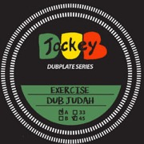
▶ Dub Judah
EXERCISE
streams only · logit -0.4 ± 0.1 · 4 tracks heard before · near Twilight Circus Dub Sound System · #dub #reggae #roots reggae #ragga
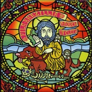
▶ Fila Brazillia
A Touch Of Cloth
12 tracks, 53 min · £7 or more · logit -0.5 ± 0.1 · 0.8 listens before · near The Orb · #downtempo #chillout #trip-hop #electronic
▶ Chinese American Bear
Wah!!!
11 tracks, 39 min · £8 or more · logit -0.3 ± 0.1 · 1.5 listens before · near Oracle Sisters, Pearl & the Oysters · #indie pop #indie rock #psychedelic rock #garage rock
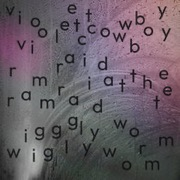
▶ Violet Cowboy
Ramraid at the Wiggly Worm
11 tracks, 68 min · £9 or more · logit -0.9 ± 0.1 · near Mo Kolours & The Co-Operators · #ambient #electronic #instrumental #techno
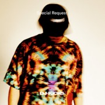
▶ Special Request
DJ-Kicks: Special Request
26 tracks, 227 min · €12 or more · logit -0.4 ± 0.1 · 0.6 listens before · near Nia Archives · #jungle #techno #drum and bass #uk garage
▶ Simon Mavin
Some Days
7 tracks, 25 min · $10 or more · logit -1.4 ± 0.1 · 0.1 listens before · near Salvator Dragatto · #jazz #psychedelic #funk #soul
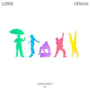
▶ Lewis OfMan
Dancy Party
5 tracks, 17 min · €4 or more · logit -0.4 ± 0.1 · 1 listen before · near Papooz · #french #electronic #france #indie
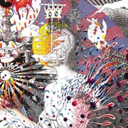
▶ Adam Wiltzie
Eleven Fugues for Sodium Pentothal
9 tracks, 37 min · $9 or more · logit -0.5 ± 0.1 · near Stars of the Lid · #ambient #drone #electronic #instrumental
▶ Mellow Mood
Move!
14 tracks, 59 min · €7 or more · logit -0.1 ± 0.1 · 0.7 listens before · near Manudigital · #reggae #dub #italian #italy
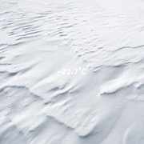
▶ Molecule
- 22.7°C
10 tracks, 65 min · €10 or more · logit +0.0 ± 0.2 · 0.5 listens before · near Zentone · #dub #electronic #downtempo #french
▶ Mount Kimbie
Crooks & Lovers
11 tracks, 35 min · £8 or more · logit -0.2 ± 0.1 · 1.4 listens before · near Burial · #dubstep #ambient #electronic #experimental
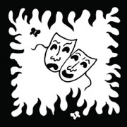
▶ Dehd
Flower Of Devotion
13 tracks, 38 min · $11 or more · logit -0.3 ± 0.1 · 0.5 listens before · near Rolling Blackouts Coastal Fever, Generationals · #indie rock #post-punk #crank wave #garage rock
▶ Vels Trio
Celestial Greens
11 tracks, 42 min · £8 or more · logit -0.4 ± 0.1 · 0.6 listens before · near Huw Marc Bennett · #jazz #instrumental #experimental #brighton
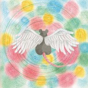
▶ Mei Semones
Animaru
10 tracks, 38 min · $10 or more · logit -0.8 ± 0.1 · near Pearl & the Oysters · #indie pop #jazz #bossa nova #japanese
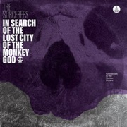
▶ The Sorcerers
In Search Of The Lost City Of The Monkey God
12 tracks, 41 min · £7 or more · logit -0.1 ± 0.1 · near Misha Panfilov · #jazz #funk #afrobeat #ethio-jazz
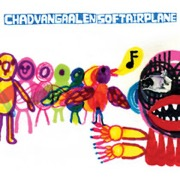
▶ Chad VanGaalen
Soft Airplane
13 tracks, 42 min · $10 · logit -0.1 ± 0.1 · 0.6 listens before · near Ultimate Painting · #singer-songwriter #indie #canadian #indie rock
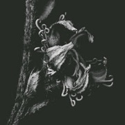
▶ Yui Onodera
1982
10 tracks, 34 min · $9 or more · logit -0.6 ± 0.1 · 0.1 listens before · near Triola · #ambient #drone #minimal #experimental
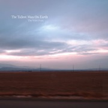
▶ The Tallest Man on Earth
The Wild Hunt
10 tracks, 35 min · $10 or more · logit -0.6 ± 0.1 · near M. Ward · #folk #singer-songwriter #acoustic #swedish
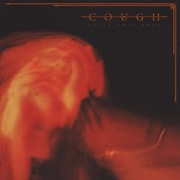
▶ Cough
Still They Pray
8 tracks, 68 min · $10 or more · logit -0.3 ± 0.1 · 0.1 listens before · near Om · #sludge #doom metal #sludge metal #doom
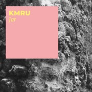
▶ KMRU
Jar
8 tracks, 39 min · €8 or more · logit -0.3 ± 0.1 · near Patricia Wolf, Stars of the Lid · #ambient #drone #kenya #electronic
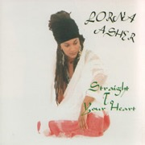
▶ Twinkle Brothers
Straight To Your Heart
15 tracks, 57 min · £7 or more · logit +0.5 ± 0.2 · 1.5 listens before · near The Revolutionaries, Michael Rose, Elijah Minnelli · #reggae #roots reggae #dub #roots
▶ Requin Chagrin
Requin Chagrin
8 tracks, 26 min · free · logit -0.5 ± 0.1 · near La Femme · #dream pop #french #indie #indie pop
▶ Green-House
Six Songs For Invisible Gardens
6 tracks, 27 min · $6 or more · logit -0.4 ± 0.1 · 1.3 listens before · near Domenique Dumont, Woo · #ambient #new age #electronic #experimental
▶ Nmesh
Dream Sequins®
18 tracks, 80 min · $8 or more · logit -0.4 ± 0.1 · 0.6 listens before · near desert sand feels warm at night · #vaporwave #ambient #electronic #experimental
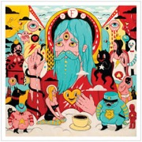
▶ Father John Misty
Fear Fun
12 tracks, 44 min · £10 or more · logit -0.2 ± 0.1 · 0.3 listens before · near Andy Shauf, Grizzly Bear, Daniel Rossen · #folk #indie #indie folk #alt-country
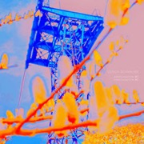
▶ Ulrich Schnauss
Improvisation #5/Improvisation #6
6 tracks, 138 min · name your price · logit -0.7 ± 0.1 · 0.8 listens before · near Boards of Canada · #ambient #electronic #chillout #idm
▶ Steve Hauschildt
S/H
37 tracks, 149 min · €10 or more · logit -0.5 ± 0.1 · 0.4 listens before · near Loscil, Patricia Wolf, E Ruscha V · #ambient #drone #experimental #psychedelic
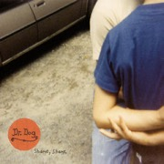
▶ Dr. Dog
Shame, Shame (Deluxe Edition)
11 tracks, 40 min · $7 or more · logit -0.0 ± 0.2 · 0.9 listens before · near Generationals, Mutual Benefit · #indie #indie rock #lo-fi #indie pop
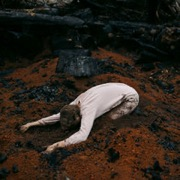
▶ Hannah Frances
Keeper of the Shepherd
7 tracks, 37 min · $13 or more · logit -0.2 ± 0.1 · near Daniel Rossen · #folk rock #folk #indie folk #singer-songwriter
▶ Ass
Ass
10 tracks, 18 min · name your price · logit -0.8 ± 0.1 · near Rickard Jäverling · #folk #acoustic #folktronica #swedish
▶ Nyron Higor
Nyron Higor
10 tracks, 24 min · £8.50 or more · logit -0.1 ± 0.1 · near Okonski, Gianni Brezzo · #jazz #ambient #latin #psychedelic
▶ Jana Horn
Optimism
10 tracks, 32 min · $10 or more · logit -0.5 ± 0.1 · near Mutual Benefit, Beverly Glenn-Copeland · #folk #lo-fi #indie #indie folk
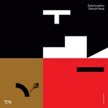
▶ Submorphics
Detroit Haze
10 tracks, 41 min · €7.50 or more · logit -0.5 ± 0.1 · 0.8 listens before · near Commix · #drum and bass #liquid funk #soulful drum and bass #dnb
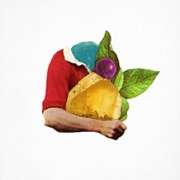
▶ SALES
SALES LP
15 tracks, 38 min · name your price · logit -0.7 ± 0.1 · near No Vacation, Alice Phoebe Lou · #lo-fi #indie pop #indie #minimal rock
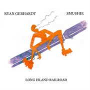
▶ Long Island Railroad
Long Island Railroad
5 tracks, 12 min · $5 or more · logit -1.0 ± 0.1 · near Sandy's
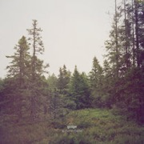
▶ Gidge
Autumn Bells
9 tracks, 65 min · €9 or more · logit -0.4 ± 0.1 · 0.3 listens before · near Clubroot · #ambient #electronic #microhouse #minimal techno
▶ Nerves
Glórach
8 tracks, 29 min · €7 or more · logit -1.4 ± 0.1 · near Family Man · #post-punk #punk #hardcore #noise rock
▶ Cornelia Murr
Lake Tear Of The Clouds
8 tracks, 32 min · $7 or more · logit -0.4 ± 0.1 · 0.5 listens before · near Alice Phoebe Lou · #art pop #indie pop #folk #acoustic
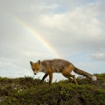
▶ Buck Meek
Buck Meek
10 tracks, 24 min · $10 or more · logit -0.2 ± 0.1 · 0.7 listens before · near Beverly Glenn-Copeland, Mutual Benefit, Andy Shauf · #folk #indie #singer-songwriter #americana
▶ Altone
Invincible Nature EP
4 tracks, 25 min · €6.50 or more · logit -0.4 ± 0.1 · 2 listens before · near Subset · #dub techno #japanese #deep house
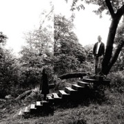
▶ Timber Timbre
Timber Timbre
14 tracks, 73 min · £7.99 or more · logit -0.1 ± 0.1 · 0.1 listens before · near Amen Dunes, Mutual Benefit, Andy Shauf · #folk #canadian #indie folk #indie
▶ Hiss Golden Messenger
Heart Like a Levee
11 tracks, 43 min · $9 or more · logit -0.4 ± 0.1 · 0.4 listens before · near Woods · #folk #alt-country #americana #folk rock
▶ Nubya Garcia
Source ⧺ We Move
9 tracks, 35 min · $9.99 or more · logit -0.5 ± 0.1 · near Greg Foat, Gianni Brezzo, Vega Trails · #jazz #jazz fusion #saxophone #london
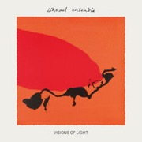
▶ ishmael ensemble
Visions Of Light
10 tracks, 41 min · £7 or more · logit -0.1 ± 0.1 · near Vega Trails, Gianni Brezzo, Greg Foat · #jazz #electronic #nu jazz #experimental
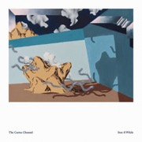
▶ The Cactus Channel
Stay A While
11 tracks, 51 min · $13 or more · logit -0.6 ± 0.1 · 0.5 listens before · near Adrian Quesada · #funk #soul #jazz #australian
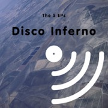
▶ Disco Inferno
The 5 EPs
15 tracks, 76 min · £9.99 or more · logit -0.4 ± 0.1 · near Labradford, Mark Hollis · #post-rock #post-punk #experimental #shoegaze
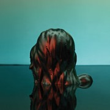
▶ Axel Boman
Family Vacation
13 tracks, 67 min · €11 or more · logit -0.2 ± 0.1 · 0.1 listens before · near Locked Groove · #house #deep house #electronic #minimal techno
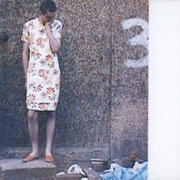
▶ Bogdan Raczynski
Thinking of You
11 tracks, 38 min · £8 or more · logit -0.5 ± 0.1 · near Aphex Twin · #idm #breakcore #electronic #experimental
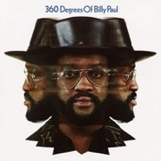
▶ Billy Paul
360 Degrees of Billy Paul
11 tracks, 61 min · £9 or more · logit -0.6 ± 0.1 · near Al Green · #soul #70s #jazz #rhythm and blues
▶ Youth Lagoon
The Year of Hibernation
11 tracks, 46 min · $9 or more · logit -0.2 ± 0.1 · near C Duncan · #dream pop #lo-fi #indie #chillwave
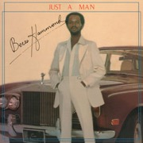
▶ Beres Hammond
Just A Man
8 tracks, 35 min · $12 or more · logit -0.1 ± 0.1 · 1.4 listens before · near Barrington Levy · #reggae #roots reggae #beres hammond #lovers rock
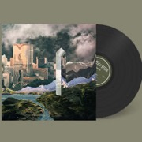
▶ Earth & Stone
SWR - Potency EP
4 tracks, 20 min · £4 or more · logit -0.3 ± 0.1 · 1.8 listens before · near Reggae Regular, Max Edwards, Aston 'Family Man' Barrett · #reggae #roots reggae #dub #jamaica
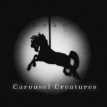
▶ Enko
Carousel Creatures
8 tracks, 43 min · €7 or more · logit -0.8 ± 0.1 · near Van der Wiese · #tekno #abstract #acid #noise
▶ Helios
Eingya
11 tracks, 52 min · $8.99 · logit -0.5 ± 0.1 · near Global Communication · #ambient #electronic #downtempo #idm
▶ Suns Of Arqa
Hallucinasia
12 tracks, 75 min · £5 or more · logit -0.3 ± 0.1 · 1.5 listens before · near Gaudi · #dub #ambient #world #downtempo
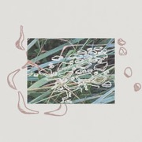
▶ Tristan Arp
Sculpturegardening
9 tracks, 30 min · £8 or more · logit -0.5 ± 0.1 · near Elijah Minnelli · #electronic #dub #experimental #ambient
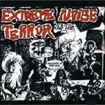
▶ Extreme Noise Terror
A Holocaust in Your Head
21 tracks, 36 min · £8.99 or more · logit -0.8 ± 0.1 · near Disrupt · #grindcore #crust #crust punk #death metal
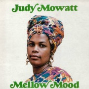
▶ Judy Mowatt
Mellow Mood
10 tracks, 34 min · $7 or more · logit +0.1 ± 0.2 · 0.8 listens before · near Michael Rose · #reggae #jamaica #dancehall #lion
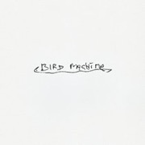
▶ Sparklehorse
Bird Machine
14 tracks, 44 min · $8 or more · logit -0.2 ± 0.1 · near The American Analog Set · #indie #indie rock #singer-songwriter #alternative
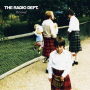
▶ The Radio Dept.
Pet Grief
12 tracks, 37 min · $7 or more · logit -0.5 ± 0.1 · 0.4 listens before · near The Clientele · #shoegaze #indie #swedish #indie pop
▶ Jim O'Rourke
Eureka
8 tracks, 42 min · $9 or more · logit -0.6 ± 0.1 · near Mark Hollis · #experimental #post-rock #avant-garde #indie
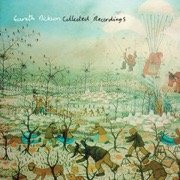
▶ Gareth Dickson
Collected Recordings
13 tracks, 59 min · $7 or more · logit -0.9 ± 0.1 · 0.2 listens before · near Tvärvägen, Rickard Jäverling · #folk #singer-songwriter #ambient #lo-fi
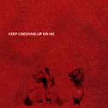
▶ Chartreuse
Keep Checking Up On Me
5 tracks, 17 min · £2.99 or more · logit -0.5 ± 0.1 · near C Duncan · #ambient #indie #indie folk #indie rock
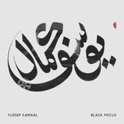
▶ Yussef Kamaal
Black Focus
10 tracks, 44 min · £9 or more · logit -0.6 ± 0.1 · 0.6 listens before · near Huw Marc Bennett · #jazz #jazz fusion #jazz-funk #london
▶ Julia Jacklin
Crushing
10 tracks, 39 min · £7.99 or more · logit -0.4 ± 0.1 · 1.2 listens before · near Alice Phoebe Lou, Andy Shauf · #singer-songwriter #folk #indie folk #indie
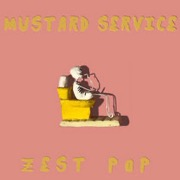
▶ Mustard Service
Zest Pop
10 tracks, 26 min · $9.99 or more · logit -1.4 ± 0.1 · near Pearl & the Oysters, No Vacation · #indie rock #indie pop #indie #rock
▶ Laraaji
Celestial Music 1978 - 2011
20 tracks, 120 min · £8 or more · logit -0.5 ± 0.1 · 0.8 listens before · near Woo · #ambient #minimalism #instrumental #african
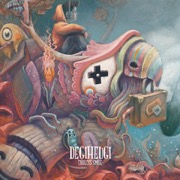
▶ Degiheugi
Endless Smile
16 tracks, 58 min · name your price · logit -1.0 ± 0.1 · 0.1 listens before · near Molecule · #trip-hop #downtempo #experimental #french
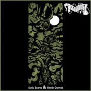
▶ Belzebong
Sonic Scapes & Weedy Grooves
4 tracks, 30 min · €6.66 or more · logit -0.4 ± 0.1 · 0.2 listens before · near Om · #doom metal #stoner metal #stoner doom #stoner rock
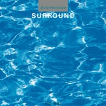
▶ Hiroshi Yoshimura
Surround
6 tracks, 40 min · $10 or more · logit -0.4 ± 0.1 · 0.7 listens before · near Domenique Dumont, Woo · #ambient #electronic #japanese #new age
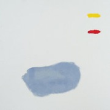
▶ Florist
If Blue Could Be Happiness
10 tracks, 36 min · $7 or more · logit -0.5 ± 0.1 · 0.6 listens before · near Mutual Benefit, Amen Dunes, Alice Phoebe Lou · #indie pop #lo-fi #folk #indie folk
▶ Van Bonn
Cloudwalker
5 tracks, 30 min · €4 or more · logit -0.5 ± 0.1 · 1 listen before · near Subset · #ambient #dub #downbeat #techno
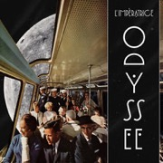
▶ L'Impératrice
Odyssée - EP
6 tracks, 22 min · €6 or more · logit -0.5 ± 0.1 · 0.7 listens before · near Papooz · #french #synthpop #electronic #funk
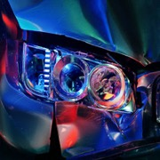
▶ Grand Blanc
Mémoires vives
13 tracks, 54 min · €9 or more · logit -0.5 ± 0.1 · near La Femme · #french #synthpop #france #coldwave
▶ MonochroMenace
ULTRAVIOLET
10 tracks, 31 min · $10 or more · logit -0.9 ± 0.1 · near Jamie Paige · #kasane teto #vocaloid #electronic #vocal synth
▶ Ronald Langestraat
Apollo
8 tracks, 35 min · €9 or more · logit -0.2 ± 0.1 · 0.4 listens before · near Okonski · #jazz #netherlands #dutch #latin jazz
▶ Travelers All Stars
XV Años de Reggae Gordo
12 tracks, 38 min · $12 or more · logit -0.4 ± 0.1 · 1 listen before · near Joe Yorke & The Co-operators · #reggae #ska #mexican #rocksteady
▶ John Tejada
Parabolas
12 tracks, 61 min · €12 or more · logit -0.3 ± 0.1 · 1.8 listens before · near Locked Groove · #minimal #techno #minimal techno #electronic
▶ VANITAS命死
Chromatic readymades from yourself
7 tracks, 23 min · name your price · logit -0.4 ± 0.1 · 2 listens before · near desert sand feels warm at night · #vaporwave #belgium #barber beats #belgian
▶ Luna
Penthouse
12 tracks, 57 min · $7 or more · logit -0.6 ± 0.1 · 0.4 listens before · near The Clientele · #dream pop #indie pop #indie #indie rock
▶ The Mellows
Take Me Out Of This World
5 tracks, 16 min · ¥1,000 or more · logit -1.0 ± 0.1 · near Sandy's · #doo wop #japanese #grunge #psychedelic
▶ Vansire
Angel Youth
17 tracks, 48 min · $17 or more · logit -0.8 ± 0.1 · near No Vacation · #dream pop #indie pop #lo-fi #bedroom pop
▶ No Vacation
Amo XO
8 tracks, 14 min · $5 or more · logit -0.7 ± 0.1 · 1.6 listens before · near Oracle Sisters · #indie pop #dream pop #indie #indie rock
▶ JJ Whitefield
Brother All Alone
11 tracks, 39 min · €10 or more · logit -0.2 ± 0.1 · near Misha Panfilov · #germany #jazz #psychedelic #rock
▶ Brendon Moeller
Repossession
4 tracks, 26 min · $4 or more · logit -0.2 ± 0.1 · 1.5 listens before · near Babe Roots · #dub techno #techno #dub #minimal
▶ Brandee Younger
Gadabout Season
10 tracks, 43 min · streams only · logit -0.5 ± 0.1 · near Greg Foat, Gianni Brezzo · #harp #jazz #funk #instrumental
▶ Johnny Tillotson
Live at Rock 'N' Roll Palace
4 tracks, 13 min · $4 or more · logit -0.5 ± 0.1 · near Paul Anka · #oldies #60s #rock n roll #pop
▶ Robert Lester Folsom
Ode To A Rainy Day: Archives 1972-1975
13 tracks, 39 min · $10 or more · logit -0.3 ± 0.1 · 1.8 listens before · near Beverly Glenn-Copeland, Dick Stusso, Alice Phoebe Lou · #folk #singer-songwriter #guitar #soft rock
▶ Oren Ambarchi
Hubris
3 tracks, 40 min · €7 or more · logit -0.5 ± 0.1 · 1.3 listens before · near Labradford · #drone #ambient #experimental #electronic
▶ La Phaze
Pungle Roads
13 tracks, 52 min · €7 or more · logit -0.5 ± 0.1 · near Zentone · #drum and bass #electronic #french #dub
▶ Cole Pulice
Land's End Eternal
6 tracks, 33 min · $7 or more · logit -0.4 ± 0.1 · near Patricia Wolf, Beverly Glenn-Copeland · #ambient #electronic #experimental #jazz
▶ Cylob
Cylobian Sunset
9 tracks, 44 min · £7 or more · logit -0.5 ± 0.1 · near Aphex Twin · #idm #electronic #ambient #electronica
▶ The Sight Below
It All Falls Apart
7 tracks, 50 min · $10 or more · logit -0.5 ± 0.1 · near Loscil · #ambient #electronic #shoegaze #minimal
▶ Overmono
Good Lies
13 tracks, 48 min · £9.99 or more · logit -0.5 ± 0.1 · 0.6 listens before · near Burial · #ambient #techno #breakbeat #hardcore
▶ Nausea
Condemned to the System
11 tracks, 29 min · $9.99 or more · logit -0.9 ± 0.1 · near Disrupt · #crust #crust punk #anarcho-punk #punk
▶ Nomieye
Tapestry of an Echo
5 tracks, 18 min · £3 or more · logit -1.0 ± 0.1 · near Mo Kolours & The Co-Operators · #jazz #ambient #instrumental #london
▶ Monsters of Folk
Monsters of Folk
15 tracks, 55 min · $10.99 or more · logit -0.8 ± 0.1 · near M. Ward · #folk #indie folk #indie rock #alt-country
▶ Blake Mills
Heigh Ho
12 tracks, 55 min · $7.99 or more · logit -0.2 ± 0.1 · 1.4 listens before · near Daniel Rossen · #singer-songwriter #guitar #folk #blues
▶ Guster
Ganging Up on the Sun
12 tracks, 49 min · $9 or more · logit -0.7 ± 0.1 · 0.1 listens before · near The Shins · #indie #alternative #alternative rock #indie rock
▶ The Proper Ornaments
Waiting for the Summer
10 tracks, 23 min · £6 or more · logit -0.4 ± 0.1 · 0.3 listens before · near Ultimate Painting · #indie #psychedelic #pop #psychedelic rock
▶ Steve Mason
Monkey Minds In The Devil's Time
20 tracks, 59 min · $9.99 or more · logit -0.8 ± 0.1 · near The Beta Band · #electronic #indie #scottish #acoustic
▶ Caroline Rose
Loner
11 tracks, 35 min · $10 or more · logit -0.2 ± 0.1 · 1.9 listens before · near Generationals, Alice Phoebe Lou · #folk #indie #indie pop #singer-songwriter
▶ Mammal Hands
Shadow Work
10 tracks, 47 min · £8.99 or more · logit -0.6 ± 0.1 · near Vega Trails, Gianni Brezzo, Greg Foat · #jazz #instrumental #contemporary jazz #saxophone
▶ Pitch Black
Ape to Angel
21 tracks, 147 min · £12 or more · logit -0.3 ± 0.1 · 0.3 listens before · near Gaudi · #dub #ambient #electronica #thrash metal
▶ Monophonics
It's Only Us
8 tracks, 39 min · $8 or more · logit -0.6 ± 0.1 · 0.5 listens before · near Adrian Quesada · #funk #soul #afrobeat #psychedelic
▶ Helado Negro
This Is How You Smile
12 tracks, 41 min · $12 or more · logit -0.2 ± 0.1 · 0.3 listens before · near Amen Dunes, Beverly Glenn-Copeland · #experimental #folk #electronic #psychedelic
▶ Ida
I Know About You
15 tracks, 67 min · $10 or more · logit -0.5 ± 0.1 · near The American Analog Set · #slowcore #indie #indie rock #folk
▶ YL Hooi
Untitled
10 tracks, 31 min · $14 or more · logit -0.6 ± 0.1 · near Elijah Minnelli · #dub #electronic #post-punk #psychedelic
▶ Martina Topley-Bird
Some Place Simple
15 tracks, 37 min · €9 or more · logit -0.4 ± 0.1 · near Portishead · #trip-hop #downtempo #electronic #indie
▶ Congi
Congi Selection
10 tracks, 51 min · £7 or more · logit -0.6 ± 0.1 · 2 listens before · near Clubroot · #dubstep #electronic #downtempo #bass
▶ The Halo Benders
The Rebels Not In
11 tracks, 48 min · $9.99 or more · logit -0.5 ± 0.1 · near Built to Spill · #indie rock #lo-fi #indie #alternative
▶ Leandro Fresco
El reino invisible
10 tracks, 55 min · €10 or more · logit -0.7 ± 0.1 · near Triola · #ambient #drone #electronic #argentina
▶ Ducktails
The Flower Lane
10 tracks, 40 min · $10 or more · logit -0.4 ± 0.1 · 0.3 listens before · near Woods · #lo-fi #psychedelic #experimental #tropical
▶ Science Man
NINES MECCA
10 tracks, 19 min · name your price · logit -1.6 ± 0.1 · near Family Man · #punk #punk rock #hardcore punk #hardcore
▶ Girls
Album
12 tracks, 44 min · $10 or more · logit -0.6 ± 0.1 · 0.4 listens before · near Mutual Benefit, Amen Dunes, Rolling Blackouts Coastal Fever · #lo-fi #indie #indie pop #indie rock
▶ Sebadoh
Harmacy
35 tracks, 88 min · $10 · logit -0.5 ± 0.1 · under 0.1 listens before · near Built to Spill · #lo-fi #indie rock #indie #alternative
▶ Bing & Ruth
No Home of the Mind
10 tracks, 59 min · £9.49 or more · logit -0.5 ± 0.1 · near Stars of the Lid · #ambient #drone #piano #contemporary classical
▶ Tokyo Police Club
A Lesson In Crime
8 tracks, 18 min · £5 or more · logit -0.6 ± 0.1 · near Rolling Blackouts Coastal Fever, Generationals · #indie rock #indie #canadian #post-punk
▶ Caroline
caroline 2
15 tracks, 83 min · £9.99 or more · logit -0.4 ± 0.1 · near Daniel Rossen · #electronic #indie #japanese #electronica
▶ Other Lives
Tamer Animals
12 tracks, 44 min · $10 or more · logit -0.6 ± 0.1 · near C Duncan · #indie #folk #indie folk #alternative
▶ Kuba
Inside Out
11 tracks, 70 min · name your price · logit -0.6 ± 0.1 · near Gaudi · #ambient #downtempo #psychill #dub
▶ Jessica Pratt
On Your Own Love Again
9 tracks, 32 min · $9 or more · logit -0.2 ± 0.1 · 0.7 listens before · near Amen Dunes, Beverly Glenn-Copeland, Alice Phoebe Lou · #folk #singer-songwriter #acoustic #psychedelic folk
▶ Robert Babicz
Mister Head
3 tracks, 22 min · €5 or more · logit -0.5 ± 0.1 · 0.3 listens before · near Locked Groove · #minimal #techno #minimal techno #electronic
▶ Lawrence English
A Colour for Autumn
7 tracks, 37 min · $9 or more · logit -0.6 ± 0.1 · near Loscil, Stars of the Lid · #ambient #drone #experimental #electronic
▶ Dopelord
Sign of the Devil
6 tracks, 36 min · €6.66 or more · logit -0.5 ± 0.1 · 1 listen before · near Om · #doom metal #stoner metal #stoner doom #stoner
▶ Rilo Kiley
The Execution of All Things
12 tracks, 48 min · $10 or more · logit -0.8 ± 0.1 · near The Shins · #indie #indie rock #indie pop #alternative
▶ GoGo Penguin
v2.0
13 tracks, 61 min · £8.99 or more · logit -0.8 ± 0.1 · near Vega Trails, Greg Foat · #jazz #jazz fusion #progressive jazz #post-rock
▶ Arlo Parks
Collapsed in Sunbeams
12 tracks, 41 min · £9.99 or more · logit -1.1 ± 0.1 · near Nia Archives · #soul #rnb #pop #neo-soul
▶ Agar Agar
Cardan
5 tracks, 31 min · €10 or more · logit -0.5 ± 0.1 · 1 listen before · near Papooz · #synthpop #indie pop #french #france
▶ Hoops
Routines
11 tracks, 33 min · $9 or more · logit -0.5 ± 0.1 · near Ultimate Painting · #jangle pop #indie #lo-fi #indie rock
▶ Wax Tailor
Tales of the Forgotten Melodies
18 tracks, 52 min · €7 or more · logit -0.4 ± 0.1 · near Portishead · #trip-hop #downtempo #electronic #hip-hop
▶ Duppy Gun Productions
Miro Tape
streams only · logit -1.0 ± 0.1 · near Elijah Minnelli · #dub #reggae #electronic #jamaica
▶ megiapa
(parenthesis)
4 tracks, 12 min · $4 or more · logit -1.2 ± 0.1 · near Mo Kolours & The Co-Operators · #electronic #jazz #experimental #soul
▶ Erik Enocksson
Farväl Falkenberg
10 tracks, 36 min · €8 or more · logit -0.8 ± 0.1 · near Rickard Jäverling · #ambient #instrumental #swedish #folk
▶ Mojave 3
Ask Me Tomorrow
9 tracks, 41 min · £9.99 or more · logit -0.7 ± 0.1 · 0.9 listens before · near The Clientele · #dream pop #shoegaze #folk #indie
▶ The Olympians
The Olympians
11 tracks, 40 min · $7.99 or more · logit -0.6 ± 0.1 · 0.8 listens before · near Adrian Quesada, Misha Panfilov · #jazz #soul #funk #afro soul
▶ Luxury Elite
world class
20 tracks, 49 min · name your price · logit -0.5 ± 0.1 · 0.7 listens before · near desert sand feels warm at night · #vaporwave #newbreed #chillwave #electronic
▶ Naran Ratan
trees etc.
9 tracks, 22 min · £9 or more · logit -0.4 ± 0.1 · 1.2 listens before · near Domenique Dumont, Woo · #ambient #tasty morsels #electronic #heard from a spaceship
▶ Frank LoCrasto
El Dorado
9 tracks, 33 min · $7 or more · logit -0.3 ± 0.1 · 0.4 listens before · near Misha Panfilov · #instrumental #jazz #easy listening #electronic
▶ Someone Still Loves You Boris Yeltsin
Broom
10 tracks, 29 min · $10 or more · logit -0.3 ± 0.1 · near Generationals, The Shins · #indie #indie pop #indie rock #lo-fi
▶ Helena Deland
Someone New
13 tracks, 48 min · $9.99 or more · logit -0.4 ± 0.1 · 0.3 listens before · near Alice Phoebe Lou, Mutual Benefit, Andy Shauf · #folk #singer-songwriter #canadian #acoustic
▶ Jessica Bailiff
Even In Silence
10 tracks, 52 min · $9 or more · logit -0.6 ± 0.1 · near Labradford · #slowcore #post-rock #shoegaze #singer-songwriter
▶ Mother Funk
Coastal
9 tracks, 34 min · $7 or more · logit -1.2 ± 0.1 · 0.1 listens before · near Sandy's · #jazz
▶ Pass Into Silence
Calm Like a Millpond
5 tracks, 32 min · €6 or more · logit -0.7 ± 0.1 · near Triola · #ambient #electronic #idm #chillout
▶ Leif Vollebekk
New Ways
10 tracks, 41 min · $9.99 · logit -0.4 ± 0.1 · near Andy Shauf · #folk #canadian #singer-songwriter #indie folk
▶ Deer Tick
War Elephant
14 tracks, 48 min · $9 or more · logit -0.8 ± 0.1 · near M. Ward, Mutual Benefit · #folk #alt-country #indie #singer-songwriter
▶ Pye Corner Audio
Where Things Are Hollow
4 tracks, 23 min · €3.50 or more · logit -0.7 ± 0.1 · 1.8 listens before · near Global Communication, Patricia Wolf · #electronic #experimental #hauntology #ambient
▶ Jon Hassell
Listening To Pictures (Pentimento Volume One)
8 tracks, 39 min · £10 · logit -0.6 ± 0.1 · 0.8 listens before · near Woo · #ambient #jazz #experimental #electronic
▶ Michael Palmer
Pull It Up Now
10 tracks, 33 min · $12 or more · logit -0.6 ± 0.1 · 0.7 listens before · near Reggae Regular · #reggae #dancehall #dub #rub-a-dub
▶ The O'Jays
Back Stabbers
10 tracks, 41 min · £9 or more · logit -0.8 ± 0.1 · near Al Green · #soul #funk #motown #philly soul
▶ Alfa Mist
Antiphon
8 tracks, 53 min · £7 or more · logit -0.5 ± 0.1 · near Okonski, Gianni Brezzo, Greg Foat · #jazz #jazz fusion #jazz-hop #hip-hop
▶ Disgust
A world of no beauty
20 tracks, 65 min · £7 or more · logit -0.9 ± 0.1 · near Disrupt · #crust #d-beat #grindcore #hardcore
▶ Thylacine
Transsiberian
10 tracks, 40 min · €9 or more · logit -1.0 ± 0.1 · near Molecule, La Femme · #electronic #french #hardcore #punk
▶ Purplene
Purplene
8 tracks, 42 min · $10 or more · logit -1.3 ± 0.1 · near Ukiyo-E · #slowcore #indie #post-rock #math rock
▶ Wendy Eisenberg
Wendy Eisenberg
10 tracks, 44 min · $10 or more · logit -0.4 ± 0.1 · near Beverly Glenn-Copeland, Amen Dunes · #experimental #folk #guitar #jazz
▶ Hiss Is Bliss
Buy My DVD
3 tracks, 20 min · $5.50 or more · logit -0.2 ± 0.1 · 0.7 listens before · near Babe Roots · #dub techno #reggae
▶ GAK
GAK
4 tracks, 24 min · £4.50 or more · logit -0.7 ± 0.1 · near Aphex Twin · #idm #electronic #techno #experimental
▶ White Fence
For The Recently Found Innocent
14 tracks, 40 min · $9 or more · logit -0.8 ± 0.1 · 0.2 listens before · near Woods · #lo-fi #psychedelic rock #psychedelic #garage rock
▶ Jr. Thomas & The Volcanos
Rockstone
10 tracks, 33 min · $10 or more · logit -0.4 ± 0.1 · near Joe Yorke & The Co-operators · #reggae #rocksteady #reggae revival #skinhead reggae
▶ Kiddus I
Rockers: Graduation in Zion 1978-1980
14 tracks, 61 min · $12 or more · logit -0.4 ± 0.1 · 1.3 listens before · near Aston 'Family Man' Barrett · #reggae #roots reggae #dub #rockers
▶ Peter Bjorn and John
Gimme Some
11 tracks, 37 min · $5 or more · logit -0.4 ± 0.1 · near Generationals, The Shins · #indie #swedish #indie pop #indie rock
▶ Kara Jackson
Why Does The Earth Give Us People To Love?
13 tracks, 52 min · $9.99 or more · logit -0.5 ± 0.1 · near Daniel Rossen · #singer-songwriter #folk #contemporary folk #indie folk
▶ Dinosaur Jr.
You're Living All Over Me
10 tracks, 39 min · $10 or more · logit -0.6 ± 0.1 · near Built to Spill · #alternative #grunge #indie rock #indie
▶ Belong
October Language
8 tracks, 45 min · €7 or more · logit -0.6 ± 0.1 · near Labradford, Stars of the Lid · #ambient #drone #shoegaze #experimental
▶ Isaac Delusion
Rust & Gold
12 tracks, 46 min · €10 or more · logit -0.5 ± 0.1 · 1 listen before · near Papooz, Oracle Sisters · #indie pop #indietronica #electronic #downtempo
▶ Mattias Alkberg
Anarkist
12 tracks, 49 min · 70 or more · logit -1.6 ± 0.1 · near Tvärvägen, Rickard Jäverling · #swedish #indie #rockabilly #rock
▶ Webinar™
w w w . d e e p d i v e . c o m
15 tracks, 63 min · name your price · logit -0.5 ± 0.1 · 0.7 listens before · near desert sand feels warm at night · #experimental #united states #utah #vaporwave
▶ Manutension
Strictly For Sound System Dub (Dub Attacks The Tech, Vol. 1)
12 tracks, 68 min · €7.50 or more · logit -0.5 ± 0.1 · 1.9 listens before · near Twilight Circus Dub Sound System · #dub #electro dub #electronic #french
▶ Organic Pulse Ensemble
Formative Stages
9 tracks, 38 min · €8 or more · logit -0.5 ± 0.1 · near Misha Panfilov · #jazz #swedish #guitar #trumpet
▶ The Kyoto Connection
Postcards
15 tracks, 61 min · $10 or more · logit -0.4 ± 0.1 · 0.5 listens before · near Domenique Dumont · #ambient #pop #electronic #electronica
▶ Laurie Torres
Après coup
11 tracks, 33 min · £10 or more · logit -0.6 ± 0.1 · 1.1 listens before · near Okonski · #piano #jazz #ambient #canadian
▶ Doom
Total Doom
37 tracks, 68 min · £9.99 or more · logit -0.9 ± 0.1 · near Disrupt · #crust #crust punk #hip-hop #punk
▶ Spaceslug
Lemanis
7 tracks, 44 min · $7 or more · logit -0.5 ± 0.1 · near Om · #doom metal #stoner metal #stoner rock #space rock
▶ The Charlatans
Some Friendly
11 tracks, 48 min · £9.99 or more · logit -0.9 ± 0.1 · near The Beta Band · #britpop #indie #madchester #rock
▶ TORRES
Sprinter
9 tracks, 45 min · $8 or more · logit -0.6 ± 0.1 · near C Duncan · #indie #folk #alternative #indie pop
▶ Rhoda Dakar
Sings The Bodysnatchers
13 tracks, 40 min · £7 or more · logit -1.0 ± 0.1 · 0.1 listens before · near Joe Yorke & The Co-operators · #reggae #ska #female vocal #rocksteady
▶ Tale of Us
North Star / Silent Space
2 tracks, 15 min · £2 or more · logit -0.7 ± 0.1 · near Locked Groove · #deep house #house #electronic #tech house
▶ Concrete Jane
Brand New Slave
8 tracks, 38 min · 7 · logit -1.3 ± 0.1 · near Mo Kolours & The Co-Operators · #rock #swiss
▶ Abul Mogard
Circular Forms
4 tracks, 36 min · €8 or more · logit -0.6 ± 0.1 · near Loscil · #ambient #drone #dark ambient #noise
▶ Jackie Cohen
Tacoma Night Terror Part 1: I've Got The Blues
4 tracks, 13 min · $4 or more · logit -0.5 ± 0.1 · 0.5 listens before · near Dick Stusso · #folk rock #indie pop #alt-country #country
▶ Blank Gloss
Melt
10 tracks, 42 min · €10 or more · logit -0.7 ± 0.1 · near Triola · #ambient #electronic #rock #guitar
▶ Steve Roach
Structures From Silence
7 tracks, 190 min · streams only · logit -0.8 ± 0.1 · near Global Communication, Stars of the Lid · #ambient #electronic #dark ambient #new age
▶ Ducks Ltd.
Modern Fiction
10 tracks, 30 min · $9.99 or more · logit -0.6 ± 0.1 · near Rolling Blackouts Coastal Fever, Ultimate Painting, Generationals · #indie pop #jangle pop #indie rock #twee
▶ The Budos Band
The Budos Band
11 tracks, 37 min · $7.99 or more · logit -0.6 ± 0.1 · 1.2 listens before · near Adrian Quesada · #funk #afrobeat #jazz #soul
▶ Haley Heynderickx
I Need to Start a Garden
8 tracks, 31 min · $8 or more · logit -0.4 ± 0.1 · 2 listens before · near Alice Phoebe Lou, Mutual Benefit, Andy Shauf · #folk #singer-songwriter #indie folk #acoustic
▶ Zen Baboon
Beat Generation
9 tracks, 46 min · €7 or more · logit -0.6 ± 0.1 · near Gaudi · #ambient #chillout #psychill #psybient
▶ AIR G
Album track ancien live
10 tracks, 74 min · €7 or more · logit -1.0 ± 0.1 · near Van der Wiese · #acidcore #tekno #mentalcore
▶ Greg Mendez
Greg Mendez
9 tracks, 23 min · $8 or more · logit -0.5 ± 0.1 · near Andy Shauf · #indie #indie rock #indie folk
▶ Boozoo Bajou
Finistère
12 tracks, 64 min · €8 or more · logit -0.4 ± 0.1 · 1.3 listens before · near Portishead · #downtempo #chillout #lounge #trip-hop
▶ Fred Locks
Black Star Liner
10 tracks, 30 min · $9 or more · logit -0.6 ± 0.1 · 1.1 listens before · near Reggae Regular · #reggae #roots reggae #rasta #dub
▶ Long Knife
Sewers of Babylon
5 tracks, 8 min · $3 or more · logit -1.6 ± 0.1 · near Family Man · #hardcore punk #hardcore #punk #portland
▶ Julie Byrne
Not Even Happiness
9 tracks, 33 min · $7 or more · logit -0.4 ± 0.1 · 0.2 listens before · near Beverly Glenn-Copeland, Alice Phoebe Lou, Daniel Rossen · #folk #singer-songwriter #indie folk #acoustic
▶ Penny Arcade
Double Exposure
12 tracks, 30 min · €9 or more · logit -0.6 ± 0.1 · near Ultimate Painting · #indie pop #indie rock #guitar pop #jangle pop
▶ Angel Olsen
MY WOMAN
10 tracks, 48 min · $10 or more · logit -0.5 ± 0.1 · 1 listen before · near Amen Dunes, Mutual Benefit, Alice Phoebe Lou · #folk #indie folk #lo-fi #dark folk
▶ Knowledge
S.W.A.R.M.
7 tracks, 26 min · name your price · logit -0.5 ± 0.1 · near Max Edwards, Reggae Regular · #reggae #roots reggae #punk #roots
▶ The Pastels
Truckload Of Trouble
18 tracks, 62 min · £10 · logit -0.7 ± 0.1 · 0.2 listens before · near The Clientele, The High Llamas · #indie pop #twee #scottish #c86
▶ Portico
Living Fields
9 tracks, 37 min · $9.30 or more · logit -1.0 ± 0.1 · 0.2 listens before · near Vega Trails, Gianni Brezzo, Greg Foat · #jazz #electronic #instrumental #modern jazz
▶ Harold Budd
Avalon Sutra (2013 Remaster)
15 tracks, 115 min · $17 or more · logit -0.7 ± 0.1 · 0.1 listens before · near Stars of the Lid · #ambient #minimalism #piano #contemporary classical
▶ Al Wootton
Body Healthy
4 tracks, 22 min · £4 or more · logit -0.3 ± 0.1 · near Babe Roots · #dub techno #dub #electronic #techno
▶ asuka ando
Double Happienss
15 tracks, 67 min · ¥2,200 or more · logit -1.0 ± 0.1 · near ペッカー · #reggae #japanese #dub #female vocal
▶ mukaizake
Mapping the Static
10 tracks, 48 min · $8 · logit -1.4 ± 0.1 · near Ukiyo-E · #math rock #indie rock #australian #slowcore
▶ Tvärvägen
Staring directly into the sun
8 tracks, 24 min · $7 or more · logit -0.8 ± 0.1 · 0.6 listens before · near Rickard Jäverling · #swedish #singer-songwriter #indie folk #folk
▶ Jefre Cantu-Ledesma
Love Is a Stream
12 tracks, 45 min · name your price · logit -0.6 ± 0.1 · 0.8 listens before · near Woo · #ambient #drone #noise #experimental
▶ The Belair Lip Bombs
Again
10 tracks, 34 min · $15 or more · logit -0.8 ± 0.1 · near Rolling Blackouts Coastal Fever · #indie rock #rock #psychedelic #surf
▶ Coconut Records
Nighttiming
12 tracks, 33 min · $5 or more · logit -0.4 ± 0.1 · near Generationals, The Shins · #indie #indie pop #alternative #indie rock
▶ Kliment
The Perpetual Ritual
8 tracks, 72 min · €9 or more · logit -0.6 ± 0.1 · near Gaudi · #ambient #psychill #progressive trance #progressive
▶ Sml
Small Medium Large
13 tracks, 43 min · $9.99 or more · logit -0.5 ± 0.1 · 0.1 listens before · near Beverly Glenn-Copeland, Okonski, Greg Foat · #jazz #experimental #instrumental #psychedelic
▶ Ashley Henry
Beautiful Vinyl Hunter
15 tracks, 70 min · £15 or more · logit -0.7 ± 0.1 · near Greg Foat, Gianni Brezzo, Vega Trails · #jazz #london #england #funk
▶ Balroynigress
Shampoo & Champagne
10 tracks, 34 min · €5 or more · logit -0.9 ± 0.1 · near Rickard Jäverling · #ambient #french #swedish #indie
▶ death's dynamic shroud
I'll Try Living Like This
12 tracks, 60 min · name your price · logit -0.9 ± 0.1 · 0.2 listens before · near desert sand feels warm at night · #vaporwave #electronic #glitch pop #glitch
▶ Moldetek
Lost Particle Sample Pack by Moldetek
11 tracks, 1 min · €20 or more · logit -1.0 ± 0.1 · near Van der Wiese · #spain #tekno
▶ Reinhard Voigt
Im Wandel der Zeit
9 tracks, 48 min · €10 or more · logit -0.8 ± 0.1 · near Triola · #minimal #techno #electronic #kompakt
▶ Django Django
Django Django
13 tracks, 49 min · €7 or more · logit -0.6 ± 0.1 · near C Duncan · #psychedelic #indie #experimental #indie rock
▶ Penza Penza
Neanderthal Rock
8 tracks, 34 min · €10 or more · logit -0.6 ± 0.1 · near Misha Panfilov · #funk #jazz #psychedelic #psychedelic rock
▶ Conor Oberst
Conor Oberst
12 tracks, 42 min · $9 or more · logit -1.2 ± 0.1 · near M. Ward · #singer-songwriter #folk #indie #indie rock
▶ The Aliens
Luna
13 tracks, 67 min · £7.99 or more · logit -0.9 ± 0.1 · near The Beta Band · #psychedelic #indie #scottish #alternative
▶ Christian Lee Hutson
Beginners
10 tracks, 37 min · $8 or more · logit -0.6 ± 0.1 · 0.6 listens before · near Andy Shauf · #indie folk #folk #singer-songwriter #indie
▶ The Raveonettes
Chain Gang of Love
streams only · logit -0.9 ± 0.1 · near Ultimate Painting · #indie rock #indie #danish #alternative
▶ Bong
Mana-Yood-Sushai
2 tracks, 46 min · £6 or more · logit -0.5 ± 0.1 · 1 listen before · near Om · #drone #psychedelic #sludge #drone doom
▶ Teddy Pendergrass
Duets - Love & Soul
12 tracks, 56 min · $12 or more · logit -1.0 ± 0.1 · near Al Green · #soul #rnb #philly soul #sexy
▶ Yazmin Lacey
Morning Matters
5 tracks, 22 min · $4.99 or more · logit -0.8 ± 0.1 · near Adrian Quesada · #jazz #soul #funk #rnb
▶ Jim Stoten
22
7 tracks, 50 min · £10 · logit -1.4 ± 0.1 · near Mo Kolours & The Co-Operators · #london #psychedelic #pop #singer-songwriter
▶ Chihei Hatakeyama
Void XXI
11 tracks, 46 min · $10 or more · logit -0.6 ± 0.1 · 0.5 listens before · near Loscil, Patricia Wolf, Stars of the Lid · #ambient #minimal #japanese #electronic
▶ Dusty Kid
Anatome EP Vol.1
2 tracks, 23 min · €2.50 or more · logit -0.7 ± 0.1 · near Locked Groove · #techno #minimal #minimal techno #electronic
▶ Mansfield.TYA
Monument Ordinaire
12 tracks, 41 min · €9 or more · logit -0.8 ± 0.1 · near La Femme · #french #folk #indie #avantgarde pop
▶ Mad Anthony
The Lost Tapes
8 tracks, 30 min · $10 or more · logit -0.7 ± 0.1 · near Dick Stusso · #hard rock #psychedelic rock #alternative rock #phratry records
▶ Kyle Bobby Dunn
Bring Me the Head of Kyle Bobby Dunn
15 tracks, 122 min · $9 or more · logit -0.7 ± 0.1 · near Stars of the Lid, Loscil · #ambient #drone #minimal #experimental
▶ Sufjan Stevens & Angelo De Augustine
A Beginner's Mind
14 tracks, 46 min · $10 or more · logit -0.6 ± 0.1 · near Daniel Rossen · #folk #indie #alternative #singer-songwriter
▶ School Drugs
Modern Medicine
10 tracks, 18 min · $8 or more · logit -1.6 ± 0.1 · near Family Man · #hardcore #hardcore punk #punk #new jersey
▶ Sharp Pins
Radio DDR
14 tracks, 43 min · $14 or more · logit -1.3 ± 0.1 · near Ultimate Painting · #jangle pop #power pop #lo-fi #mod
▶ Elephant Tree
Elephant Tree
8 tracks, 38 min · $7 or more · logit -0.5 ± 0.1 · near Om · #doom metal #stoner metal #stoner rock #stoner
▶ Grouper
Dragging a Dead Deer Up a Hill
12 tracks, 46 min · $8 or more · logit -0.8 ± 0.1 · 0.8 listens before · near Stars of the Lid · #ambient #drone #experimental #shoegaze
▶ Superchunk
Foolish
12 tracks, 50 min · $9 or more · logit -0.8 ± 0.1 · near Built to Spill, Rolling Blackouts Coastal Fever · #indie rock #indie #alternative #post-punk
▶ Voyou
Les bruits de la ville
12 tracks, 46 min · €10 or more · logit -0.6 ± 0.1 · 0.6 listens before · near Papooz · #france #french #pop #techno
▶ Ra Ra Riot
The Rhumb Line
10 tracks, 37 min · $9 or more · logit -0.4 ± 0.1 · 0.1 listens before · near Generationals, The Shins · #indie #indie pop #indie rock #alternative
▶ Shulman
Endless Rhythms of the Beatless Heart
8 tracks, 77 min · $8.99 or more · logit -0.6 ± 0.1 · near Gaudi · #ambient #psychill #chillout #psychedelic
▶ Ann Peebles
I Can't Stand The Rain
10 tracks, 27 min · $7 or more · logit -1.0 ± 0.1 · 0.3 listens before · near Al Green · #soul #funk #rhythm and blues #rnb
▶ Dagmar Zuniga
in filth your mystery is kingdom / far smile peasant in yellow music
14 tracks, 29 min · £10 or more · logit -0.6 ± 0.1 · 0.1 listens before · near Beverly Glenn-Copeland, Amen Dunes · #folk #psychedelic #experimental #singer-songwriter
▶ Misha Panfilov & Shawn Lee
Paradise Cove
12 tracks, 36 min · €12 or more · logit -0.6 ± 0.1 · near Misha Panfilov · #jazz #rock #instrumental #psychedelic
▶ Tapir!
The Pilgrim, Their God and the King of My Decrepit Mountain
12 tracks, 45 min · £8.99 or more · logit -0.6 ± 0.1 · near Daniel Rossen · #indie folk #folk #folktronica #heavenly recordings
▶ BC Camplight
Shortly After Takeoff
9 tracks, 34 min · £7 or more · logit -0.6 ± 0.1 · near C Duncan · #singer-songwriter #indie pop #indie rock #psychedelic pop
▶ Anti Cimex
Scandinavian Jawbreaker
12 tracks, 41 min · $666 or more · logit -1.0 ± 0.1 · near Disrupt · #d-beat #crust #hardcore punk #punk
▶ Tetrack
Let's Get Started
10 tracks, 32 min · $8 or more · logit -0.7 ± 0.1 · 1.3 listens before · near Reggae Regular · #reggae #dub #roots reggae #roots
▶ Matt Kivel
Days of Being Wild
14 tracks, 41 min · $8 or more · logit -1.1 ± 0.1 · near Rickard Jäverling · #folk #indie folk #psychedelic #psychedelic rock
▶ Thore Pfeiffer
Im Blickfeld
11 tracks, 68 min · €10 or more · logit -1.1 ± 0.1 · near Triola · #electronic #ambient #experimental #minimal
▶ Rafael Anton Irisarri
Daydreaming
7 tracks, 34 min · $10 or more · logit -0.7 ± 0.1 · 0.3 listens before · near Loscil · #ambient #piano #modern classical #contemporary classical
▶ Happy Mondays
Greatest Hits
15 tracks, 74 min · €10 or more · logit -1.0 ± 0.1 · near The Beta Band · #madchester #indie #alternative #new wave
▶ Radio Slave
Bell Clap Hands (Tuff City Kids Remixes)
3 tracks, 23 min · £3.75 or more · logit -0.8 ± 0.1 · near Locked Groove · #minimal #techno #house #minimal techno
▶ Loma
Don't Shy Away
11 tracks, 44 min · $10 · logit -0.7 ± 0.1 · 0.4 listens before · near C Duncan · #indie #ambient #rock #indie rock
▶ REZN
Chaotic Divine
11 tracks, 65 min · $7 or more · logit -0.6 ± 0.1 · near Om · #doom metal #stoner metal #psychedelic rock #psychedelic
▶ Misophone
Where has it gone, all the beautiful music of our grandparents? It died with them, that’s where it went...
10 tracks, 34 min · streams only · logit -1.2 ± 0.1 · near Rickard Jäverling · #folk #experimental #singer-songwriter #lo-fi
▶ Bombay Bicycle Club
So Long, See You Tomorrow
10 tracks, 45 min · £5 or more · logit -0.8 ± 0.1 · near Rolling Blackouts Coastal Fever, The Shins, Generationals · #indie #indie rock #alternative #indie pop
▶ Julianna Barwick
Nepenthe
10 tracks, 42 min · $10 or more · logit -0.6 ± 0.1 · near Beverly Glenn-Copeland, Patricia Wolf · #ambient #experimental #dream pop #drone
▶ Desert Dwellers
DownTemple Dub: Remixed
11 tracks, 70 min · $9 or more · logit -0.7 ± 0.1 · near Gaudi · #ambient #chillout #downtempo #world fusion
▶ Poolside
Pacific Standard Time
16 tracks, 73 min · $5 or more · logit -0.8 ± 0.1 · 1.6 listens before · near Papooz · #electronic #indie pop #dance #electronica
▶ Celer
Landmarks
14 tracks, 56 min · ¥1,500 or more · logit -0.8 ± 0.1 · near Loscil, Stars of the Lid, Patricia Wolf · #ambient #drone #minimal #dark ambient
▶ Lennie Hibbert
Creation
14 tracks, 42 min · $12 or more · logit -1.0 ± 0.1 · 0.1 listens before · near Aston 'Family Man' Barrett · #reggae #jamaica #early reggae #lounge
▶ Woo York
Chasing The Dream
13 tracks, 74 min · €10 or more · logit -1.0 ± 0.1 · near Locked Groove · #techno #ukrainian #electronic #minimal
▶ Royel Otis
Sofa Kings
7 tracks, 21 min · $14.99 or more · logit -0.9 ± 0.1 · 1 listen before · near Rolling Blackouts Coastal Fever, Oracle Sisters, Generationals · #indie pop #indie rock #lo-fi #australian
▶ Lucrecia Dalt
¡Ay!
10 tracks, 35 min · $12 or more · logit -0.6 ± 0.1 · near Beverly Glenn-Copeland, Patricia Wolf, Amen Dunes · #ambient #experimental #folk #electronic
▶ Kid Francescoli
Play Me Again
11 tracks, 37 min · €7 or more · logit -0.8 ± 0.1 · 0.3 listens before · near Papooz · #french #electronic #indie pop #pop
▶ Saafi Brothers
Supernatural
11 tracks, 78 min · €9 or more · logit -0.7 ± 0.1 · near Gaudi · #ambient #psychill #chillout #psytrance
▶ Katy J Pearson
Return
10 tracks, 41 min · £6.99 or more · logit -0.8 ± 0.1 · near C Duncan · #indie pop #indie rock #pop #indie folk
▶ Psychic Ills
Hazed Dream
11 tracks, 41 min · $9 or more · logit -0.7 ± 0.1 · 0.4 listens before · near Om · #psychedelic #experimental #psychedelic rock #space rock
▶ Pale Blue Eyes
Souvenirs
10 tracks, 45 min · £7.99 or more · logit -0.8 ± 0.1 · near C Duncan · #indie pop #post-punk #indie rock #alternative
▶ Soulstice
Illusion
11 tracks, 64 min · $10 or more · logit -0.4 ± 0.1 · near Portishead · #trip-hop #chillout #acid jazz #electronic
▶ Half Moon Run
Dark Eyes
12 tracks, 44 min · $8.99 · logit -0.8 ± 0.1 · near C Duncan · #indie #indie rock #canadian #shoegaze
▶ Kaya Project
Elixir
12 tracks, 72 min · £4 or more · logit -0.8 ± 0.1 · near Gaudi · #ambient #chillout #downtempo #psychill
▶ The Dining Rooms
Tre
13 tracks, 62 min · €12 · logit -0.4 ± 0.1 · 0.2 listens before · near Portishead · #downtempo #chillout #lounge #trip-hop
▶ Cloth
Cloth
10 tracks, 37 min · £8 or more · logit -0.9 ± 0.1 · 0.3 listens before · near C Duncan · #indie pop #dream pop #black metal #indie rock
▶ A Forest Mighty Black
Mellowdramatic
10 tracks, 53 min · €8.50 or more · logit -0.5 ± 0.1 · near Portishead · #downtempo #chillout #acid jazz #lounge
▶ Koop
Waltz for Koop
9 tracks, 35 min · €9.99 or more · logit -0.5 ± 0.1 · near Portishead · #jazz #chillout #acid jazz #downtempo
▶ Berry Weight
Music For Imaginary Movies
11 tracks, 43 min · €10 or more · logit -0.5 ± 0.1 · near Portishead · #trip-hop #downtempo #abstract hip-hop #idm
▶ The Karminsky Experience Inc.
Beat!
15 tracks, 39 min · £7 or more · logit -0.5 ± 0.1 · near Portishead · #downtempo #lounge #chillout #electronic
▶ Ursula 1000
Now Sound of Ursula 1000
19 tracks, 84 min · $12 or more · logit -0.5 ± 0.1 · near Portishead · #lounge #electronic #downtempo #chillout
▶ Les Gammas
Exercices de Styles
13 tracks, 74 min · €8.50 or more · logit -0.5 ± 0.1 · near Portishead · #chillout #downtempo #lounge #nu-jazz
▶ Smith & Mighty
Bass Is Maternal
15 tracks, 64 min · €11 or more · logit -0.5 ± 0.1 · 0.5 listens before · near Portishead · #trip-hop #dub #downtempo #electronic
▶ Beanfield
Human Patterns
11 tracks, 61 min · €8.50 or more · logit -0.5 ± 0.1 · 1 listen before · near Portishead · #downtempo #lounge #electronic #chillout
▶ Rodríguez
Cold Fact
logit -0.3 ± 0.1 · near Dick Stusso · #folk #psychedelic #singer-songwriter #psychedelic folk
▶ Bobby Vinton
The Best of Bobby Vinton
logit -0.5 ± 0.1 · near Paul Anka · #oldies #60s #pop #easy listening
▶ Rudolph Francis
Mission
logit +0.2 ± 0.2 · near Joe Yorke & The Co-operators · #reggae #roots
▶ The Dismemberment Plan
Emergency & I
logit -0.3 ± 0.1 · near Built to Spill · #indie rock #post-punk #indie #post-hardcore
▶ Hans-Joachim Roedelius
Durch Die Wüste
logit -0.5 ± 0.1 · 1.2 listens before · near Woo · #ambient #krautrock #electronic #experimental
Dry & Heavy
One punch
logit -0.6 ± 0.1 · near ペッカー · #dub #reggae #japanese dub #japanese
THØRNS
Honestly
logit -0.9 ± 0.1 · near Jamie Paige
▶ Rainstick Orchestra
The Floating Glass Key in the Sky
logit -0.6 ± 0.1 · near Marsmobil · #ninja tune #downtempo #chillout #electronic
▶ Sad Night Dynamite
Sad Night Dynamite
logit -0.9 ± 0.1 · near MARCUS GAD & TRIBE · #indie pop #indie #pop #days and nights
▶ Broken Bells
Broken Bells
logit -0.4 ± 0.1 · near The Shins, Generationals · #indie #experimental #indie pop #alternative
▶ DJ Pone
Radiant
logit -0.9 ± 0.1 · near Molecule · #electronic #french #turntablism #hip-hop
▶ Musette
Drape Me In Velvet
logit -0.9 ± 0.1 · near Tvärvägen, Rickard Jäverling · #instrumental #acoustic #piano #swedish
Mighty Threes
Africa Shall Stretch Forth Her Hands
logit -0.3 ± 0.1 · near Max Edwards · #reggae #roots #jamaican #dub
▶ iSeo & Dodosound
Cat Platoon
logit +0.0 ± 0.2 · 0.1 listens before · near Prince Fatty · #dub #reggae #spain #spanish
▶ Chris Beer
A new morning
logit -1.0 ± 0.1 · near GachaMedz · #reggae #1 in 360 #austrian
▶ Billy Boyo
Zim Zim
logit +0.2 ± 0.2 · 0.6 listens before · near Ini Kamoze · #reggae #dub #rub-a-dub #dancehall
▶ Gomez
Bring It On
logit -0.6 ± 0.1 · near The Beta Band · #indie #indie rock #alternative #rock
▶ Kid Loco
A Grand Love Story
logit -0.4 ± 0.1 · 0.3 listens before · near Portishead · #trip-hop #downtempo #chillout #electronic
▶ Sealifepark
Wildlife documentary
logit -1.1 ± 0.1 · near Ukiyo-E · #indie #slowcore #australian
▶ Beat Pharmacy
Wikkid Times
logit -0.2 ± 0.1 · near Babe Roots · #dub #dub techno #minimal #electronic
▶ Stephen Marley
Revelation Part 1: The Root Of Life
logit +0.0 ± 0.2 · 0.1 listens before · near Fantan Mojah, Joe Yorke & The Co-operators · #reggae #roots reggae #jamaica #dancehall
▶ Soul Syndicate
Harvest Uptown
logit -0.0 ± 0.2 · 1.9 listens before · near Aston 'Family Man' Barrett, Count Dubula · #dub #reggae #roots reggae #acid jazz
Played, not owned Unowned albums you have played in the last year, the latest played first. buy? marks one past 2 listens of the whole album on 2 days, or given a 👍.
#dub #reggae #electronic #ambient #jazz #instrumental #roots reggae #roots #indie #folk #psychedelic #indie pop
▶ Rolling Blackouts Coastal Feverbuy?
The French Press
6 tracks, 23 min · $6 · 5.2 listens on 5 days, 23 Nov to 27 Nov · #indie rock #indie #jangle pop #australia
▶ Royel Otis
Sofa Kings
7 tracks, 21 min · $14.99 or more · 1 listen on 1 day, 26 Nov · #indie pop #indie rock #lo-fi #australian
▶ Pearl & the Oysters
Coast 2 Coast
13 tracks, 34 min · $10 or more · 1.8 listens on 2 days, 22 Nov to 26 Nov · #indie pop #upcoming album 2024 #french #pop
▶ Pearl & the Oystersbuy?
Planet Pearl
13 tracks, 37 min · $10 or more · 2.2 listens on 3 days, 22 Nov to 26 Nov · #indie pop #upcoming album 2024 #french #pop
▶ Overmono
Good Lies
13 tracks, 48 min · £9.99 or more · 0.4 listens on 1 day, 25 Nov · #ambient #techno #breakbeat #hardcore
▶ Molecule
- 22.7°C
10 tracks, 65 min · €10 or more · 0.5 listens on 2 days, 14 Nov to 25 Nov · #dub #electronic #downtempo #french
▶ No Vacation
Intermission
5 tracks, 16 min · $5 or more · 1.2 listens on 2 days, 3 Nov to 25 Nov · #indie pop #dream pop #indie #indie rock
▶ Pearl & the Oysters
Flowerland
14 tracks, 44 min · $14 · 1.4 listens on 2 days, 22 Nov to 25 Nov · #indie pop #upcoming album 2024 #french #pop
▶ Generationalsbuy?
Heza
10 tracks, 34 min · $10 or more · 3.5 listens on 4 days, 1 Nov to 25 Nov · #indie #indie pop #indie rock #jangle pop
▶ Zentonebuy?, saved on Spotify
Messenger
9 tracks, 38 min · €9 or more · 12.9 listens on 17 days, Oct 2025 to 25 Nov · #dub #electro dub #french #electronic
▶ Vetiver
To Find Me Gone
13 tracks, 63 min · $10 or more · 0.6 listens on 1 day, 25 Nov · #folk #indie #freak folk #new weird america
▶ La Femmebuy?
Psycho Tropical Berlin
18 tracks, 73 min · €6.99 or more · 1.7 listens on 2 days, 23 Nov to 24 Nov · #french #new wave #cold wave #surf
▶ Tvärvägen
Staring directly into the sun
8 tracks, 24 min · $7 or more · 0.6 listens on 2 days, 22 Nov to 24 Nov · #swedish #singer-songwriter #indie folk #folk
▶ Reggae Regularbuy?
Ghetto Rock
11 tracks, 41 min · $10 or more · 1.9 listens on 3 days, 30 Aug to 24 Nov · #reggae #dub #roots reggae #england
▶ Caroline Rose
Loner
11 tracks, 35 min · $10 or more · 0.5 listens on 1 day, 23 Nov · #folk #indie #indie pop #singer-songwriter
▶ Mamalarky
Mamalarky
10 tracks, 30 min · $13 or more · 1 listen on 1 day, 23 Nov · #indie rock #dream pop #united states #indie pop
▶ Salvator Dragattobuy?, saved on Spotify
Thoughts Of You
11 tracks, 26 min · $10 or more · 8.3 listens on 6 days, 14 Apr to 22 Nov · #jazz
▶ Babe Rootsbuy?, saved on Spotify
Babe Roots
6 tracks, 21 min · €8 or more · 6.2 listens on 12 days, Nov 2024 to 22 Nov · #dub #reggae #italian #techno
▶ Dopelordbuy?
Sign of the Devil
6 tracks, 36 min · €6.66 or more · 1 listen on 1 day, 22 Nov · #doom metal #stoner metal #stoner doom #stoner
▶ Travelers All Starsbuy?
XV Años de Reggae Gordo
12 tracks, 38 min · $12 or more · 1 listen on 1 day, 22 Nov · #reggae #ska #mexican #rocksteady
▶ Mutual Benefit
Love's Crushing Diamond
7 tracks, 32 min · $7 or more · 1.6 listens on 2 days, 18 Nov to 22 Nov · #folk #lo-fi #indie #indie folk
▶ Patricia Wolf
See-Through
12 tracks, 44 min · €9 or more · 1.2 listens on 2 days, 17 Nov to 22 Nov · #ambient #experimental #electronic #the flourishing zoo
▶ No Vacation
Amo XO
8 tracks, 14 min · $5 or more · 0.9 listens on 1 day, 22 Nov · #indie pop #dream pop #indie #indie rock
▶ Submorphics
Detroit Haze
10 tracks, 41 min · €7.50 or more · 0.5 listens on 1 day, 22 Nov · #drum and bass #liquid funk #soulful drum and bass #dnb
▶ Pi Ja Ma
Magnetofille
12 tracks, 32 min · €9 or more · 0.9 listens on 1 day, 22 Nov · #france #indie pop #french #indie
▶ Ancient Infinity Orchestra
It's always about love
8 tracks, 40 min · £8.99 or more · 0.8 listens on 1 day, 21 Nov · #jazz #instrumental #leeds #united kingdom
▶ Ilkae
Pistachio Island
45 tracks, 65 min · $5 or more · 0.2 listens on 2 days, Jul 2025 to 21 Nov · #idm #glitch #electronic #electronica
▶ Vega Trailsbuy?
Tremors in the Static
9 tracks, 36 min · £8.99 or more · 3 listens on 2 days, 17 Nov to 21 Nov · #jazz #the flourishing zoo #instrumental #piano
▶ MARCUS GAD & TRIBEbuy?
CHANTING
13 tracks, 63 min · €9.99 or more · 2.2 listens on 4 days, 29 Oct to 21 Nov
▶ Elijah Minnellibuy?
Clams As A Main Meal
7 tracks, 26 min · name your price · 2 listens on 2 days, 19 Nov to 20 Nov · #dub #reggae #cumbia #folk
▶ Amen Dunesbuy?
Freedom
15 tracks, 73 min · $9 or more · 1.3 listens on 2 days, 17 Nov to 20 Nov · #lo-fi #psychedelic #folk #experimental
▶ Prince Fattybuy?
Artikal Intelligence
10 tracks, 38 min · £7 or more · 5.8 listens on 10 days, Dec 2024 to 20 Nov · #reggae #dub #roots #skinhead reggae
▶ Alice Phoebe Loubuy?
Shelter
9 tracks, 31 min · €8 or more · 3 listens on 3 days, 2 Nov to 20 Nov · #singer-songwriter #folk #indie pop #south africa
▶ The Revolutionariesbuy?
Earthquake Dub
10 tracks, 31 min · $10 or more · 7.6 listens on 15 days, Jun 2025 to 19 Nov · #dub #reggae #roots reggae #jamaica
▶ Deux Filles
Shadow Farming
18 tracks, 39 min · £7 or more · 0.9 listens on 1 day, 19 Nov · #ambient #dream pop #experimental #art pop
▶ Gaudibuy?, saved on Spotify
Jazz Gone Dub
9 tracks, 38 min · £9 or more · 9.6 listens on 14 days, Dec 2025 to 19 Nov · #dub #ambient #chillout #downtempo
▶ Molly Lewisbuy?, saved on Spotify
Mirage
6 tracks, 22 min · $6 or more · 11.7 listens on 12 days, 11 Feb to 19 Nov · #ukulele #lounge #youtube #folk
▶ E Ruscha Vbuy?, saved on Spotify
Who Are You
9 tracks, 35 min · $12 or more · 13 listens on 16 days, 26 Feb to 19 Nov · #ambient #psychedelic #electronic #instrumental
▶ The Co-Operatorsbuy?, saved on Spotify
Rhythms from the Kitchen Sink
9 tracks, 35 min · £8 or more · 9.6 listens on 17 days, Dec 2025 to 19 Nov · #reggae #dub #ska #roots
▶ Indica Dubs
Faith From Above
4 tracks, 14 min · £5 or more · 1 listen on 1 day, 19 Nov · #dub #reggae #sound system #steppas
▶ Joe Yorkebuy?, saved on Spotify
Noise and Emptiness
11 tracks, 37 min · £9 or more · 16.7 listens on 17 days, Aug 2024 to 19 Nov · #dub #soul #reggae #roots
▶ Schulz Audio
Looms
5 tracks, 37 min · €7 or more · 1.2 listens on 1 day, 18 Nov · #dub techno #techno #deep dub ambient
▶ HEAVENCHORD
Time in Space
5 tracks, 67 min · €6 or more · 1 listen on 1 day, 18 Nov · #ambient #dub techno #ambient techno #techno
▶ Gianni Brezzobuy?
The Awakening
7 tracks, 23 min · €5 or more · 2.1 listens on 3 days, 4 Jul to 18 Nov · #jazz #guitar #ambient #instrumental
▶ Flaer
Preludes
9 tracks, 26 min · £7 or more · 1.2 listens on 3 days, Jul 2025 to 17 Nov · #ambient #instrumental #contemporary classical #electronic
▶ Amanda Whiting
After Dark
12 tracks, 47 min · £9 or more · 1 listen on 1 day, 17 Nov · #instrumental #jazz #experimental #harp
▶ Bolbec
Victime De L'aube
10 tracks, 26 min · £7 or more · 1 listen on 1 day, 17 Nov · #french #jazz #cinematic #french jazz
▶ Fruit Bats
Gold Past Life
11 tracks, 39 min · $9 or more · 1 listen on 1 day, 17 Nov · #indie #folk #indie pop #indie rock
▶ William Tylerbuy?, saved on Spotify
Modern Country
7 tracks, 40 min · $9 or more · 12.4 listens on 17 days, 18 May to 16 Nov · #folk #acoustic #guitar #instrumental
▶ Misha Panfilovbuy?, saved on Spotify
In Focus
14 tracks, 35 min · €10 or more · 4.9 listens on 5 days, 7 Aug to 16 Nov · #jazz #instrumental #electronic #estonian
▶ Rickard Jäverlingbuy?, saved on Spotify
Album 4
9 tracks, 34 min · €14.99 or more · 12.6 listens on 14 days, 12 Apr to 16 Nov · #folk #acoustic #swedish #singer-songwriter
▶ C Duncan
Alluvium
14 tracks, 46 min · £7 or more · 0.9 listens on 1 day, 14 Nov · #indie pop #indie #dream pop #electronic
▶ C Duncan
It's Only A Love Song
11 tracks, 39 min · £7 or more · 0.3 listens on 1 day, 14 Nov · #indie pop #indie #dream pop #electronic
▶ Dubcreator feat Danny Red & Nish Wadada
Roar Riddim
6 tracks, 22 min · €9 or more · 1 listen on 1 day, 11 Nov
▶ Naran Ratan
trees etc.
9 tracks, 22 min · £9 or more · 1 listen on 1 day, 5 Nov · #ambient #tasty morsels #electronic #spirit find
▶ Charlie Pbuy?, saved on Spotify
Roots
11 tracks, 45 min · €11 or more · 7.8 listens on 14 days, Dec 2024 to 5 Nov · #dubstep #dub #hip-hop #rap
▶ Town Radiobuy?, saved on Spotify
Vol 1 & 2
13 tracks, 39 min · $7 or more · 12.3 listens on 17 days, Jan 2025 to 5 Nov
▶ Lewis Bennett
Trade Winds
12 tracks, 42 min · £10 or more · 0.2 listens on 1 day, 5 Nov · #dub #reggae #sound system
▶ Greg Foat
everyone
8 tracks, 39 min · £9 or more · 0.5 listens on 1 day, 4 Nov · #jazz #nu jazz #contemporary jazz #cool jazz
▶ Luxury Elite
world class
20 tracks, 49 min · name your price · 0.2 listens on 1 day, 4 Nov · #vaporwave #newbreed #chillwave #electronic
▶ Tassilli Players
The Wonderful World of Weed In Dub
1 listen on 1 day, 4 Nov · #dub #electro dub #electronic #electronica
▶ SHOLTO
Letting Go of Forever
26 tracks, 74 min · £14 or more · 1.6 listens on 2 days, 2 Nov to 3 Nov · #instrumental #jazz #lo-fi #european
▶ Kid Francescoli
Play Me Again
11 tracks, 37 min · €7 or more · 0.3 listens on 1 day, 3 Nov · #french #electronic #indie pop #pop
▶ Vels Trio
Celestial Greens
11 tracks, 42 min · £8 or more · 0.6 listens on 1 day, 3 Nov · #jazz #instrumental #experimental #brighton
▶ Greg Foat
Symphonie Pacifique
16 tracks, 63 min · £13 or more · 0.3 listens on 1 day, 2 Nov · #jazz #nu jazz #contemporary jazz #cool jazz
▶ Paolo Baldini DubFiles
Dubfiles at Song Embassy, Papine, Kingston 6
15 tracks, 63 min · €8 or more · 0.2 listens on 1 day, 31 Oct · #dub #reggae #italia #italy
▶ Chinese American Bear
Wah!!!
11 tracks, 39 min · £8 or more · 1.5 listens on 1 day, 31 Oct · #indie pop #indie rock #psychedelic rock #garage rock
▶ Agar Agar
Cardan
5 tracks, 31 min · €10 or more · 1 listen on 1 day, 31 Oct · #synthpop #indie pop #french #france
▶ Chip Wickham
Cloud 10
8 tracks, 39 min · £8.99 or more · 1.4 listens on 1 day, 30 Oct · #jazz #latin #flute #saxophone
▶ Alien Trackersbuy?, saved on Spotify
Dubs from Vortex Beach
12 tracks, 38 min · €9 or more · 19.8 listens on 20 days, Jan 2026 to 30 Oct
▶ Altone
Invincible Nature EP
4 tracks, 25 min · €6.50 or more · 1.8 listens on 4 days, Dec 2025 to 29 Oct · #dub techno #japanese #deep house
▶ Lewis OfMan
Dancy Party
5 tracks, 17 min · €4 or more · 1 listen on 1 day, 28 Oct · #french #electronic #france #indie
▶ Slow Attack Ensemble
Music for Turntable, Guitars and Sampled Instruments
9 tracks, 36 min · $10 or more · 1 listen on 1 day, 28 Oct · #ambient #electronic #canada #instrumental
▶ Scrimshire
Music for Autumn Lovers (EP)
8 tracks, 23 min · £5 or more · 0.9 listens on 1 day, 28 Oct · #jazz #nu jazz #soul #funk
▶ Voyou
Les bruits de la ville
12 tracks, 46 min · €10 or more · 0.6 listens on 1 day, 28 Oct · #france #french #pop #techno
▶ Isaac Delusion
Rust & Gold
12 tracks, 46 min · €10 or more · 1 listen on 1 day, 28 Oct · #indie pop #indietronica #electronic #downtempo
▶ The Kyoto Connection
Postcards (2023 Edition)
15 tracks, 61 min · $10 or more · 0.5 listens on 1 day, 28 Oct · #ambient #pop #electronic #electronica
▶ Abassi All Stars
Dub Showcase
0.2 listens on 1 day, 28 Oct · #dub #reggae #electronic #trance
♪ Abassi All Stars
Showcase DUB
1 listen on 1 day, 28 Oct · #dub #reggae #electronic #trance
▶ Lady Passion
Rain On Me
0.5 listens on 1 day, 27 Oct · #reggae #ska #roots reggae #virgin islands
▶ Matthew McAnuffbuy?
Be Careful
3.3 listens on 2 days, 25 Oct to 26 Oct · #reggae #jamaica #singer-songwriter
▶ Dumis9ne I
TIMELESS
12 tracks, 38 min · €7 or more · 1.8 listens on 2 days, Jan 2026 to 25 Oct
▶ The Co-Operatorsbuy?, saved on Spotify
Sounds from the Fridge
11 tracks, 39 min · £8 or more · 9.5 listens on 14 days, Oct 2025 to 23 Oct · #reggae #dub #ska #roots
▶ Fantan Mojah
Rebel I Am
0.6 listens on 2 days, 18 Oct to 21 Oct · #reggae #dancehall #roots reggae #ragga
▶ Ultimate Paintingbuy?, saved on Spotify
Ultimate Painting
10 tracks, 35 min · $7 or more · 4 listens on 5 days, Dec 2024 to 21 Oct · #indie #jangle pop #indie rock #psychedelic rock
▶ Hirth Martinez
Hirth From Earth
1.5 listens on 2 days, 26 Aug to 21 Oct · #singer-songwriter #rock #70s #1970s
▶ Drugdealer
Raw Honey
9 tracks, 36 min · $9.99 or more · 0.8 listens on 1 day, 21 Oct · #indie rock #psychedelic rock #psychedelic #indie
▶ Oracle Sistersbuy?
Paris II
5 tracks, 19 min · $7 or more · 6.4 listens on 6 days, 19 Aug to 20 Oct · #indie pop #french #dream pop #indie
▶ Ultimate Paintingbuy?
Green Lanes
12 tracks, 31 min · $7 · 2.3 listens on 6 days, Jan 2024 to 19 Oct · #indie #jangle pop #indie rock #psychedelic rock
▶ Dub Taylor
24 to the Floor
4 tracks, 39 min · €8 or more · 1.2 listens on 1 day, 18 Oct · #deep house #minimal #dub techno #noise
▶ Michael Rosebuy?
African Roots
10 tracks, 47 min · $8 or more · 4 listens on 3 days, Jun 2024 to 10 Oct · #reggae #roots reggae #dub #roots
▶ Mykal Rosebuy?, saved on Spotify
African Roots
10 tracks, 47 min · $8 or more · 5.2 listens on 7 days, Jun 2024 to 10 Oct · #reggae #roots reggae #dub #roots
▶ Mykal Rosebuy?
African Dub
10 tracks, 45 min · $8 or more · 2.1 listens on 3 days, Jul 2024 to 10 Oct · #reggae #roots reggae #dub #roots
▶ Jimmy Radway & The Fe Me Time All Starsbuy?
Dub I
15 tracks, 40 min · £7 or more · 2.6 listens on 3 days, Dec 2025 to 5 Oct · #dub #reggae #jamaica #blank and the blanks
▶ Oracle Sistersbuy?
Divinations
11 tracks, 43 min · €11 or more · 2 listens on 3 days, 16 Aug to 2 Oct · #indie pop #french #dream pop #indie
Yabby You & Mad Professor
Yabby You Meets Mad Professor & Black Steel In Ariwa Studio
1 listen on 1 day, 29 Sep
▶ Foxwarrenbuy?, saved on Spotify
2
15 tracks, 37 min · $8 or more · 18.6 listens on 20 days, Jun 2025 to 29 Sep · #folk #canadian #acoustic #melancholy
♪ ▶ Zilla Danbuy?, saved on Spotify
Twin Souls Dub
2.2 listens on 5 days, 5 Sep to 28 Sep
♪ GachaMedzbuy?, saved on Spotify
GACHA MEDZ DUB
5.6 listens on 8 days, 27 Aug to 28 Sep
▶ Oracle Sistersbuy?
Hydranism
11 tracks, 38 min · $11.99 or more · 3.3 listens on 3 days, 17 Aug to 28 Sep · #indie pop #french #dream pop #indie
▶ Akasha
Cinematique
0.3 listens on 1 day, 27 Sep · #black metal #downtempo #acid jazz #chillout
▶ Wackiesbuy?, saved on Spotify
Jamaica Super Dub Session
12 listens on 16 days, Jun 2025 to 26 Sep · #dub #reggae #dub reggae #jamaica
▶ Okonskibuy?
Additions
6 tracks, 20 min · $5 or more · 2.3 listens on 2 days, 23 Sep to 24 Sep · #jazz #instrumental #piano #north carolina
The High Llamasbuy?, saved on Spotify
Hawaii
8.8 listens on 11 days, 11 Apr to 22 Sep · #indie pop #chamber pop #indie #pop
▶ Sandy'ssaved on Spotify
Fourth Dementia
10 tracks, 36 min · $8 or more · 1.4 listens on 4 days, Mar 2025 to 20 Sep
▶ Kaya Fyahbuy?, saved on Spotify
1994 (Born In The Jungle)
5.5 listens on 12 days, Nov 2025 to 19 Sep · #jungle #reggae #drum and bass #ragga jungle
▶ Woobuy?, saved on Spotify
Into the Heart Of Love
23 tracks, 69 min · £7 or more · 13.7 listens on 28 days, Jun 2025 to 19 Sep · #ambient #new age #electronic #korean
▶ Adrian Quesadabuy?
Jaguar Sound
12 tracks, 35 min · $10 or more · 5.2 listens on 3 days, 13 Sep to 18 Sep · #funk #latin #electronic #soul
▶ Misha Panfilovbuy?
Where the Birds Fly
6 tracks, 33 min · €8 or more · 2.3 listens on 2 days, 14 Sep to 15 Sep · #jazz #instrumental #electronic #estonian
▶ 40 Winks
Field Recordings
17 tracks, 61 min · €12 or more · 1.4 listens on 2 days, 13 Sep to 14 Sep · #instrumental hip-hop #downtempo #hip-hop #instrumental
▶ Eddie Suzuki
High Tide
12 tracks, 38 min · $9 or more · 1.2 listens on 1 day, 13 Sep · #hawaiian #psychedelic #lounge
The Velvet Undergroundbuy?
Loaded (2015 Remaster)
2 listens on 2 days, 18 Aug to 13 Sep · #psychedelic #rock #classic rock #proto-punk
▶ Exotic Gardensbuy?
Morning Dubs
8 tracks, 46 min · $12 or more · 2.1 listens on 2 days, Dec 2025 to 12 Sep · #dub
▶ Zilla Danbuy?, saved on Spotify
Starlight Dub
7.2 listens on 3 days, 5 Sep to 8 Sep
▶ Komet City
Digital Reggae Party
14 tracks, 44 min · 7 or more · 0.4 listens on 2 days, 13 Mar to 5 Sep · #suisse #switzerland #geneva
♪ ▶ Hans Majestät
Frukt Vol. 2
2.1 listens on 1 day, 5 Sep
▶ Radikal Gurusaved on Spotify
The Rootstepa
11 tracks, 56 min · €10.50 or more · 1.3 listens on 2 days, 9 Jun to 2 Sep · #dubstep #dub #reggae #uk dub
▶ KanDee
Maelstrom
11 tracks, 46 min · €8 or more · 0.6 listens on 2 days, Sep 2025 to 1 Sep
▶ Sven Wunder
Wabi Sabi
11 tracks, 36 min · €9.99 or more · 0.5 listens on 2 days, 1 Mar to 1 Sep · #sweden #jazz #instrumental #folk
▶ KanDeebuy?, saved on Spotify
The Mechanical Orchestra
8 tracks, 26 min · €6 or more · 2.5 listens on 2 days, Sep 2025 to 1 Sep
▶ Minimansaved on Spotify
Thrulight
12 tracks, 50 min · €7 or more · 0.5 listens on 3 days, Sep 2024 to 1 Sep · #dub #electronic #minimal #minimalism
▶ Fragile Statebuy?, saved on Spotify
The Facts and the Dreams
10 tracks, 44 min · £7 or more · 2.5 listens on 7 days, Aug 2024 to 1 Sep · #chillout #downtempo #lounge #trip-hop
▶ Roots Architectsbuy?, saved on Spotify
From Dub 'Til Now
9 tracks, 40 min · 10 or more · 3.9 listens on 11 days, Aug 2025 to 1 Sep · #instrumental #reggae #jamaica
▶ Target Demographicbuy?, saved on Spotify
Moments With You
8 tracks, 41 min · €10 or more · 7.1 listens on 8 days, 10 Aug to 1 Sep · #house #lo-fi house #deep house #lofi house
▶ Misha Panfilovsaved on Spotify
Eternal Almost
10 tracks, 39 min · €10 or more · 1.4 listens on 3 days, 11 Jul to 1 Sep · #jazz #instrumental #electronic #estonian
▶ Misha Panfilovbuy?, saved on Spotify
Frutaria Electrónica
10 tracks, 38 min · €10 or more · 3.5 listens on 3 days, 19 Jul to 31 Aug · #jazz #instrumental #electronic #estonian
▶ Noda & Wolfersbuy?, saved on Spotify
Tascam Space Season
7 tracks, 35 min · name your price · 5.1 listens on 5 days, Jan 2026 to 31 Aug · #dub #ambient dub #digital dancehall
♪ ▶ Dubblestandartbuy?, saved on Spotify
Reggae Classics (Dubvisionist Dub)
2.4 listens on 4 days, Jan 2026 to 30 Aug · #dub #reggae #electronic #downtempo
▶ Dub Syndicatebuy?, saved on Spotify
Classic Selection Volume 1
17 tracks, 73 min · £5 or more · 2 listens on 5 days, Jul 2025 to 30 Aug · #dub #reggae #chillout #on-u sound
▶ Bunny Leebuy?
Dubbing in the Front Yard & Conflict Dub
20 tracks, 74 min · £9 or more · 3.7 listens on 6 days, Jul 2024 to 30 Aug · #dub #ska #reggae #rocksteady
▶ The Durutti Column
The Return of The Durutti Column
15 tracks, 48 min · €6 or more · 0.9 listens on 2 days, 28 Aug to 30 Aug · #post-punk #experimental #instrumental #alternative
▶ Wackiesbuy?
African Roots Act 2
4.2 listens on 4 days, 30 Jul to 29 Aug · #dub #reggae #dub reggae #jamaica
♪ ▶ Israel Vibration
Baco Sessions
1.6 listens on 3 days, Aug 2025 to 28 Aug · #reggae #roots reggae #dub #roots
▶ Roots Radics
SUMMER OF DUB
0.7 listens on 1 day, 27 Aug · #dub #reggae #roots #jamaica
▶ Prince Jammybuy?
Destroys The Invaders
8 tracks, 35 min · $5 or more · 4.2 listens on 17 days, Dec 2024 to 27 Aug · #dub #reggae #70s #dancehall
Sly & Robbiesaved on Spotify
SLY FOREVER DUB
1 listen on 1 day, 27 Aug · #dub #reggae #dancehall #electronic
▶ Another Channelbuy?, saved on Spotify
(dub) excursion (s)
8 tracks, 43 min · €12 or more · 11 listens on 15 days, Nov 2024 to 27 Aug · #germany #minimalistic dub-techno
▶ Another Channelbuy?, saved on Spotify
Aphelion
8 tracks, 35 min · €12 or more · 5.1 listens on 11 days, Dec 2025 to 27 Aug · #germany #minimalistic dub-techno
▶ Docetismbuy?, saved on Spotify
Breast And Vulture
10 tracks, 47 min · €1 or more · 9.3 listens on 13 days, Nov 2025 to 27 Aug · #ambient #dub #dub techno #drone
▶ The Upsetterssaved on Spotify
Blackboard Jungle Dub
streams only · 1.2 listens on 2 days, 13 Aug to 26 Aug · #reggae #dub #ska #roots reggae
▶ Roots Architects
From Then 'Til Now
9 tracks, 41 min · 10 or more · 1.1 listens on 2 days, Aug 2025 to 26 Aug · #instrumental #reggae #jamaica
▶ The High Llamas
Talahomi Way
12 tracks, 36 min · $9 or more · 1 listen on 1 day, 26 Aug · #indie pop #chamber pop #indie #pop
Harry Mudiebuy?
Harry Mudie Meet King Tubby In Dub Conference Volume Three (Remastered)
2.7 listens on 12 days, Jun 2025 to 25 Aug · #dub #reggae #jamaican
▶ The Aggrovators
Dubbing At King Tubby's
44 tracks, 150 min · $24 or more · 1.4 listens on 19 days, Aug 2024 to 25 Aug · #dub #reggae #roots #jamaica
▶ The Aggrovatorsbuy?
Prince Fatty Meets The Gorgon In Dub
10 tracks, 38 min · $12 or more · 6.2 listens on 14 days, Jul 2025 to 25 Aug · #dub #reggae #roots #jamaica
▶ Joe Gibbs & The Professionals
Majestic Dub
9 tracks, 29 min · $10 or more · 1.1 listens on 4 days, Jun 2025 to 25 Aug · #dub #reggae #roots reggae #jamaican
▶ Tapper Zukiebuy?
In Dub
2.1 listens on 11 days, Apr 2024 to 25 Aug · #reggae #dub #dub classics #dub wise
The Aggrovators
Kaya Dub
1.2 listens on 3 days, Aug 2025 to 24 Aug · #dub #reggae #roots #jamaica
Joe Gibbs & The Professionalsbuy?, saved on Spotify
African Dub Chapter 5
4.8 listens on 8 days, Jul 2025 to 24 Aug · #dub #reggae #roots reggae #jamaican
▶ Clea Vincent
Ad vitam æternamour
11 tracks, 35 min · €9.99 or more · 1.8 listens on 3 days, 10 Feb to 24 Aug · #synthpop #french #electronic #indie pop
▶ La Femme
Mystère
16 tracks, 72 min · €6.99 or more · 0.6 listens on 1 day, 21 Aug · #french #new wave #cold wave #surf
♪ ▶ Juniorebuy?, saved on Spotify
Dub Remixes & Instrumentals
3.3 listens on 5 days, 11 Feb to 21 Aug · #french #dream pop #france #indie pop
▶ Hamatsukisaved on Spotify
Oldies Vol 2
1.8 listens on 4 days, 8 Aug to 21 Aug · #georgia #house #electronic #georgian
▶ Manudigitalbuy?, saved on Spotify
Digital Lab, Vol.2
6 tracks, 22 min · €4 or more · 2 listens on 5 days, Jan 2025 to 20 Aug · #dub #reggae #dancehall #drum and bass
▶ Another Channelbuy?, saved on Spotify
Behind The Glow
10 tracks, 45 min · €12 or more · 6.1 listens on 16 days, Nov 2024 to 20 Aug · #germany #minimalistic dub-techno
▶ Momoko Gill
Momoko
11 tracks, 40 min · £9 or more · 0.7 listens on 1 day, 20 Aug · #jazz #japanese #experimental
▶ ZENAsaved on Spotify
TEMESGEN
6 tracks, 25 min · £5 or more · 1 listen on 1 day, 20 Aug · #pop #rock #brazilian
▶ Tuff Scout All Starsbuy?, saved on Spotify
Inna London Dub
10.9 listens on 14 days, Jan 2025 to 20 Aug · #dub #reggae #roots
▶ Jeffrey Silverstein
You Become the Mountain
9 tracks, 38 min · $9 or more · 1.2 listens on 6 days, Jun 2025 to 20 Aug · #ambient #folk #psychedelic #country
▶ Ambient Warriorbuy?, saved on Spotify
Dub Journey's
10 tracks, 43 min · $10 or more · 11 listens on 13 days, Jul 2025 to 19 Aug · #dub
♪ Sly & Robbiesaved on Spotify
At Dub Station
1.9 listens on 2 days, 18 Aug to 19 Aug · #dub #reggae #dancehall #electronic
▶ Jeffrey Silversteinbuy?, saved on Spotify
Western Sky Music
9 tracks, 31 min · $10 or more · 2.4 listens on 5 days, Jun 2025 to 19 Aug · #ambient #folk #psychedelic #country
▶ Babe Rootsbuy?
Remixes EP
5 tracks, 31 min · €5 · 2.6 listens on 10 days, Dec 2024 to 18 Aug · #dub #reggae #italian #techno
▶ Babe Rootsbuy?, saved on Spotify
Through We EP
4 tracks, 18 min · £4 or more · 5.5 listens on 5 days, Dec 2024 to 18 Aug · #dub #reggae #italian #techno
▶ Tone Temple
Shake the walls
5 tracks, 31 min · €5 or more · 1 listen on 1 day, 18 Aug · #dub techno
▶ SUBSET
Oscillations
5 tracks, 37 min · name your price · 1.4 listens on 2 days, 3 Aug to 16 Aug · #dub techno #rock #dub #grunge
▶ Mathimidoribuy?, saved on Spotify
Akebono
10 tracks, 63 min · €8 or more · 3.1 listens on 12 days, 28 May to 16 Aug · #dub techno #techno #germany
Rhythm & Soundbuy?, saved on Spotify
Showcase
2.1 listens on 2 days, 29 Jul to 16 Aug · #dub #electronic #minimal #reggae
♪ Junior Bylesbuy?
Lee ''Scratch'' Perry & Friends - The Black Ark Years (The Jamaican 7"s)
5.7 listens on 7 days, Aug 2025 to 16 Aug · #reggae #roots reggae #dub #roots
▶ Summer 2000buy?, saved on Spotify
Ellie Kemper
10 tracks, 28 min · name your price · 2.2 listens on 3 days, 25 Jul to 16 Aug · #emo #shoegaze #midwest emo #indie rock
▶ Johnny Clarke
Give Thanks
6 tracks, 46 min · £8.40 or more · 1 listen on 1 day, 15 Aug · #reggae #roots reggae #dub #jamaica
♪ Lee "Scratch" Perrybuy?
Lee ''Scratch'' Perry & Friends - The Black Ark Years (The Jamaican 7"s)
4 listens on 5 days, Aug 2025 to 15 Aug · #dub #reggae #roots reggae #ska
▶ Lexx
Cosmic Shift
11 tracks, 40 min · €8 or more · 0.9 listens on 1 day, 15 Aug · #soundtrack #balearic #electronic #ost
▶ Golden Brown
Luminous
7 tracks, 46 min · $6 or more · 0.7 listens on 4 days, Aug 2025 to 13 Aug · #psychedelic #ambient #folk #instrumental
▶ Barry Walker Jr.
Diaspora Urkontinent
10 tracks, 36 min · $10 or more · 1.4 listens on 4 days, Dec 2025 to 13 Aug · #ambient #experimental #country #folk
▶ North Americans
Roped In
9 tracks, 31 min · $9.99 · 0.4 listens on 4 days, 18 May to 13 Aug · #ambient #folk #experimental #ambient country
▶ Chuck Johnson
Balsams
6 tracks, 41 min · $9 or more · 0.8 listens on 4 days, 2 Jun to 13 Aug · #ambient #folk #ambient country #guitar
▶ SUSSbuy?, saved on Spotify
High Line
12 tracks, 41 min · $10 or more · 4.4 listens on 8 days, 6 Jun to 13 Aug · #ambient #country #ambient country #experimental
▶ Sub Basics
Retrace
11 tracks, 81 min · £11 or more · 0.7 listens on 2 days, Dec 2025 to 12 Aug · #dub techno #techno #dubstep #electronic
▶ Will Wiesenfeldbuy?, saved on Spotify
Bee and PuppyCat (Soundtrack from the Netflix Series) Vol. 1
24 listens on 25 days, 5 Feb to 10 Aug · #instrumental #soundtrack #composer
▶ Manudigitalbuy?, saved on Spotify
Digital UK Session
8 tracks, 30 min · €10 or more · 3.2 listens on 10 days, Nov 2024 to 8 Aug · #dub #reggae #dancehall #drum and bass
▶ Papoozbuy?
Papooz
2.2 listens on 3 days, 8 Feb to 7 Aug · #indie pop #french #pop #indie
▶ Phillip Fullwoodbuy?
Words In Dub
11 tracks, 42 min · £7 or more · 2.1 listens on 2 days, 3 Aug to 6 Aug · #dub #reggae #jamaica
▶ SUSS
Counting Sunsets
10 tracks, 39 min · $10 or more · 1 listen on 1 day, 6 Aug · #ambient #country #ambient country #experimental
▶ AIRCHINAbuy?, saved on Spotify
LP 1
9 tracks, 52 min · €9 or more · 2.8 listens on 5 days, Jan 2026 to 6 Aug · #ambient #experimental #germany #lounge
▶ Mad Professorbuy?, saved on Spotify
Mad Professor Meets Channel One
10 tracks, 36 min · £10 or more · 2.7 listens on 7 days, Aug 2025 to 3 Aug · #dub #reggae #electronic #chillout
▶ Pulshar
Inside
12 tracks, 53 min · €7 or more · 1 listen on 3 days, Jan 2025 to 3 Aug · #dub #dub techno #deep #dubtech
▶ SUBSETbuy?
Roots & Rhythms
6 tracks, 44 min · name your price · 4 listens on 7 days, 19 Jun to 3 Aug · #dub techno #rock #dub #grunge
▶ Stand High Patrolbuy?, saved on Spotify
Skanking & Jacking
12 tracks, 57 min · €10 or more · 2.2 listens on 4 days, 12 Jun to 2 Aug · #dub #reggae #dubabub #dancehall
▶ Tone Templebuy?, saved on Spotify
Fractured Depths
5 tracks, 36 min · €5 or more · 2.8 listens on 3 days, 20 Jun to 31 Jul · #dub techno
▶ Wackies
Wackies Sampler, Vol. 2
0.2 listens on 1 day, 29 Jul · #dub #reggae #dub reggae #jamaica
Rhythm & Sound
See Mi Yah
1.2 listens on 3 days, Nov 2025 to 29 Jul · #dub #electronic #minimal #reggae
▶ Anchorsong
Mirage
10 tracks, 40 min · £4.99 or more · 1.8 listens on 2 days, 28 Jul to 29 Jul · #electronic #japanese #indie #japan
▶ Uniting Of Opposites
Ancient Lights
8 tracks, 41 min · £9 or more · 0.5 listens on 1 day, 28 Jul · #instrumental #world fusion #lute #jazz
Art-Xbuy?, saved on Spotify
Tales of Melodia
13.5 listens on 26 days, Mar 2024 to 27 Jul · #dub #reggae #melodica
▶ Roger Robinsonbuy?, saved on Spotify
Heavy Vibes
10 tracks, 34 min · €7 or more · 2.8 listens on 6 days, Jul 2025 to 26 Jul · #dub #spoken word #dub poetry #poetry
▶ Tone Templesaved on Spotify
Dirty Dusty Dubs
6 tracks, 45 min · €7 or more · 1.7 listens on 3 days, 22 Jun to 26 Jul · #dub techno
▶ GingerBeebuy?, saved on Spotify
Apiary
6 tracks, 23 min · name your price · 8.3 listens on 7 days, Sep 2025 to 25 Jul · #emo #screamo #noise pop #midwest emo
▶ GingerBeebuy?, saved on Spotify
Our Skies Smile
6 tracks, 15 min · name your price · 5 listens on 5 days, Sep 2025 to 25 Jul · #emo #screamo #noise pop #midwest emo
▶ Keith Hudson
Nuh Skin Up Dub
11 tracks, 50 min · €10 or more · 0.4 listens on 4 days, Sep 2025 to 25 Jul · #dub #reggae #roots reggae #rocksteady
▶ Sheriff Lindo and the Hammerbuy?, saved on Spotify
Ten Dubs That Shook The World
8 tracks, 49 min · ¥1,500 or more · 7.1 listens on 6 days, Sep 2025 to 25 Jul · #aussie-dub #dub #killer
▶ Solo Bantonsaved on Spotify
In This Time
12 tracks, 47 min · €10 or more · 1.6 listens on 3 days, Oct 2025 to 25 Jul · #reggae #dub #dubstep #united kingdom
♪ Sly & Robbie
SLY FOREVER
1 listen on 1 day, 25 Jul · #dub #reggae #dancehall #electronic
Biga*Ranxbuy?, saved on Spotify
1988
14.5 listens on 16 days, Jul 2025 to 24 Jul · #reggae #french #rap #dub
▶ Lone Arkbuy?, saved on Spotify
Showcase Vol. 1
11 tracks, 42 min · 10 or more · 5.5 listens on 9 days, Apr 2024 to 23 Jul · #dub #reggae #roots reggae #spanish
▶ Marter & Yonybuy?, saved on Spotify
Rhythm Matter
8 tracks, 41 min · $12 or more · 8.4 listens on 12 days, Jan 2026 to 22 Jul · #dub
▶ Ben Hackettbuy?, saved on Spotify
Songs for Sleeping Dogs
12 tracks, 56 min · $10 or more · 2.8 listens on 10 days, Jun 2025 to 22 Jul · #ambient #acoustic #indie #athens
▶ Froid Dubbuy?, saved on Spotify
Deep Blue Bass
7 tracks, 26 min · €7 or more · 9.7 listens on 16 days, Dec 2024 to 21 Jul · #dub #france
▶ Froid Dubbuy?, saved on Spotify
An Iceberg Crusing The Jamaican Coastline
6 tracks, 25 min · €7 or more · 10.2 listens on 16 days, Aug 2025 to 21 Jul · #dub #france
▶ Froid Dubbuy?, saved on Spotify
Positive And Natural
8 tracks, 35 min · €9 or more · 9.6 listens on 12 days, 4 Apr to 21 Jul · #dub #france
▶ Christoph El Truentobuy?, saved on Spotify
peace maker dub
10 tracks, 34 min · $10 or more · 5.6 listens on 8 days, Oct 2024 to 21 Jul · #instrumental hiphop #new zealand
▶ L'eclairbuy?, saved on Spotify
Polymood
8 tracks, 37 min · €9 or more · 6.2 listens on 8 days, 11 Feb to 21 Jul · #nu jazz #jazz #electronic #switzerland
▶ µ-Ziqsaved on Spotify
Lunatic Harness
28 tracks, 143 min · £12.99 or more · 0.8 listens on 3 days, Nov 2025 to 21 Jul · #idm #electronic #experimental #ambient
▶ Frenk Dublinsaved on Spotify
Quantum Dubz
1.6 listens on 5 days, Dec 2025 to 21 Jul · #dubstep #dub #electronic #filth
▶ Marek Hemmannsaved on Spotify
Moments
8 tracks, 39 min · €7.99 or more · 0.9 listens on 1 day, 20 Jul · #minimal #minimal techno #electronic #techno
▶ Misha Panfilovsaved on Spotify
Atlântico
5 tracks, 33 min · €10 or more · 0.6 listens on 1 day, 20 Jul · #jazz #instrumental #electronic #estonian
▶ Blue Earth Soundbuy?, saved on Spotify
Cicero Nights
8 tracks, 23 min · £8 or more · 9.6 listens on 16 days, 27 Apr to 20 Jul · #jazz #guitar #instrumental #piano
▶ Martin Campbellsaved on Spotify
Another Night in the Ghetto
15 tracks, 53 min · £18 or more · 1.9 listens on 4 days, Jul 2025 to 19 Jul · #reggae #roots reggae #dub #rasta
▶ Josiah Steinbrick
Liquid / Devotion & Tongue Street Blue
12 tracks, 36 min · $12 or more · 1.1 listens on 3 days, Jun 2025 to 19 Jul · #experimental #ambient #instrumental #new age
▶ Woobuy?
Whichever Way You Are Going, You Are Going Wrong
12 tracks, 51 min · £7 or more · 2.9 listens on 8 days, Jan 2026 to 19 Jul · #ambient #new age #electronic #korean
▶ Woobuy?
It's Cosy Inside (Remastered)
17 tracks, 44 min · £7 or more · 4.5 listens on 16 days, Jan 2024 to 19 Jul · #ambient #new age #electronic #korean
▶ µ-Ziq
1977
15 tracks, 68 min · €10 or more · 0.5 listens on 2 days, Nov 2025 to 18 Jul · #idm #electronic #experimental #ambient
▶ Domenique Dumontbuy?
People on Sunday
13 tracks, 40 min · £5.99 or more · 5.5 listens on 14 days, Jun 2025 to 18 Jul · #electronic #ambient #latvia #synthpop
▶ Phi-Psonicssaved on Spotify
Octava
8 tracks, 40 min · £8.99 or more · 1.6 listens on 2 days, 16 Jul to 18 Jul · #jazz #instrumental #jazz fusion #modern jazz
coulou's cafebuy?, saved on Spotify
a good place to be
2.4 listens on 4 days, 11 May to 18 Jul · #jazz
▶ Butch Cassidy Sound Systembuy?, saved on Spotify
Butches Brew
10 tracks, 38 min · £5 or more · 5.5 listens on 6 days, Sep 2025 to 18 Jul · #dub #reggae #funk #electronic
▶ Resavoirbuy?
Themes for Dreams
13 tracks, 30 min · $10 or more · 4.8 listens on 5 days, 17 Mar to 17 Jul · #jazz #experimental #piano #chicago
▶ Sam Burtonsaved on Spotify
I Can Go With You
11 tracks, 44 min · $8 or more · 0.7 listens on 3 days, 6 Jul to 17 Jul · #folk #country #americana #singer-songwriter
▶ Resavoir
Resavoir
9 tracks, 30 min · $9.99 or more · 1 listen on 1 day, 17 Jul · #jazz #experimental #piano #chicago
▶ ALIEN DREADbuy?, saved on Spotify
Conquering Dub (Remastered)
18 tracks, 66 min · name your price · 6.1 listens on 8 days, Dec 2025 to 16 Jul
▶ Atili Bandalerobuy?, saved on Spotify
Nightlife
10 tracks, 32 min · €10 or more · 3 listens on 3 days, Nov 2025 to 15 Jul
▶ Blue Wednesdaybuy?, saved on Spotify
Discovery
5 tracks, 13 min · €3.44 or more · 2.2 listens on 2 days, 14 Jul to 15 Jul · #instrumental hip-hop #electronic #canada #chill
▶ Manassehsaved on Spotify
Dub plate style 1990-1999
0.8 listens on 10 days, Jul 2024 to 15 Jul · #dub #chillout #electronic #reggae
▶ Revolutionary Dub Warriors
State Of Evolution
11 tracks, 64 min · £5 or more · 0.4 listens on 2 days, 25 Apr to 14 Jul · #dub #reggae #electronic #chillout
▶ Channel Onebuy?
Mad Professor Meets Channel One
5 tracks, 20 min · £6 or more · 3.4 listens on 4 days, Aug 2025 to 12 Jul · #electro #techno #detroit techno #electronic
▶ Dubtendobuy?, saved on Spotify
Dubtendo
2.1 listens on 3 days, 12 Mar to 12 Jul · #dub #reggae #cover #electronic
▶ Mad Professorsaved on Spotify
The Clone Theory
10 tracks, 38 min · £7 or more · 1.2 listens on 2 days, Aug 2025 to 11 Jul · #dub #reggae #electronic #chillout
♪ ALIEN DREADbuy?
Roots, Vocals, Instrumentals and Dubs
9.7 listens on 12 days, Dec 2025 to 11 Jul
▶ Subsetbuy?, saved on Spotify
Pathfinder
11 tracks, 69 min · £8 or more · 6.5 listens on 11 days, Dec 2025 to 11 Jul · #dub techno #rock #dub #grunge
♪ ▶ SUBSETbuy?, saved on Spotify
Island Time Vol. 2
6.3 listens on 7 days, 29 May to 11 Jul · #dub techno #rock #dub #grunge
▶ Patrick Hollandbuy?, saved on Spotify
I Want To Believe
9 tracks, 47 min · $9 or more · 2.6 listens on 3 days, Nov 2025 to 11 Jul · #electronic #house #canadian #indie pop
Karl Hector & The Malcounssaved on Spotify
Ka Rica-Tar
1 listen on 1 day, 9 Jul · #funk #jazz #afrobeat #psychedelic
Martha Reeves & The Vandellassaved on Spotify
Come And Get These Memories
1.9 listens on 2 days, Aug 2025 to 8 Jul · #soul #motown #60s #oldies
▶ Martha Reevessaved on Spotify
Heat Wave
1 listen on 1 day, 8 Jul · #soul #motown #60s #oldies
▶ Mcbaisebuy?, saved on Spotify
Seabass
streams only · 2.8 listens on 5 days, Mar 2024 to 7 Jul · #psychedelic #french #indie #psychedelic rock
▶ Dream Sitch
Long Rattle
11 tracks, 40 min · $8 or more · 0.9 listens on 4 days, Jun 2025 to 6 Jul · #folk #indie pop #chamber pop #americana
▶ Michael Naubuy?, saved on Spotify
Mowing
12 tracks, 41 min · name your price · 3.6 listens on 8 days, Jul 2024 to 6 Jul · #folk #singer-songwriter #indie #americana
▶ Michael Naubuy?, saved on Spotify
Some Twist
12 tracks, 43 min · name your price · 3.6 listens on 6 days, Apr 2025 to 6 Jul · #folk #singer-songwriter #indie #americana
▶ Cotton Jonesbuy?, saved on Spotify
Rio Ranger EP
6 listens on 5 days, Mar 2024 to 6 Jul · #folk #indie pop #indie #psychedelic
▶ Cotton Jonesbuy?, saved on Spotify
Tall Hours In The Glowstream
11 tracks, 35 min · name your price · 6.8 listens on 8 days, Mar 2024 to 6 Jul · #folk #indie pop #indie #psychedelic
▶ Cotton Jonesbuy?, saved on Spotify
Paranoid Cocoon
10 tracks, 41 min · name your price · 8 listens on 15 days, Mar 2024 to 6 Jul · #folk #indie pop #indie #psychedelic
▶ Slim Jim From The Donjonbuy?, saved on Spotify
The Lost Island
7 tracks, 31 min · €5 or more · 5.6 listens on 7 days, Dec 2025 to 5 Jul
▶ Loma
Don't Shy Away
11 tracks, 44 min · $10 · 0.4 listens on 1 day, 4 Jul · #indie #ambient #rock #indie rock
▶ Zeb
Zebstep
10 tracks, 56 min · $7 or more · 1.4 listens on 3 days, Dec 2025 to 4 Jul · #downtempo #lounge #dub #chillout
♪ Alvin Davisbuy?
Roots, Vocals, Instrumentals and Dubs
10 listens on 11 days, Dec 2025 to 4 Jul
▶ Okonskibuy?
Trio Session Demos
4 tracks, 13 min · $4 or more · 3.5 listens on 4 days, 10 Jun to 4 Jul · #jazz #instrumental #piano #north carolina
▶ Ezra Feinbergbuy?
Soft Power
7 tracks, 40 min · £10 or more · 2.9 listens on 4 days, 27 May to 4 Jul · #ambient #jazz #country #new age
▶ desert sand feels warm at night
Perli tal-Passat
14 tracks, 147 min · name your price · 0.4 listens on 3 days, May 2025 to 4 Jul · #ambient #vaporwave #slushwave #dreampunk
▶ Alvvaysbuy?, saved on Spotify
Antisocialites
10 tracks, 33 min · $10 or more · 13.7 listens on 16 days, 24 Mar to 28 Jun · #dream pop #indie pop #indie #lo-fi
▶ Mazzy Starsaved on Spotify
So Tonight That I Might See
0.4 listens on 2 days, 26 Jun to 27 Jun · #dream pop #shoegaze #indie #alternative
▶ Dub Taylorsaved on Spotify
Behind the Roof
8 tracks, 32 min · €8 or more · 1.1 listens on 2 days, 23 Jun to 26 Jun · #deep house #minimal #dub techno #noise
▶ Dennis Brownbuy?, saved on Spotify
Wolf & Leopards
3.2 listens on 7 days, Oct 2024 to 26 Jun · #reggae #roots reggae #dub #roots
▶ Gaudibuy?, saved on Spotify
100 Years of Theremin (The Dub Chapter)
11 tracks, 39 min · £9 or more · 9.3 listens on 10 days, Dec 2025 to 25 Jun · #dub #ambient #chillout #downtempo
▶ Nina Girassóisbuy?, saved on Spotify
Superfluido
10 tracks, 32 min · €11 or more · 15.8 listens on 16 days, Dec 2025 to 25 Jun
▶ Shelterbuy?, saved on Spotify
Checkmates In Dub
5 tracks, 38 min · £5 or more · 4.8 listens on 6 days, Dec 2025 to 25 Jun · #hardcore #krishnacore #straight edge #melodic hardcore
▶ Subsetbuy?, saved on Spotify
Dub Forms
5 tracks, 34 min · £4 or more · 6 listens on 7 days, Dec 2025 to 23 Jun · #dub techno #rock #dub #grunge
▶ Atilibuy?, saved on Spotify
Cityscape
12 tracks, 38 min · €11.99 or more · 3.2 listens on 4 days, Oct 2025 to 23 Jun
▶ The Three Livessaved on Spotify
Mud & Flame
5 tracks, 27 min · £6 · 1 listen on 1 day, 23 Jun
Rhythm & Soundsaved on Spotify
Rhythm & Sound
1 listen on 1 day, 23 Jun · #dub #electronic #minimal #reggae
▶ Biodubbuy?
Mirage
3 tracks, 22 min · €4 or more · 2.7 listens on 5 days, Dec 2025 to 22 Jun · #dub techno #techno #minimal techno #ambient
▶ Mike Schommer
Heirloom Signal
6 tracks, 35 min · €9 or more · 1.2 listens on 6 days, Sep 2025 to 22 Jun · #dub techno #techno #dub #electronic
▶ Massive Attack
Karmacoma
0.6 listens on 5 days, Jul 2025 to 20 Jun · #trip-hop #electronic #chillout #downtempo
▶ Subsetbuy?, saved on Spotify
Dub in Potentia
5 tracks, 31 min · £4 or more · 14.8 listens on 14 days, Dec 2025 to 20 Jun · #dub techno #rock #dub #grunge
▶ The Alien Dub Orchestrabuy?, saved on Spotify
Plays the Breadminster Songbook
8 tracks, 35 min · €8 or more · 5.4 listens on 7 days, 19 Apr to 19 Jun · #dub #jazz
▶ Peace Flag Ensemble
Astral Plains
12 tracks, 43 min · $10 · 1.2 listens on 2 days, 15 Jun to 18 Jun · #jazz #experimental #instrumental #trumpet
▶ Nessbuy?
Dub Inversion
6 tracks, 34 min · €7 or more · 4.7 listens on 9 days, Dec 2025 to 17 Jun · #techno #podcast #science #skepticism
▶ L-3Pbuy?, saved on Spotify
Dub Inversion
6 tracks, 34 min · €7 or more · 4 listens on 8 days, Dec 2025 to 17 Jun · #techno #trance #psychedelic #acid
▶ 2003 Toyota Corollabuy?, saved on Spotify
2003 Toyota Corolla
8 tracks, 77 min · $1 or more · 4 listens on 13 days, Jun 2024 to 16 Jun · #ambient #vaporwave #childrens music #drone
▶ GODTET
III
8 tracks, 30 min · $15 or more · 1 listen on 1 day, 15 Jun · #jazz #instrumental #australian #experimental
▶ Jasmine Myrabuy?
Horizons
8 tracks, 41 min · £8.99 or more · 3.5 listens on 4 days, 24 May to 14 Jun · #jazz #the flourishing zoo #instrumental #saxophone
▶ Congo Nattysaved on Spotify
This Is Jungle
11 tracks, 57 min · £9 or more · 1 listen on 4 days, Nov 2025 to 12 Jun · #jungle #ragga jungle #drum and bass #ragga
▶ Bill MacKay
SpiderBeetleBee
8 tracks, 31 min · $9 or more · 1.5 listens on 4 days, 18 May to 12 Jun · #folk #guitar #singer-songwriter #ethereal
▶ Reverend Bizarre
II: Crush the Insects
0.6 listens on 3 days, Feb 2025 to 11 Jun · #doom metal #traditional doom metal #finnish #doom
The Twinkle Brothers
Countrymen
1.5 listens on 4 days, Dec 2024 to 11 Jun · #reggae #roots reggae #dub #roots
▶ Reverend Bizarrebuy?, saved on Spotify
So Long Suckers
5.1 listens on 23 days, Jan 2025 to 11 Jun · #doom metal #traditional doom metal #finnish #doom
▶ Mark Barrottsaved on Spotify
Sketches From An Island 2
9 tracks, 44 min · £7.50 or more · 1.7 listens on 3 days, 27 May to 11 Jun · #balearic #ambient #chillout #electronic
▶ William Tylerbuy?, saved on Spotify
Goes West
10 tracks, 38 min · $9 or more · 3.6 listens on 8 days, 18 May to 10 Jun · #folk #acoustic #guitar #instrumental
▶ Dennis Brown
Words Of Wisdom
12 tracks, 46 min · $12 or more · 0.5 listens on 2 days, Jun 2025 to 7 Jun · #reggae #roots reggae #dub #roots
♪ ▶ Junior Byles
Junior Byles & Friends 129 Beat Street Kgn, Ja-Man Special 75-78
0.4 listens on 1 day, 7 Jun · #reggae #roots reggae #dub #roots
▶ Barry Brownsaved on Spotify
Right Now
20 tracks, 73 min · $16 or more · 0.6 listens on 1 day, 7 Jun · #reggae #roots reggae #dub #jamaica
▶ William Tyler
Understand
4 tracks, 24 min · $6 or more · 1.8 listens on 3 days, 18 May to 6 Jun · #folk #acoustic #guitar #instrumental
▶ Rickard Jäverlingbuy?, saved on Spotify
Album 3
8 tracks, 39 min · €11.99 or more · 3 listens on 3 days, 12 Apr to 6 Jun · #folk #acoustic #swedish #singer-songwriter
▶ Hugh Mundellsaved on Spotify
Africa Must Be Free By 1983
1.4 listens on 4 days, Nov 2024 to 5 Jun · #reggae #roots reggae #dub #roots
▶ Morgan Delt
Phase Zero
10 tracks, 39 min · $10 · 1.1 listens on 1 day, 3 Jun · #psychedelic #psychedelic rock #lo-fi #psychedelic pop
▶ Ishomesaved on Spotify
Confession
9 tracks, 41 min · $10 or more · 1.2 listens on 1 day, 1 Jun · #ambient #dubstep #electronic #techno
▶ SUBSETsaved on Spotify
Gathering the Threads
5 tracks, 26 min · $10 or more · 1.2 listens on 2 days, 29 May to 1 Jun · #dub techno #rock #dub #grunge
Subset
SRS the Collection
1.7 listens on 4 days, Dec 2025 to 29 May · #dub techno #rock #dub #grunge
▶ Frenk Dublinbuy?
Dub Swinger EP
4 tracks, 20 min · €5 or more · 2.2 listens on 8 days, Nov 2024 to 29 May · #dubstep #dub #electronic #filth
▶ Upwellingsbuy?, saved on Spotify
A
4 tracks, 25 min · €4 or more · 3.5 listens on 4 days, Dec 2025 to 28 May · #dub techno #techno #france #minimal techno
▶ Mark Barrott
Everything Changes, Nothing Ends (The Remixes)
7 tracks, 29 min · £5.99 or more · 1 listen on 1 day, 28 May · #balearic #ambient #chillout #electronic
▶ Suzanne Kraft
Talk From Home
7 tracks, 37 min · €6 or more · 0.6 listens on 3 days, Dec 2025 to 28 May · #ambient #electronic #deep house #dublab
▶ Mark Barrott
Sketches From An Island 3
4 tracks, 20 min · £4 or more · 1.2 listens on 1 day, 28 May · #balearic #ambient #chillout #electronic
▶ Mark Barrott
Sketches From An Island
9 tracks, 49 min · €13.50 or more · 1 listen on 1 day, 28 May · #balearic #ambient #chillout #electronic
King Tubbybuy?
30 Years of Dub Music on the Go, Vol. 1
2 listens on 3 days, Oct 2024 to 28 May · #dub #reggae #dub reggae #jamaica
♪ The Crazy Mad Professor
30 Years of Dub Music on the Go, Vol. 1
1.5 listens on 2 days, Jul 2025 to 28 May · #guyana
♪ King Jammy
30 Years of Dub Music on the Go, Vol. 1
1.5 listens on 2 days, Jul 2025 to 28 May · #dub #reggae #dancehall #jamaica
▶ King Jammybuy?, saved on Spotify
King Jammy's Unites The Nations With Dub
13 tracks, 49 min · $12 or more · 3.8 listens on 10 days, Jan 2025 to 27 May · #dub #reggae #dancehall #jamaica
▶ Curlsbuy?, saved on Spotify
Vante
4 tracks, 13 min · $4 or more · 3.2 listens on 4 days, Mar 2025 to 27 May
▶ Prince Fattybuy?, saved on Spotify
Prince Fatty Versus Mungo's Hi Fi
3.3 listens on 4 days, Nov 2025 to 26 May · #reggae #dub #roots #skinhead reggae
▶ Fat Freddy's Drop
Based on a True Story
10 tracks, 70 min · $13.99 or more · 1 listen on 3 days, Dec 2024 to 25 May · #dub #reggae #new zealand #chillout
▶ Prince Fatty
In the Viper's Shadow
10 tracks, 38 min · £7 or more · 1.1 listens on 2 days, 23 May to 25 May · #reggae #dub #roots #skinhead reggae
▶ Roots Radicsbuy?
Scientist & Prince Jammy Strike Back!
3 listens on 7 days, Aug 2024 to 25 May · #dub #reggae #roots #jamaica
▶ Dorothy Ashby
Afro-Harping
0.6 listens on 3 days, 3 Apr to 25 May · #jazz #harp #soul #jazz harp
▶ Jackie Mittoo
Keyboard King at Studio One
1.1 listens on 2 days, Aug 2025 to 25 May · #reggae #ska #rocksteady #dub
▶ Dorothy Ashbybuy?, saved on Spotify
Dorothy's Harp
10.1 listens on 14 days, 14 Feb to 23 May · #jazz #harp #soul #jazz harp
▶ Claude Fontainebuy?, saved on Spotify
La Mer
12 tracks, 37 min · $9.99 or more · 7.1 listens on 7 days, 11 Feb to 23 May · #reggae #bossa nova #jazz
▶ The Frightnrs
Nothing More To Say
11 tracks, 39 min · $7.99 or more · 0.9 listens on 4 days, Oct 2024 to 22 May · #reggae #rocksteady #dub #new york
▶ A.R.T. Wilsonbuy?, saved on Spotify
Overworld
10 tracks, 38 min · $7 · 14 listens on 16 days, 26 Feb to 20 May · #ambient #electronic #chillwave #new age
▶ Kieran Hebden
41 Longfield Street Late ‘80s
7 tracks, 41 min · £10 or more · 0.6 listens on 2 days, 18 May to 20 May · #electronic #experimental #improvisational #check
▶ Marisa Anderson
Lost Futures
8 tracks, 41 min · $10 or more · 0.5 listens on 1 day, 18 May · #blues #folk #american primitive #americana
▶ Susan Cadogansaved on Spotify
Hurt So Good (Bonus Track Edition)
1.3 listens on 7 days, Aug 2024 to 17 May · #reggae #lovers rock #roots #jamaica
The Upsettersbuy?, saved on Spotify
Return of Django: The Best of The Upsetters
2.7 listens on 7 days, Jul 2024 to 17 May · #reggae #dub #ska #roots reggae
▶ Harry J Allstars
Liquidator
1.2 listens on 7 days, Aug 2024 to 17 May · #ska #reggae #rocksteady #skinhead reggae
▶ The Lijadu Sisters
Danger
6 tracks, 33 min · $7 or more · 1 listen on 1 day, 16 May · #afrobeat #nigeria #world #african
▶ Karate Boogaloobuy?, saved on Spotify
Hold Your Horses
12 tracks, 45 min · $10 or more · 3.3 listens on 3 days, 7 May to 16 May · #funk #deep funk #instrumental #soul
▶ Misfitsbuy?, saved on Spotify
Static Age
12.8 listens on 24 days, Apr 2024 to 16 May · #horror punk #punk #punk rock #hardcore punk
▶ Rickard Jäverling
The Valleys
10 tracks, 40 min · €7 or more · 1.2 listens on 2 days, 12 Apr to 15 May · #folk #acoustic #swedish #singer-songwriter
▶ Andreas Söderström
Adelsö
7 tracks, 33 min · 56 or more · 1 listen on 1 day, 15 May · #ambient #sweden
▶ Sven Wunder
Late Again
10 tracks, 34 min · €9.99 or more · 0.3 listens on 2 days, 13 May to 15 May · #sweden #jazz #instrumental #folk
coulou's cafe
coulou's cafe trumpet meditations
1 listen on 1 day, 11 May · #jazz
▶ Tiger & Balmsaved on Spotify
Selected Balms Revisited
11 tracks, 40 min · €12 or more · 0.9 listens on 3 days, 8 May to 11 May
▶ Chaos In The CBD
A Deeper Life
14 tracks, 69 min · £10 or more · 0.9 listens on 3 days, Jul 2025 to 10 May · #house #deep house #electronic #new zealand
▶ µ-Ziqbuy?, saved on Spotify
1979
15 tracks, 61 min · €10 or more · 8.3 listens on 7 days, Nov 2025 to 10 May · #idm #electronic #experimental #ambient
▶ Surprise Chefbuy?, saved on Spotify
Daylight Savings
10 tracks, 39 min · £7 or more · 6.3 listens on 8 days, 1 Mar to 10 May · #jazz #funk #instrumental #psychedelic
▶ The Orbbuy?
COW / Chill Out, World!
10 tracks, 43 min · €10 or more · 4.1 listens on 5 days, Jan 2025 to 10 May · #ambient #electronic #chillout #idm
▶ Pachymanbuy?, saved on Spotify
Another Place
10 tracks, 33 min · $10 or more · 2.7 listens on 4 days, Jun 2025 to 10 May · #dub #reggae #los angeles #latin
▶ Yu Su
Foundry
8 tracks, 40 min · £10 · 0.8 listens on 1 day, 9 May · #downtempo #house #electronic #ambient dub
▶ Maston
Tulips
12 tracks, 24 min · €8 or more · 0.3 listens on 2 days, 14 Apr to 9 May · #psychedelic #indie #indie pop #surf rock
▶ Karate Boogaloo
KB's Mixtape No. 3
12 tracks, 42 min · $10 or more · 1.2 listens on 2 days, 7 May to 9 May · #funk #deep funk #instrumental #soul
▶ The Lahaar
The Lahaar
5 tracks, 32 min · £2.99 or more · 0.8 listens on 1 day, 9 May · #dub #jazz #funk #boogie
▶ Mastonbuy?, saved on Spotify
Souvenir
3.1 listens on 3 days, 14 Apr to 9 May · #psychedelic #indie #indie pop #surf rock
▶ Monster Rallybuy?, saved on Spotify
Adventures on the Floating Island
17 tracks, 40 min · name your price · 5.4 listens on 7 days, 13 Feb to 7 May · #chillwave #lo-fi #electronic #synthpop
▶ Zenzilesaved on Spotify
Totem
11 tracks, 58 min · €7 or more · 1.2 listens on 2 days, 5 May to 6 May · #dub #electronic #french #reggae
▶ desert sand feels warm at nightbuy?, saved on Spotify
New World Disciples
3.6 listens on 7 days, Oct 2024 to 5 May · #ambient #vaporwave #slushwave #dreampunk
▶ Yako 440
One Dub
4 tracks, 16 min · $4 or more · 1 listen on 1 day, 2 May
▶ Dennis Bovell
Wise Music in Dub
11 tracks, 47 min · £9 or more · 0.8 listens on 3 days, Aug 2025 to 2 May · #dub #reggae #barbados #british windward islands
▶ chloe moriondobuy?, saved on Spotify
oyster
13 tracks, 37 min · $9 or more · 5.8 listens on 7 days, 20 Mar to 2 May · #indie pop #indie #folk #pop
▶ Zentone
Zentone
7 tracks, 44 min · €7 or more · 1 listen on 1 day, 1 May · #dub #electro dub #french #electronic
▶ The Orbbuy?, saved on Spotify
Buddhist Hipsters
10 tracks, 78 min · £9 or more · 5.4 listens on 6 days, Oct 2025 to 30 Apr · #ambient #electronic #chillout #idm
▶ Guess Whatbuy?, saved on Spotify
Solar Boats
10 tracks, 37 min · €10 or more · 7.4 listens on 8 days, 11 Mar to 28 Apr · #jazz #space age pop #swiss #instrumental
▶ Burialsaved on Spotify
South London Boroughs EP
4 tracks, 19 min · £3.50 or more · 1.2 listens on 2 days, 21 Apr to 28 Apr · #dubstep #ambient #electronic #experimental
▶ The Offline
La grande évasion
16 tracks, 49 min · £10 or more · 0.8 listens on 2 days, 27 Apr to 28 Apr · #jazz #soul #hamburg #instrumental
▶ Reggae Regular
Down In The Dub Vaults
20 tracks, 78 min · $16 or more · 0.3 listens on 2 days, 20 Apr to 26 Apr · #reggae #dub #roots reggae #england
▶ Burialbuy?, saved on Spotify
Streetlands EP
3 tracks, 34 min · £3.29 or more · 6.3 listens on 5 days, Sep 2024 to 26 Apr · #dubstep #ambient #electronic #experimental
▶ Burialbuy?, saved on Spotify
Antidawn EP
5 tracks, 44 min · £7 or more · 4.2 listens on 6 days, Sep 2024 to 26 Apr · #dubstep #ambient #electronic #experimental
▶ 13th Ward Social Club
Aprismo
1.1 listens on 1 day, 24 Apr · #instrumental #jazz #electronic #rhode island
▶ Prince Allabuy?, saved on Spotify
Only Love Can Conquer
4.2 listens on 6 days, Dec 2024 to 23 Apr · #dub #reggae #roots reggae #roots
▶ Oneohtrix Point Never
R Plus Seven
10 tracks, 43 min · £11 or more · 0.3 listens on 1 day, 20 Apr · #ambient #drone #experimental #electronic
▶ Niney The Observerbuy?, saved on Spotify
Soul Syndicate: Dub Classics
2.1 listens on 6 days, Dec 2024 to 19 Apr · #reggae #dub #jamaica #roots reggae
▶ Niney The Observer
At King Tubby's: Dub Plate Specials 1973-1975
0.7 listens on 1 day, 17 Apr · #reggae #dub #jamaica #roots reggae
▶ Real Estatebuy?, saved on Spotify
Real Estate
10 tracks, 39 min · $9.99 or more · 5.6 listens on 5 days, Mar 2024 to 17 Apr · #lo-fi #indie #surf rock #surf
▶ Cut Worms
Hollow Ground
10 tracks, 38 min · $10 or more · 1.2 listens on 1 day, 16 Apr · #folk #country #indie #singer-songwriter
▶ Ray Barbeesaved on Spotify
Little Postcards from Home
6 tracks, 20 min · $10 or more · 1.3 listens on 3 days, 11 Apr to 15 Apr · #instrumental #jazz #alternative #rock
▶ Maston
Maston: Panorama
12 tracks, 28 min · €8 or more · 1 listen on 1 day, 14 Apr · #psychedelic #indie #indie pop #surf rock
▶ Dubi Dolczek
Dubi In Space Part 1: The Emerald Gauntlet
12 tracks, 39 min · £7 or more · 0.8 listens on 1 day, 14 Apr · #garage rock #rock #psychedelic #psychedelic rock
▶ Van Dyke Parks
Song Cycle
1.7 listens on 2 days, 13 Apr to 14 Apr · #experimental #singer-songwriter #psychedelic #pop
▶ Van Dyke Parks
Discover America
0.4 listens on 1 day, 14 Apr · #experimental #singer-songwriter #psychedelic #pop
▶ Tommy Guerrero
Road to Knowhere
13 tracks, 48 min · $10 or more · 1 listen on 1 day, 13 Apr · #downtempo #chillout #instrumental #electronic
The High Llamasbuy?
Cold And Bouncy
3 listens on 3 days, 11 Apr to 13 Apr · #indie pop #chamber pop #indie #pop
▶ Augustus Pablo
Who Say Jah No Dread - The Classic Augustus Pablo Sessions
0.3 listens on 1 day, 12 Apr · #dub #reggae #roots reggae #melodica
▶ Jacob Millersaved on Spotify
Who Say Jah No Dread - The Classic Augustus Pablo Sessions
0.4 listens on 2 days, Oct 2024 to 12 Apr · #reggae #roots reggae #dub #roots
Pablo All Stars
Who Say Jah No Dread - The Classic Augustus Pablo Sessions
1.5 listens on 3 days, Jun 2025 to 12 Apr · #dub #reggae #jazz #melodica collective collaborators reggae augustus pablo
Rockers all starsbuy?
Who Say Jah No Dread - The Classic Augustus Pablo Sessions
4 listens on 10 days, Jun 2025 to 12 Apr · #reggae #dub #roots #jamaica
▶ Romi Peles
Digital Dystopia
32 tracks, 130 min · $11 or more · 0.1 listens on 1 day, 12 Apr · #israel #guitar #jazz #tel aviv
▶ Dub Gardenbuy?
Doctor Wind in Dub
8 tracks, 32 min · €7 or more · 4.8 listens on 5 days, Dec 2024 to 11 Apr · #dub #reggae #chillout #lounge
▶ Brian Wilsonsaved on Spotify
Brian Wilson
1 listen on 1 day, 11 Apr · #pop #singer-songwriter #classic rock #rock
▶ Bill Laswell
Dub Meltdown
8 tracks, 60 min · $7 or more · 1 listen on 1 day, 9 Apr · #ambient #experimental #dub #jazz
▶ Bullion
We Had A Good Time
5 tracks, 20 min · £4 or more · 1.6 listens on 2 days, 7 Apr to 9 Apr · #electronic #hip-hop #wonky #instrumental hip-hop
▶ Shay Hazan
Reclusive Rituals
8 tracks, 24 min · £7 or more · 1.5 listens on 2 days, 7 Apr to 8 Apr · #bass #jazz #electronic #israeli
▶ Pachymanbuy?, saved on Spotify
In Dub
12 tracks, 38 min · $10 or more · 4.9 listens on 5 days, Jun 2024 to 8 Apr · #dub #reggae #los angeles #latin
▶ Junior Murvinsaved on Spotify
Badman Possee
1.7 listens on 3 days, Jun 2024 to 8 Apr · #reggae #roots reggae #dub #70s
▶ Gaudisaved on Spotify
Disturbia
13 tracks, 52 min · €9 or more · 1 listen on 1 day, 8 Apr · #dub #ambient #chillout #downtempo
▶ Master Margheritabuy?, saved on Spotify
Dub Surfing
8 tracks, 37 min · €9 or more · 5.4 listens on 6 days, 13 Mar to 8 Apr · #psychill #ambient #chillout #psybient
▶ Houndstoothbuy?, saved on Spotify
Ride Out The Dark
10 tracks, 40 min · $9 · 4.9 listens on 6 days, Oct 2024 to 8 Apr · #rock #psychedelic #rock and roll #portland
▶ The 18th Parallelbuy?, saved on Spotify
Dub Avalanche (Vol. 1)
10 tracks, 44 min · 10 or more · 8.1 listens on 11 days, Dec 2025 to 7 Apr · #reggae #switzerland
▶ Brian Wilson
Brian Wilson: Long Promised Road (Original Motion Picture Soundtrack)
0.2 listens on 1 day, 7 Apr · #pop #singer-songwriter #classic rock #rock
♪ ▶ Bruno Lacerdabuy?, saved on Spotify
I&I
2.3 listens on 2 days, 4 Apr to 6 Apr
▶ Huw Marc Bennett
Pinc Sunset Dub
4 tracks, 15 min · £2 or more · 1.5 listens on 3 days, Oct 2024 to 6 Apr · #jazz #dub #psychedelic #nu jazz
▶ Guess Whatbuy?, saved on Spotify
Yuri Gagarin
12 tracks, 29 min · name your price · 3 listens on 3 days, 11 Mar to 6 Apr · #jazz #space age pop #swiss #instrumental
▶ Max Graef
Rivers of the Red Planet
16 tracks, 55 min · €13 or more · 1 listen on 1 day, 5 Apr · #house #downtempo #electronic #techno
▶ Froid Dubbuy?, saved on Spotify
DUBS & BEATS
8 tracks, 28 min · €7 or more · 6.2 listens on 6 days, Oct 2025 to 4 Apr · #dub #france
▶ Papoozbuy?, saved on Spotify
Green Juice
3.2 listens on 4 days, 4 Feb to 3 Apr · #indie pop #french #pop #indie
▶ Gitkin
Golden Age
10 tracks, 30 min · $10 or more · 1 listen on 1 day, 3 Apr · #rock #jazz #psychedelic #funk
▶ Twilight Circus Dub Sound Systembuy?, saved on Spotify
Binshaker Dub
10 tracks, 40 min · $7 or more · 3.1 listens on 3 days, Jun 2025 to 2 Apr · #dub #electronic #reggae #electro dub
▶ Surprise Chefbuy?
All News Is Good News
9 tracks, 42 min · $7 or more · 3.1 listens on 4 days, 9 Mar to 2 Apr · #jazz #funk #instrumental #psychedelic
▶ Don Leisure
Beyond the Midnight Sun
7 tracks, 28 min · £5 or more · 1 listen on 1 day, 31 Mar · #hip-hop #instrumental hip-hop #jazz #soul
▶ Al Cisnerosbuy?, saved on Spotify
Sinai Dub Box (2012-2022)
14 tracks, 56 min · $10 or more · 4.1 listens on 6 days, Mar 2025 to 31 Mar · #dub #psychedelic #ambient #doom
▶ Palatine
Grand Paon de Nuit
11 tracks, 41 min · €7 or more · 1.5 listens on 1 day, 31 Mar · #france #french #atmospheric #folk
▶ Lawne
Attic
8 tracks, 46 min · £7 or more · 1.1 listens on 2 days, 18 Mar to 31 Mar · #jazz #psychedelic #electronic #instrumental
▶ Nation of Languagebuy?, saved on Spotify
Dance Called Memory
10 tracks, 41 min · $10 · 3 listens on 3 days, 28 Mar to 31 Mar · #synthpop #post-punk #new wave #electronic
▶ Will Wiesenfeldbuy?
Bee and PuppyCat (Soundtrack from the Netflix Series) Vol. 2
2 listens on 2 days, 29 Mar to 30 Mar · #instrumental #soundtrack #composer
▶ Dark Sky
Lossless
12 tracks, 70 min · name your price · 1.2 listens on 3 days, Jan 2024 to 30 Mar · #dubstep #electronic #future garage #wonky
▶ Dark Sky
Othona
9 tracks, 45 min · £6 or more · 1.7 listens on 4 days, Jan 2024 to 30 Mar · #dubstep #electronic #future garage #wonky
▶ Legoweltbuy?
Legendary Freaks In The Trash Of Time
12 tracks, 59 min · €11 or more · 2.8 listens on 6 days, Jan 2024 to 30 Mar · #electro #techno #electronic #electroclash
▶ Alvvaysbuy?
Blue Rev
14 tracks, 39 min · £8 or more · 3.4 listens on 5 days, 24 Mar to 30 Mar · #dream pop #indie pop #indie #lo-fi
▶ The Thugsbuy?, saved on Spotify
Holy Cobra Dub
12 tracks, 43 min · €8 or more · 2.8 listens on 5 days, Jul 2025 to 29 Mar
▶ Lone Arkbuy?, saved on Spotify
Singers & Players
9 tracks, 31 min · €12 or more · 6.1 listens on 6 days, Dec 2025 to 29 Mar · #dub #reggae #roots reggae #spanish
▶ Bill Laswellbuy?, saved on Spotify
In Dub
4.9 listens on 10 days, Aug 2024 to 29 Mar · #ambient #experimental #dub #jazz
▶ Sirenia
At Sixes and Sevens
9 tracks, 54 min · $9.99 or more · 0.3 listens on 1 day, 28 Mar · #gothic metal #symphonic metal #female fronted metal #metal
▶ Angel Olsen
All Mirrors
11 tracks, 49 min · $10 or more · 0.7 listens on 2 days, 26 Mar to 28 Mar · #folk #indie folk #lo-fi #dark folk
▶ A.R. Wilsonbuy?
Old Gold
13 tracks, 33 min · $10 or more · 2.2 listens on 3 days, 22 Mar to 27 Mar · #folk #guitar #electronic #instrumental
▶ Kevin McCormick
Light Patterns
11 tracks, 38 min · $9 or more · 0.4 listens on 2 days, 22 Mar to 24 Mar · #ambient #classical #classical guitar #new age
▶ Richard Dawson
End of the Middle
9 tracks, 49 min · £7.99 or more · 1 listen on 1 day, 24 Mar · #folk #singer-songwriter #progressive folk #avant-folk
▶ Group Listening
Clarinet & Piano: Selected Works, Vol. 2
10 tracks, 47 min · £8 or more · 0.6 listens on 3 days, Sep 2025 to 22 Mar · #ambient #instrumental #electronic #experimental
▶ Andrew Wasylyk
Balgay Hill: Morning in Magnolia
10 tracks, 33 min · £7 or more · 0.6 listens on 6 days, Jun 2025 to 22 Mar · #jazz #instrumental #folk #contemporary classical
▶ Green-House
Hinterlands
12 tracks, 38 min · $10 or more · 0.2 listens on 1 day, 22 Mar · #ambient #new age #electronic #experimental
▶ Dub Specalistsbuy?
Dub to Dub Beat to Beat Vol 2
11 tracks, 54 min · £6 or more · 2 listens on 5 days, Jan 2026 to 22 Mar · #dub #electronic
▶ Tuff Scoutbuy?, saved on Spotify
Out On The Floor Dub
streams only · 7.6 listens on 9 days, Jan 2026 to 22 Mar
▶ Michael Rosebuy?
Warrior
10 tracks, 43 min · $8 or more · 4.9 listens on 7 days, Jan 2024 to 21 Mar · #reggae #roots reggae #dub #roots
▶ Mykal Rosebuy?, saved on Spotify
Warrior
7.1 listens on 12 days, Jan 2024 to 21 Mar · #reggae #roots reggae #dub #roots
▶ Winston Edwardsbuy?, saved on Spotify
Natty Locks Dub
10 tracks, 28 min · $12 or more · 3.8 listens on 10 days, Jun 2025 to 21 Mar · #dub #roots reggae
▶ Amorphis
Eclipse
streams only · 0.3 listens on 1 day, 20 Mar · #progressive metal #melodic death metal #death metal #doom metal
▶ Bloom Bat
What Are You Doing Here ?
12 tracks, 36 min · €9 or more · 0.4 listens on 1 day, 20 Mar
▶ Domenique Dumontbuy?
Comme Ça
6 tracks, 26 min · €5 or more · 2.7 listens on 7 days, Jul 2025 to 19 Mar · #electronic #ambient #latvia #synthpop
▶ Shadow of Intentsaved on Spotify
Elegy
13 tracks, 61 min · $12.99 or more · 0.5 listens on 1 day, 17 Mar · #deathcore #symphonic deathcore #death metal #melodic death metal
▶ World Brainbuy?, saved on Spotify
Open Source
10 tracks, 33 min · €10 or more · 5.2 listens on 6 days, 13 Feb to 17 Mar · #indie pop #electronic #pop #german
▶ E Ruscha Vbuy?
Music To Watch Seeds Grow By 004: E Ruscha V (Cosmos)
12 tracks, 59 min · £7 or more · 4.9 listens on 5 days, 13 Mar to 17 Mar · #ambient #psychedelic #electronic #instrumental
♪ ▶ King Crimson
In The Court Of The Crimson King (Expanded & Remastered Original Album Mix)
1.1 listens on 3 days, Feb 2025 to 14 Mar · #progressive rock #experimental #classic rock #rock
♪ ▶ BLACK SHIPbuy?, saved on Spotify
Beautiful Days
14.1 listens on 14 days, Oct 2025 to 13 Mar · #j-rock #visual kei #jrock #rock
▶ Roots Radicssaved on Spotify
Junjo Presents: Wins The World Cup
0.6 listens on 5 days, Jan 2025 to 13 Mar · #dub #reggae #roots #jamaica
▶ Tremendous Aronbuy?, saved on Spotify
no te preocupes
6 tracks, 15 min · €5 or more · 2.2 listens on 3 days, 4 Mar to 12 Mar · #instrumental #jazz #german #jazz hop
▶ Burning Spear
Living Dub Volume Two
1 listen on 1 day, 12 Mar · #reggae #roots reggae #dub #jamaican
▶ Tony Allen
Tomorrow Comes The Harvest
0.8 listens on 1 day, 12 Mar · #afrobeat #funk #jazz #african
▶ The Sweet Enoughsbuy?, saved on Spotify
Marshmallow
10 tracks, 38 min · $7 or more · 11.4 listens on 6 days, Apr 2024 to 11 Mar · #exotica #lounge #smooth jazz #easy listening
♪ Amandine Robillard
Au Revoir Jérôme ! (Original Soundtrack)
1 listen on 1 day, 11 Mar
▶ Guess What
Al Khawarizmi
10 tracks, 37 min · €7 or more · 1 listen on 1 day, 11 Mar · #jazz #space age pop #swiss #instrumental
▶ Guess What
Children In Space
9 tracks, 32 min · €8 or more · 1 listen on 1 day, 11 Mar · #jazz #space age pop #swiss #instrumental
▶ Andrew Wasylyk
Irreparable Parables
10 tracks, 41 min · £9 or more · 1 listen on 1 day, 10 Mar · #jazz #instrumental #folk #contemporary classical
▶ zzkillmebuy?
Lego Batwave: The Movie (Video Rip)
33 tracks, 41 min · name your price · 2.8 listens on 2 days, 9 Mar to 10 Mar · #ambient #breakcore #drum and bass #horror
▶ Shabaka
Of The Earth
12 tracks, 47 min · £9 or more · 0.3 listens on 1 day, 10 Mar · #jazz #spiritual jazz #afro-jazz #new age
▶ Dub Colossus
Dub Will Keep Us Together
8 tracks, 41 min · £9 or more · 0.5 listens on 1 day, 10 Mar · #dub #ethiopian #nu reggae #world
▶ Monster Rally
Flowering Jungle
16 tracks, 37 min · name your price · 1 listen on 1 day, 9 Mar · #chillwave #lo-fi #electronic #synthpop
▶ Huw Marc Bennett
Heol Las
9 tracks, 33 min · £10 or more · 1 listen on 1 day, 9 Mar · #jazz #dub #psychedelic #nu jazz
▶ Yin Yin
The Rabbit That Hunts Tigers
13 tracks, 44 min · €10 or more · 0.6 listens on 1 day, 9 Mar · #psychedelic rock #funk #netherlands #psychedelic
▶ Tutankhamun
Tutankhamun
8 tracks, 28 min · €7 or more · 0.5 listens on 3 days, Nov 2025 to 8 Mar · #psychedelic #jazz #instrumental #soul
▶ Nicolas Michauxbuy?
Vitalisme
12 tracks, 42 min · €10 or more · 2 listens on 2 days, 6 Mar to 8 Mar · #french #indie pop #belge
▶ Janko Nilovicbuy?
Maze of Sounds
8 tracks, 28 min · €10 or more · 2 listens on 2 days, 5 Mar to 8 Mar · #jazz #lounge #funk #library music
▶ Juniore
Marabout
6 tracks, 21 min · €6 or more · 1.2 listens on 2 days, 6 Mar to 7 Mar · #french #dream pop #france #indie pop
▶ David Arkenstonebuy?, saved on Spotify
The Fairy Garden
4.1 listens on 4 days, 5 Feb to 6 Mar · #new age #celtic #instrumental #ambient
▶ Donna Bluebuy?
Inbetween EP
5 tracks, 20 min · €5 or more · 3 listens on 3 days, 10 Feb to 5 Mar · #indie pop #indie #blues #downtempo
▶ Bad Colours
Promise
15 tracks, 42 min · $10 or more · 0.3 listens on 1 day, 4 Mar · #hip hop #house #electronic #hip-hop
▶ Barrington Levy
Reggae Anthology: Sweet Reggae Music (1979-84)
0.5 listens on 3 days, Jan 2026 to 3 Mar · #reggae #dancehall #dub #roots reggae
▶ Dubkasm
Jah Bible EP
4 tracks, 16 min · £4 or more · 1.2 listens on 2 days, May 2024 to 3 Mar · #dub #reggae #roots #dub reggae
▶ The Soul Surfers
The Soul Surfers Present: Igor & Romeo's Sound Excitement
12 tracks, 32 min · $9.99 or more · 1.6 listens on 2 days, 2 Mar to 3 Mar · #funk #soul #instrumental #surf
▶ Bob Andybuy?
Bob Andy's Dub Book
4.8 listens on 4 days, 26 Feb to 3 Mar · #reggae #rocksteady #roots reggae #ska
▶ Wax Machine
Hermit's Grove
7 tracks, 30 min · £7 or more · 1.9 listens on 2 days, 1 Mar to 2 Mar · #folk #psychedelic #psychedelic folk #experimental
▶ Men I Trustbuy?, saved on Spotify
Equus Caballus
13 tracks, 42 min · name your price · 6.7 listens on 8 days, 5 Feb to 2 Mar · #dream pop #indie pop #indie #downtempo
▶ Freak Heat Wavesbuy?, saved on Spotify
Mondo Tempo
8 tracks, 30 min · $10 or more · 4.6 listens on 5 days, 11 Feb to 2 Mar · #krautrock #post-punk #art rock #indie pop
▶ Joe Yorke
Living Dead
4 tracks, 13 min · £4 or more · 1.5 listens on 2 days, 27 Feb to 28 Feb · #dub #soul #reggae #roots
▶ Whitneybuy?, saved on Spotify
Light Upon the Lake
10 tracks, 30 min · $10 or more · 4.2 listens on 5 days, Mar 2024 to 28 Feb · #indie #indie rock #indie pop #indie folk
▶ Leon Thomasbuy?, saved on Spotify
Electric Dusk
15.8 listens on 16 days, Sep 2025 to 27 Feb · #jazz #soul #funk #spiritual jazz
▶ Joe Gibbs & The Professionalsbuy?, saved on Spotify
African Dub All-Mighty Chapter 1
12 tracks, 36 min · $8 or more · 3.4 listens on 13 days, Jul 2024 to 25 Feb · #dub #reggae #roots reggae #jamaican
▶ Michael Hurleybuy?, saved on Spotify
Broken Homes and Gardens
11 tracks, 44 min · $10 or more · 4.1 listens on 5 days, Sep 2025 to 24 Feb · #folk #singer-songwriter #blues #americana
Joe Gibbs & The Professionalsbuy?, saved on Spotify
African Dub Chapter Two
3.1 listens on 8 days, Oct 2024 to 24 Feb · #dub #reggae #roots reggae #jamaican
▶ The Disciples
Freedom Of Dub
12 tracks, 43 min · £10 or more · 1.8 listens on 2 days, 22 Feb to 23 Feb · #dub #reggae #electro dub #electronica
▶ Froid Dubbuy?, saved on Spotify
Tears Maker Chant
6 tracks, 22 min · £7 or more · 18 listens on 20 days, Oct 2025 to 23 Feb · #dub #france
▶ High Tonebuy?
Zentone Chapter 2
2.1 listens on 10 days, Oct 2024 to 23 Feb · #dub #electronic #electro-dub #french
▶ Zentonebuy?, saved on Spotify
Zentone Chapter 2
10 tracks, 44 min · €9 or more · 10.1 listens on 10 days, Jan 2026 to 22 Feb · #dub #electro dub #french #electronic
▶ camiidae
music for bugs
9 tracks, 29 min · $1 or more · 1 listen on 1 day, 22 Feb · #argentina #new age #chill #cute
▶ The Vision
Far Away (6 Songs Of Reggae & Dub Music)
6 tracks, 22 min · £5 or more · 1 listen on 1 day, 22 Feb · #techno #hardstyle #detroit techno #tresor
▶ Ponzu Islandbuy?, saved on Spotify
Ponzu Beach
6 tracks, 26 min · €9 or more · 3 listens on 3 days, Dec 2025 to 22 Feb · #australia #smooth jazz #vaporwave
♪ ▶ CHATONbuy?, saved on Spotify
ENCORE
4.9 listens on 5 days, Jan 2026 to 21 Feb · #minimal #french #deep #electronic
▶ Pan Galactic Garden
Fluffy Pink Living Room
10 tracks, 31 min · €7 or more · 1 listen on 1 day, 20 Feb
♪ ▶ ALIEN DREADbuy?
In The Mix
4 listens on 4 days, Dec 2025 to 20 Feb
▶ The Ullulatorsbuy?, saved on Spotify
Mighty Dub Collider. Chapter One.
9 tracks, 53 min · £7 or more · 5.1 listens on 5 days, Dec 2025 to 20 Feb · #psychedelic #space rock #ambient #ethnic
▶ La bibliothèque de la bergerie
La bibliothèque de la bergerie
11 tracks, 37 min · €7.99 · 1.1 listens on 2 days, 18 Feb to 19 Feb
♪ ▶ DUB DAY
Warm Air
1 listen on 1 day, 18 Feb
▶ Deadbeat
Kansai Botanicals
8 tracks, 45 min · £7 · 1 listen on 1 day, 17 Feb · #dub #ambient #minimal #electronic
▶ The Loving Paupersbuy?
The Ghost of Ladders
10 tracks, 34 min · $10 or more · 2 listens on 2 days, 16 Feb to 17 Feb · #female vocal #reggae #rocksteady #lovers rock
Biga*Ranxbuy?, saved on Spotify
RAINSHINE (Full Album)
2.8 listens on 6 days, Oct 2025 to 15 Feb · #reggae #french #rap #dub
▶ Christopher Bear
High Maintenance Season 3 Original Soundtrack
1.8 listens on 1 day, 14 Feb · #ambient #composer #soundtrack #score
▶ Mac DeMarcobuy?
Rock and Roll Night Club
10 tracks, 27 min · $10 or more · 2.1 listens on 3 days, 11 Feb to 13 Feb · #lo-fi #indie #post-punk #experimental
▶ L'Impératrice
Tako Tsubo
13 tracks, 48 min · €10 or more · 0.3 listens on 1 day, 11 Feb · #french #synthpop #electronic #funk
▶ Richie Phoesaved on Spotify
Echo Outernational
15 tracks, 48 min · $9 or more · 1 listen on 1 day, 10 Feb · #dub #reggae #downtempo #tropical
▶ Panda Bear
Reset in Dub
12 tracks, 57 min · $9.99 or more · 1.8 listens on 3 days, Jun 2025 to 10 Feb · #experimental #psychedelic #freak folk #indie
▶ The Snailsbuy?, saved on Spotify
Worth the Wait - EP
5 tracks, 14 min · $7 or more · 12.4 listens on 17 days, May 2025 to 10 Feb · #ska #punk #reggae #rock
▶ Dick Stusso
S.P.
18 tracks, 33 min · $10 or more · 0.6 listens on 2 days, Apr 2025 to 8 Feb · #folk #psychedelic rock #indie rock #indie folk
▶ Frankie Reyesbuy?, saved on Spotify
Boleros Valses y Mas
12 tracks, 31 min · $9.99 or more · 13.8 listens on 12 days, Apr 2024 to 7 Feb · #bachata #salsa #latin #merengue
▶ FEEL FREE Hi Fibuy?, saved on Spotify
Dragon Dance
4 tracks, 24 min · $4 or more · 5.2 listens on 7 days, Jan 2026 to 6 Feb · #dub #instrumental #electronic #grime
▶ Subsetbuy?
Dub Signals
5 tracks, 34 min · £4 or more · 6.4 listens on 5 days, Dec 2025 to 6 Feb · #dub techno #rock #dub #grunge
▶ SUBSETbuy?
Island Time Vol.1
2 listens on 2 days, Jan 2026 to 6 Feb · #dub techno #rock #dub #grunge
♪ ▶ Pablo Husseybuy?
The Breath of Life
4 listens on 4 days, 2 Feb to 6 Feb
▶ Men I Trust
Equus Asinus
14 tracks, 44 min · name your price · 1 listen on 1 day, 5 Feb · #dream pop #indie pop #indie #downtempo
The Senior Allstarsbuy?
Dub from Jamdown - Darker Than Blue
2.2 listens on 2 days, 3 Feb to 5 Feb · #dub #reggae #instrumental #germany
The Horus All Stars
The Horus All Stars Singles Collection
1.6 listens on 2 days, 3 Feb to 4 Feb
▶ GATSbuy?
Seekers EP
4 tracks, 15 min · €5 or more · 4 listens on 4 days, Jan 2026 to 3 Feb · #punk #trance #house #pop
▶ Resonators
The Constant (Deluxe Edition)
23 tracks, 94 min · £10 or more · 0.2 listens on 1 day, 2 Feb · #reggae #dub #electronic #ska
▶ Hollie Cookbuy?
Hollie Cook in Dub (Prince Fatty Presents)
10 tracks, 35 min · £8 or more · 3.9 listens on 8 days, May 2024 to 2 Feb · #reggae #soul #dub #singer-songwriter
▶ Supa Manasaved on Spotify
Dub Siren
1.6 listens on 3 days, Oct 2025 to 2 Feb · #dub #reggae #stepper
▶ Upwellingsbuy?, saved on Spotify
Blue Line Dubs
5.2 listens on 6 days, Dec 2025 to 1 Feb · #dub techno #techno #france #minimal techno
▶ SUBSETbuy?
Regeneration
6 tracks, 29 min · $4 or more · 2 listens on 2 days, Jan 2026 to 1 Feb · #dub techno #rock #dub #grunge
K. Leimer
Weighted Room
1.7 listens on 3 days, Jan 2026 to Jan 2026 · #ambient #electronic #instrumental #drone
♪ Issac Pharohbuy?, saved on Spotify
Kingston Boy
3.1 listens on 5 days, Jul 2024 to Jan 2026
▶ SUBSETbuy?, saved on Spotify
Aperture
5 tracks, 28 min · £4 or more · 2 listens on 2 days, Jan 2026 to Jan 2026 · #dub techno #rock #dub #grunge
♪ ▶ Legs Benedictbuy?
El Portal
2 listens on 2 days, Dec 2025 to Jan 2026 · #downtempo #electronic
▶ Brian Bennett
Voyage
6 tracks, 37 min · $999 or more · 0.5 listens on 1 day, Jan 2026 · #funk #jazz #jazz-funk #library music
▶ Arawak
Accadde a…
12 tracks, 32 min · €7 or more · 1.9 listens on 3 days, Dec 2025 to Jan 2026 · #jazz #library music #easy listening #italian
▶ Mulatu Astatke
Ethiopiques, Vol. 4: Ethio Jazz 1969-1974
1.8 listens on 2 days, Dec 2025 to Jan 2026 · #jazz #african #ethiopia #ethiopian
▶ Mamman Sanibuy?
Taaritt (1985 - 1988)
8 tracks, 43 min · $9 or more · 2 listens on 2 days, Dec 2025 to Jan 2026 · #electronic #niger #minimal synth #nigerien
▶ The Orbsaved on Spotify
No Sounds Are Out of Bounds (Deluxe)
24 tracks, 141 min · £11.99 or more · 1.4 listens on 8 days, May 2025 to Jan 2026 · #ambient #electronic #chillout #idm
▶ Johnny Clarke
Rockers Time Now
1.2 listens on 2 days, Dec 2024 to Jan 2026 · #reggae #roots reggae #dub #jamaica
▶ Johnny Clarke
20 Massive Hits
1 listen on 1 day, Jan 2026 · #reggae #roots reggae #dub #jamaica
▶ Dub Syndicatebuy?
Displaced Masters
9 tracks, 38 min · £5 or more · 2.4 listens on 8 days, Jun 2025 to Jan 2026 · #dub #reggae #chillout #on-u sound
▶ SUBSETbuy?
Meridian
5 tracks, 31 min · £4 or more · 3 listens on 3 days, Jan 2026 to Jan 2026 · #dub techno #rock #dub #grunge
▶ Subsetbuy?
Ambient Particles
8 tracks, 63 min · €10 or more · 2.5 listens on 3 days, Dec 2025 to Jan 2026 · #dub techno #rock #dub #grunge
▶ Subsetbuy?, saved on Spotify
Feeding The Anatoki
4 tracks, 21 min · $6 or more · 7.8 listens on 10 days, Dec 2025 to Jan 2026 · #dub techno #rock #dub #grunge
Joe Gibbs & The Professionals
African Dub, Chapters 1 & 2
1 listen on 1 day, Jan 2026 · #dub #reggae #roots reggae #jamaican
♪ ▶ Alvin Davisbuy?
Dub the Jazz
3.5 listens on 3 days, Jan 2026 to Jan 2026
▶ Quasi Dub Developmentbuy?
Limousine To The Guillotine
18 tracks, 77 min · €8 or more · 2.2 listens on 3 days, Jan 2026 to Jan 2026 · #dub #abstract #ambient #folk
▶ Quasi Dub Developmentbuy?, saved on Spotify
QDD 3
10 tracks, 38 min · €7 or more · 4.4 listens on 4 days, Jan 2026 to Jan 2026 · #dub #abstract #ambient #folk
▶ Mykal Rosebuy?
Rockin' Like a Champion
4.1 listens on 10 days, Jul 2024 to Jan 2026 · #reggae #roots reggae #dub #roots
▶ Quasi Dub Development
Little Twister
16 tracks, 52 min · €9 or more · 1.4 listens on 2 days, Jan 2026 to Jan 2026 · #dub #abstract #ambient #folk
▶ ALIEN DREADbuy?, saved on Spotify
Roots Instrumentals - EP
4 tracks, 16 min · £2.50 or more · 9.5 listens on 12 days, Jul 2025 to Jan 2026
▶ Mad Professor
The Inspirational Sounds Of Mad Professor
1 listen on 1 day, Jan 2026 · #dub #reggae #electronic #chillout
▶ Bullwackies All Stars
Dub Unlimited
1.5 listens on 6 days, Aug 2024 to Jan 2026 · #dub #reggae #jamaica #roots
Sly & The Revolutionariesbuy?
Black Ash Dub (with Jah Thomas)
2.1 listens on 4 days, Jan 2025 to Jan 2026 · #reggae #dub #ska #jamaica
▶ Video Game Players
The Mario Collection
0.5 listens on 1 day, Jan 2026 · #chiptune #instrumental #video game music #video games
♪ Masters of Sound
Super Mario Odyssey - Covers
1 listen on 1 day, Jan 2026 · #video game music
▶ Hollie Cook
Happy Hour in Dub
9 tracks, 39 min · $8 or more · 1.2 listens on 2 days, Oct 2024 to Jan 2026 · #reggae #soul #dub #singer-songwriter
▶ Prince Douglasbuy?
Dub Roots
2.2 listens on 3 days, Jun 2025 to Jan 2026 · #dub #reggae #jamaica #roots reggae
▶ Alien Dreadbuy?
Full of Dread
2.6 listens on 2 days, Jan 2026 to Jan 2026
▶ Joe Gibbsbuy?
Dub Serial
12 tracks, 35 min · $12 or more · 2.2 listens on 6 days, Jun 2025 to Jan 2026 · #dub #reggae #jamaican #70s
▶ SUBSETbuy?
Dub Dawn
5 tracks, 34 min · £4 or more · 2 listens on 3 days, Jan 2026 to Jan 2026 · #dub techno #rock #dub #grunge
▶ SUBSET
Dub Observer
5 tracks, 33 min · £4 or more · 1 listen on 1 day, Jan 2026 · #dub techno #rock #dub #grunge
▶ Shabbos Ranks
Is Melting
10 tracks, 43 min · £3 or more · 0.4 listens on 1 day, Jan 2026 · #dub
▶ Benjamin Zephaniah
Back To Roots
0.8 listens on 1 day, Jan 2026 · #dub #reggae #dub poetry #poetry
Hotsteppas
Standing Firm EP
1.3 listens on 1 day, Jan 2026
▶ Harry Mudiebuy?, saved on Spotify
Harry Mudie Meet King Tubby In Dub Confrence Volume One
3.7 listens on 17 days, May 2024 to Jan 2026 · #dub #reggae #jamaican
▶ Joe Yorkebuy?, saved on Spotify
Hopeless
10 tracks, 29 min · £9.99 · 3.8 listens on 10 days, Dec 2025 to Jan 2026 · #dub #soul #reggae #roots
▶ Deadly Headley
35 Years From Alpha
10 tracks, 44 min · £9 or more · 1.5 listens on 11 days, Jul 2025 to Jan 2026
▶ Unitone Hifi
Wickedness Increased
15 tracks, 74 min · $15 or more · 0.4 listens on 2 days, Jan 2026 to Jan 2026 · #dub #electronica #new zealand #reggae
▶ Mikey Dread
African Anthem
1 listen on 1 day, Jan 2026 · #reggae #dub #roots reggae #jamaica
▶ Alien Dreadbuy?
Overcharge
15 tracks, 55 min · £5 or more · 2.1 listens on 2 days, Dec 2025 to Jan 2026
▶ The Dear Boys
Put It Down (Chris Coco Remixes)
3 tracks, 18 min · £2.50 or more · 1 listen on 1 day, Jan 2026
▶ Slalum
OFF-PISTE
1 listen on 1 day, Jan 2026
▶ Charlies Flatbuy?
Charlies Flat
4 tracks, 18 min · $7 or more · 2.2 listens on 3 days, Jan 2026 to Jan 2026
▶ Earl Sixteenbuy?
Concrete Rockers LP
2 listens on 6 days, Dec 2025 to Jan 2026 · #reggae #dub #roots reggae #roots
▶ Prince Far Ibuy?
Cry Tuff Dub Encounter Chapter 3
8 tracks, 40 min · £8 or more · 2.4 listens on 7 days, Jun 2024 to Jan 2026 · #reggae #dub #roots reggae #roots
Biga*Ranxbuy?, saved on Spotify
St.Soleil - Tape
5 listens on 7 days, Oct 2025 to Jan 2026 · #reggae #french #rap #dub
▶ Dennis Bovellbuy?
Yuh Learn
2.1 listens on 4 days, Jul 2025 to Jan 2026 · #dub #reggae #barbados #british windward islands
▶ Chalart58
Geomètric Dub
11 tracks, 35 min · €7 or more · 1.1 listens on 3 days, Jan 2026 to Jan 2026 · #rap #reggae #dancehall #drum'n'bass
▶ Dumbo Gets Madbuy?, saved on Spotify
Thank You Neil
3.3 listens on 4 days, Mar 2024 to Jan 2026 · #psychedelic #indie #psychedelic pop #experimental
▶ SUBSET
This Quiet Earth
9 tracks, 71 min · €10 or more · 1.4 listens on 3 days, Jan 2026 to Jan 2026 · #dub techno #rock #dub #grunge
▶ Zap Pow
Zap Pow
0.4 listens on 1 day, Jan 2026 · #reggae #rocksteady #roots reggae #jazz
▶ Sound Dimension
Jamaica Soul Shake Volume 1
0.4 listens on 1 day, Jan 2026 · #reggae #rocksteady #dub #early reggae
▶ Jackie Mittoo
Drum Song
1 listen on 1 day, Jan 2026 · #reggae #ska #rocksteady #dub
▶ Adolf Nomurasaved on Spotify
POSITIVE YELLOW
12 tracks, 22 min · name your price · 0.8 listens on 3 days, Jun 2024 to Jan 2026 · #electronic #experimental #electronica #breakcore
▶ Roger Robinsonbuy?, saved on Spotify
Dis Side Ah Town
10 tracks, 31 min · €7 or more · 7 listens on 9 days, Jul 2025 to Jan 2026 · #dub #spoken word #dub poetry #poetry
▶ Roots Radics
Sly & Robbie vs. Roots Radics: The Dub Battle
0.5 listens on 1 day, Jan 2026 · #dub #reggae #roots #jamaica
Sly & Robbie
Sly & Robbie vs. Roots Radics: The Dub Battle
1.1 listens on 2 days, Oct 2025 to Jan 2026 · #dub #reggae #dancehall #electronic
▶ The Co-Operators
Dub Over Yonder
9 tracks, 34 min · €7.99 or more · 1.6 listens on 6 days, Jul 2025 to Jan 2026 · #reggae #dub #ska #roots
▶ JoergMueller
Groundworks LP
9 tracks, 46 min · £7 or more · 0.4 listens on 2 days, Jan 2026 to Jan 2026 · #dub #electronic #dub techno #techno
▶ UFOsaved on Spotify
Phenomenon (2007 Remaster)
0.6 listens on 2 days, Sep 2024 to Jan 2026 · #hard rock #classic rock #heavy metal #rock
▶ Jah Warriorsaved on Spotify
Belleville International at Jah Warrior
13 tracks, 47 min · €8 or more · 1.3 listens on 3 days, Aug 2025 to Jan 2026 · #dub #reggae #electro dub #lovey radio
▶ SUBSET
Version 20
4 tracks, 17 min · €4 or more · 1 listen on 1 day, Jan 2026 · #dub techno #rock #dub #grunge
Biga*Ranxbuy?, saved on Spotify
Eh Yo!
2.6 listens on 5 days, Oct 2025 to Jan 2026 · #reggae #french #rap #dub
▶ Soothsayers
We Are Many Versions
15 tracks, 62 min · £8 or more · 0.7 listens on 2 days, Dec 2025 to Jan 2026 · #funk #reggae #afrobeat #dub
▶ Muc Sound
Savana Dub
1.2 listens on 2 days, Jan 2026 to Jan 2026
▶ Chiwoniso
Rebel Woman
12 tracks, 52 min · $9.99 · 1 listen on 1 day, Jan 2026 · #zimbabwe #african #africa #world
▶ Alien Dreadbuy?
Cosmic Dub Clash
2.8 listens on 4 days, Jul 2025 to Jan 2026
▶ Seahawks
Celestial Railroads
14 tracks, 80 min · £10 or more · 0.8 listens on 1 day, Jan 2026 · #ambient #psychedelic #electronic #experimental
▶ Les Paulbuy?, saved on Spotify
Bye Bye Blues
4.2 listens on 4 days, Apr 2024 to Jan 2026 · #jazz #guitar #blues #classic rock
▶ Mild High Clubbuy?, saved on Spotify
Timeline
10 tracks, 29 min · $9.90 or more · 2.9 listens on 3 days, Dec 2025 to Jan 2026 · #psychedelic #psychedelic pop #neo-psychedelia #lo-fi
▶ Scientistsaved on Spotify
The Power of the Egyptian Ankh
0.5 listens on 2 days, Dec 2025 to Jan 2026 · #dub #reggae #dub reggae #jamaica
▶ Badawi
Bedouin Sound Clash (26th Anniversary Remaster)
15 tracks, 47 min · $10 or more · 1 listen on 1 day, Jan 2026 · #dub #electronic #experimental #world
▶ Docetismbuy?, saved on Spotify
Introduction to Docetism: Trees
3 listens on 9 days, Nov 2025 to Jan 2026 · #ambient #dub #dub techno #drone
▶ AIRCHINA
LP 2
8 tracks, 40 min · €8 or more · 1 listen on 1 day, Jan 2026 · #ambient #experimental #germany #lounge
▶ Disruptbuy?
Dub Matrix with Stereo Sound
9 tracks, 16 min · €5 or more · 3 listens on 3 days, Oct 2024 to Jan 2026 · #crust #grindcore #crust punk #dub
▶ Ravana
Dubfounded
6 tracks, 41 min · $5 or more · 1 listen on 1 day, Jan 2026 · #progressive rock #india #new delhi #trap
▶ Dub Shepherds
A1B2C3D4
4 tracks, 19 min · €4 or more · 1 listen on 1 day, Jan 2026 · #dub
▶ Creation Rebel
Close Encounters Of the Third World
8 tracks, 38 min · £9 or more · 1 listen on 1 day, Jan 2026 · #dub #reggae #on-u sound #england
▶ Joe Yorkebuy?
Walking in the Air
3.7 listens on 7 days, Dec 2025 to Jan 2026 · #dub #soul #reggae #roots
▶ International Observer
Heard
13 tracks, 72 min · £8 or more · 0.8 listens on 2 days, Jan 2026 to Jan 2026 · #dub #downtempo #ambient #chillout
▶ Harry J Allstars
Liquidator: The Best of the Harry J All Stars
0.7 listens on 3 days, Jul 2024 to Jan 2026 · #ska #reggae #rocksteady #skinhead reggae
▶ Subsetbuy?
Dub City Sounds
5 tracks, 32 min · name your price · 4.2 listens on 4 days, Dec 2025 to Jan 2026 · #dub techno #rock #dub #grunge
▶ ROOTS RAID
Get Me High
8 tracks, 26 min · €9 or more · 0.9 listens on 1 day, Jan 2026 · #dub #reggae #roots
▶ Doctor Pablo & Dub Syndicatebuy?, saved on Spotify
North of the River Thames
10 tracks, 50 min · £5 or more · 2.2 listens on 4 days, Feb 2025 to Jan 2026 · #dub #reggae #melodica #psychedelic dub
Mad Professor & Jah Shaka
New Decade Of Dub
1.1 listens on 2 days, Sep 2025 to Jan 2026 · #dub #reggae #chill #dub wise
Jah Shaka & Mad Professor
New Decade Of Dub
1.1 listens on 2 days, Sep 2025 to Jan 2026 · #dub #reggae #chill #dub wise
Mafia & Fluxybuy?
Soundsystem Dubwize
3.5 listens on 17 days, Mar 2024 to Jan 2026 · #dub #reggae #great britain #united kingdom
▶ G.T. Moorebuy?
The Harry J Sessions
8 tracks, 41 min · $7 or more · 2 listens on 2 days, Dec 2025 to Jan 2026 · #reggae #dub #folk #roots
▶ Dubblestandart
Vienna Dub Melange, Pt. 1
16 tracks, 97 min · €8 or more · 0.9 listens on 2 days, Dec 2025 to Jan 2026 · #dub #reggae #electronic #downtempo
▶ Singers & Players
Staggering Heights
8 tracks, 42 min · £5 or more · 1.1 listens on 2 days, Sep 2025 to Jan 2026 · #dub #reggae #on-u sound #cool
▶ Mykal Rosebuy?
Babylon a Fight
2 listens on 2 days, Jul 2025 to Jan 2026 · #reggae #roots reggae #dub #roots
▶ Mykal Rose
Warrior Dub
11 tracks, 38 min · $8 or more · 1 listen on 1 day, Jan 2026 · #reggae #roots reggae #dub #roots
▶ The Oaken Chariot
Biznes Time
7 tracks, 35 min · €7 or more · 1.1 listens on 3 days, Oct 2025 to Dec 2025
▶ Moominsaved on Spotify
Into The Distance
10 tracks, 42 min · €10 or more · 1.1 listens on 2 days, May 2025 to Dec 2025 · #deep house #house #electronic #reggae
▶ Barrington Levy
Bounty Hunter
0.9 listens on 1 day, Dec 2025 · #reggae #dancehall #dub #roots reggae
▶ Moominbuy?, saved on Spotify
Yesterday's Tomorrows
8 tracks, 45 min · £8 or more · 2.1 listens on 3 days, Feb 2025 to Dec 2025 · #deep house #house #electronic #reggae
▶ Mad Professorbuy?, saved on Spotify
40 Years of Dub
15 tracks, 59 min · £10 or more · 3.7 listens on 3 days, Aug 2025 to Dec 2025 · #dub #reggae #electronic #chillout
▶ Biodubbuy?, saved on Spotify
Reisegefaehrte
10 tracks, 68 min · €7 or more · 3 listens on 5 days, Dec 2025 to Dec 2025 · #dub techno #techno #minimal techno #ambient
▶ The Co-Operators
Vibrations from the Bionic Tabernacle
8 tracks, 30 min · £2 or more · 1.1 listens on 2 days, Dec 2025 to Dec 2025 · #reggae #dub #ska #roots
▶ Frank Luz
You Won't Capture Me
9 tracks, 33 min · £5 or more · 1 listen on 1 day, Dec 2025 · #dub #reggae #brasil #brazil
▶ Dbc3
Dub Barn Lockdown
6 tracks, 27 min · £5 or more · 0.7 listens on 1 day, Dec 2025
▶ Tonito Yamabuy?, saved on Spotify
The Myth Crumbles, the Mystery Remains
8 tracks, 30 min · €8 or more · 4.6 listens on 5 days, Dec 2025 to Dec 2025
▶ Sugar Minott
Reggae Anthology: Sugar Minott - Hard Time Pressure
35 tracks, 125 min · $20 or more · 0.1 listens on 4 days, Jun 2025 to Dec 2025 · #reggae #dancehall #roots reggae #dub
▶ Bing Crosby
White Christmas
1 listen on 5 days, Dec 2023 to Dec 2025 · #jazz #swing #oldies #christmas
▶ Martin Jarl
Underground
9 tracks, 36 min · 70 or more · 1.4 listens on 3 days, Dec 2025 to Dec 2025 · #techno #sweden #dub techno
▶ Sub Basicssaved on Spotify
Vapour / Orbit / Elixir
1.7 listens on 3 days, Dec 2024 to Dec 2025 · #dub techno #techno #dubstep #electronic
▶ Sub Basics
Never Too Late
13 tracks, 65 min · £11 or more · 1.1 listens on 1 day, Dec 2025 · #dub techno #techno #dubstep #electronic
▶ Nessbuy?
Planet D
7 tracks, 55 min · name your price · 2.9 listens on 4 days, Dec 2025 to Dec 2025 · #techno #podcast #science #skepticism
▶ Marina P
Know Nothing About
10 tracks, 34 min · £9 or more · 1.9 listens on 4 days, Dec 2025 to Dec 2025 · #reggae
▶ Parquet Courts
Human Performance
14 tracks, 46 min · £9.99 or more · 0.7 listens on 2 days, May 2025 to Dec 2025 · #post-punk #garage rock #indie rock #noise rock
▶ Parquet Courtsbuy?, saved on Spotify
Wide Awake!
13 tracks, 39 min · £9.99 or more · 4.1 listens on 8 days, May 2025 to Dec 2025 · #post-punk #garage rock #indie rock #noise rock
▶ ALIEN DREADbuy?
Alien Dread in DUB with Martin Campbell & The Hi-Tech Roots Dynamics Vol. 2
2.3 listens on 9 days, Jul 2025 to Dec 2025
▶ Junior Delahayebuy?
Working Hard For The Rent Man
2 listens on 2 days, Jun 2025 to Dec 2025 · #dub #reggae #roots reggae #lovers rock
▶ Upwellingssaved on Spotify
Lost Sanctuary
4 tracks, 27 min · €7 or more · 1 listen on 1 day, Dec 2025 · #dub techno #techno #france #minimal techno
♪ ▶ BLACK SHIPbuy?, saved on Spotify
On the Sea
4.8 listens on 8 days, Oct 2025 to Dec 2025 · #j-rock #visual kei #jrock #rock
▶ Nikosf.
Temperament
5 tracks, 33 min · €5 or more · 0.6 listens on 3 days, Oct 2025 to Dec 2025 · #dub techno #ambient #minimal #deep
▶ Tonito Yamasaved on Spotify
Synthetic Nature
14 tracks, 75 min · €10 or more · 0.4 listens on 2 days, Dec 2025 to Dec 2025
▶ Blundettobuy?, saved on Spotify
World of Dub
4.6 listens on 4 days, Apr 2024 to Dec 2025 · #reggae #dub #funk #soul
▶ Healing Force Project
Nebula Dub Explorations
streams only · 1 listen on 1 day, Dec 2025 · #techno #electronic #experimental #jazz
▶ Skinshapebuy?, saved on Spotify
Skinshape X Horus
12 tracks, 37 min · £9 or more · 4.5 listens on 6 days, Dec 2025 to Dec 2025 · #trip-hop #downtempo #chillout #electronic
▶ Earl Sixteen
Rightful Ruler
8 tracks, 29 min · £7 or more · 0.8 listens on 5 days, Oct 2024 to Dec 2025 · #reggae #dub #roots reggae #roots
▶ Youthiesaved on Spotify
Nomad Skank
16 tracks, 61 min · €9.99 · 0.6 listens on 8 days, Mar 2024 to Dec 2025 · #france
▶ Nesssaved on Spotify
Drift From Sector H
5 tracks, 34 min · €6 · 1.2 listens on 2 days, Dec 2025 to Dec 2025 · #techno #podcast #science #skepticism
The Upsetters
Police And Thieves (Deluxe Edition)
1.2 listens on 2 days, Aug 2024 to Dec 2025 · #reggae #dub #ska #roots reggae
▶ L-3P
SPT007
4 tracks, 28 min · €6 or more · 1 listen on 1 day, Dec 2025 · #techno #trance #psychedelic #acid
▶ Another Channel
Unspoken Love EP
3 tracks, 17 min · €4.60 or more · 1.3 listens on 3 days, Nov 2024 to Dec 2025 · #germany #minimalistic dub-techno
▶ Anilebuy?, saved on Spotify
Perspective
13 tracks, 58 min · £9.99 or more · 3.3 listens on 7 days, Nov 2025 to Dec 2025 · #drum and bass #neurofunk #deep #drum n bass
▶ Mungo's Hi Fibuy?, saved on Spotify
Soundsystem Champions 2
13 tracks, 48 min · £10 or more · 2 listens on 3 days, Dec 2025 to Dec 2025 · #dub #reggae #dubstep #electronic
▶ Seahawkssaved on Spotify
Eyes of the Moon
10 tracks, 46 min · $10 or more · 0.4 listens on 4 days, Nov 2025 to Dec 2025 · #ambient #psychedelic #electronic #experimental
▶ Tippa Lee
Tippa Lee meets the Naram Rhythm Section - Musically Bad
10 tracks, 31 min · €9.50 or more · 0.8 listens on 4 days, Sep 2025 to Dec 2025 · #reggae #dancehall #ragga #springfield
▶ Martin Campbellbuy?, saved on Spotify
Take a look
10 tracks, 39 min · £18 or more · 9.7 listens on 19 days, Jul 2025 to Dec 2025 · #reggae #roots reggae #dub #rasta
▶ Martin Campbellsaved on Spotify
Historical Tracks 1978-1981
16 tracks, 60 min · £20 or more · 1.1 listens on 10 days, May 2024 to Dec 2025 · #reggae #roots reggae #dub #rasta
▶ Martin Campbellbuy?
Rootsman
16 tracks, 56 min · £20 or more · 2.8 listens on 9 days, Jul 2025 to Dec 2025 · #reggae #roots reggae #dub #rasta
▶ Blundetto
Heavy Soul
9 tracks, 28 min · €7 or more · 1.3 listens on 1 day, Dec 2025 · #reggae #dub #funk #soul
▶ I Man Cruzbuy?, saved on Spotify
In A Mission
2.2 listens on 2 days, Dec 2025 to Dec 2025
▶ Lnrdcroybuy?, saved on Spotify
Much Less Normal
10 tracks, 56 min · $6 or more · 2 listens on 2 days, Dec 2025 to Dec 2025 · #techno #ambient #electronic #outsider house
▶ Coco Brycebuy?
Noches Sephardies
10 tracks, 34 min · €5 or more · 2.4 listens on 3 days, Dec 2025 to Dec 2025 · #jungle #skweee #wonky #beats
♪ ▶ Chaton
COUCOU AMOUR
1.1 listens on 1 day, Dec 2025 · #minimal #french #deep #electronic
▶ Coco Brycesaved on Spotify
Night On Earth
8 tracks, 43 min · €5 or more · 1.1 listens on 1 day, Dec 2025 · #jungle #skweee #wonky #beats
▶ Youandewansaved on Spotify
There Is No Right Time
10 tracks, 57 min · €11 or more · 1.4 listens on 8 days, Apr 2024 to Dec 2025 · #deep house #minimal #house #electronic
▶ Seahawksbuy?, saved on Spotify
Escape Hatch (Bonus Track Version)
3.7 listens on 5 days, Apr 2024 to Dec 2025 · #ambient #psychedelic #electronic #experimental
▶ Mars Red Sky
Mars Red Sky
7 tracks, 40 min · €6 or more · 1 listen on 2 days, Dec 2025 to Dec 2025 · #stoner rock #psychedelic rock #psychedelic #stoner
▶ kyng smog
Expedition Vol. 4: Nights
22 tracks, 32 min · €19 or more · 1 listen on 1 day, Dec 2025
Mammane Sanni Abdoulayesaved on Spotify
Taaritt (1985 - 1988)
1 listen on 1 day, Dec 2025 · #niger
▶ Docetismbuy?
Walking
5 tracks, 20 min · €1 or more · 2.4 listens on 4 days, Nov 2025 to Dec 2025 · #ambient #dub #dub techno #drone
▶ Sumac Dub
Le Jardin de Lucy
10 tracks, 56 min · name your price · 0.8 listens on 5 days, Nov 2024 to Dec 2025 · #dub #france #french #grenoble
▶ Ross From Friendsbuy?, saved on Spotify
Tread
12 tracks, 53 min · $10 or more · 2.5 listens on 8 days, Sep 2024 to Dec 2025 · #house #electronic #lo-fi house #outsider house
▶ Bubble Lovebuy?, saved on Spotify
Bubble Love
10 tracks, 41 min · £8 or more · 11.5 listens on 13 days, Jun 2025 to Dec 2025 · #house #electronic #deep house #dance
▶ Alabaster Deplume
To Cy & Lee: Instrumentals Vol. 1
11 tracks, 45 min · £7 or more · 0.7 listens on 8 days, Jul 2025 to Dec 2025 · #jazz #experimental #folk #spoken word
▶ Roberto Musci
Tower Of Silence
23 tracks, 84 min · €15 or more · 0.2 listens on 4 days, Jul 2025 to Dec 2025 · #tribal ambient #ethno ambient #ambient #italian
▶ Martin Campbellbuy?
Various Classics
2.1 listens on 7 days, Jul 2025 to Dec 2025 · #reggae #roots reggae #dub #rasta
▶ Brickmanbuy?, saved on Spotify
The Dark
10 tracks, 70 min · €6 or more · 4.2 listens on 5 days, Nov 2025 to Dec 2025 · #dub techno #ambient #techno #dub
▶ Malphinosaved on Spotify
Visit Malphino
17 tracks, 46 min · £10 or more · 1.9 listens on 2 days, Dec 2025 to Dec 2025 · #cumbia #latin #united kingdom #caribbean
▶ Weval
CHOROPHOBIA
11 tracks, 33 min · $10 or more · 1 listen on 1 day, Dec 2025 · #techno #electronic #downtempo #minimal
▶ Wevalsaved on Spotify
Weval
12 tracks, 51 min · €12 or more · 1.2 listens on 2 days, Jan 2024 to Dec 2025 · #techno #electronic #downtempo #minimal
▶ Voilaaasaved on Spotify
On te l'avait dit
10 tracks, 59 min · €11.99 or more · 0.6 listens on 1 day, Dec 2025 · #french #funk #france #spy
▶ The Shacksbuy?, saved on Spotify
The Shacks EP
11 tracks, 35 min · $8.99 or more · 2.4 listens on 2 days, Apr 2024 to Dec 2025 · #indie #folk #indie pop #pop
▶ transdub massiv
Negril To Kingston City
1 listen on 1 day, Dec 2025
▶ Right Said Fred
Hits!
1.8 listens on 2 days, Aug 2024 to Nov 2025 · #pop #dance #90s #80s
▶ Right Said Fred
Up (Special Edition)
0.4 listens on 1 day, Nov 2025 · #pop #dance #90s #80s
▶ Ghost Dubs
Implosion
16 tracks, 72 min · €9 or more · 1.6 listens on 3 days, Nov 2025 to Nov 2025 · #dub #dub techno #ambient #electronic
The Bugbuy?, saved on Spotify
Implosion
3.1 listens on 3 days, Nov 2025 to Nov 2025 · #dubstep #electronic #dub #dancehall
▶ Babe Rainbow
The Babe Rainbow EP
4 tracks, 12 min · $7 or more · 1 listen on 4 days, Feb 2025 to Nov 2025 · #psychedelic #electronic #doomstep #witch house
▶ Babe Rainbowbuy?
The Babe Rainbow
4 tracks, 12 min · $7 or more · 2.2 listens on 3 days, Jan 2024 to Nov 2025 · #psychedelic #electronic #doomstep #witch house
▶ Roya
Dear Space
0.9 listens on 3 days, Nov 2025 to Nov 2025 · #azerbaijan #electronic #pop #azeri
▶ The Walkmensaved on Spotify
Heaven
13 tracks, 47 min · $9 or more · 0.5 listens on 1 day, Nov 2025 · #indie rock #indie #post-punk #alternative
▶ Craft Spellsbuy?
Nausea
11 tracks, 40 min · $10 or more · 2.5 listens on 3 days, Apr 2024 to Nov 2025 · #dream pop #indie pop #indie #lo-fi
▶ Jonathan Wilsonbuy?, saved on Spotify
Slide By
5 tracks, 28 min · £7 or more · 2.2 listens on 2 days, Mar 2024 to Nov 2025 · #folk #singer-songwriter #psychedelic #folk-rock
▶ Jonathan Wilsonbuy?, saved on Spotify
Gentle Spirit
2.2 listens on 2 days, Mar 2024 to Nov 2025 · #folk #singer-songwriter #psychedelic #folk-rock
Buy on Bandcamp From the 100 unowned albums you have listened to most over the last 3 years, weighted to recent listens, among those past 2 listens of the whole album on 2 days, and every unowned album you have given a 👍. These are the ones Bandcamp sells, most listened to first; the order does not change between loads.
#dub #reggae #jazz #electronic #instrumental #ambient #folk #indie pop #indie #french #roots #dub techno
▶ William Tylersaved on Spotify
Modern Country
7 tracks, 40 min · $9 or more · 12.4 listens on 17 days, 18 May to 16 Nov · #folk #acoustic #guitar #instrumental
▶ Rickard Jäverlingsaved on Spotify
Album 4
9 tracks, 34 min · €14.99 or more · 12.6 listens on 14 days, 12 Apr to 16 Nov · #folk #acoustic #swedish #singer-songwriter
▶ Alien Trackerssaved on Spotify
Dubs from Vortex Beach
12 tracks, 38 min · €9 or more · 19.8 listens on 20 days, Jan 2026 to 30 Oct
▶ Zentonesaved on Spotify
Messenger
9 tracks, 38 min · €9 or more · 12.9 listens on 17 days, Oct 2025 to 25 Nov · #dub #electro dub #french #electronic
▶ Salvator Dragattosaved on Spotify
Thoughts Of You
11 tracks, 26 min · $10 or more · 8.3 listens on 6 days, 14 Apr to 22 Nov · #jazz
▶ Alvvayssaved on Spotify
Antisocialites
10 tracks, 33 min · $10 or more · 13.7 listens on 16 days, 24 Mar to 28 Jun · #dream pop #indie pop #indie #lo-fi
▶ A.R.T. Wilsonsaved on Spotify
Overworld
10 tracks, 38 min · $7 · 14 listens on 16 days, 26 Feb to 20 May · #ambient #electronic #chillwave #new age
▶ Joe Yorkesaved on Spotify
Noise and Emptiness
11 tracks, 37 min · £9 or more · 16.7 listens on 17 days, Aug 2024 to 19 Nov · #dub #soul #reggae #roots
▶ Oracle Sisters
Paris II
5 tracks, 19 min · $7 or more · 6.4 listens on 6 days, 19 Aug to 20 Oct · #indie pop #french #dream pop #indie
▶ Rolling Blackouts Coastal Fever
The French Press
6 tracks, 23 min · $6 · 5.2 listens on 5 days, 23 Nov to 27 Nov · #indie rock #indie #jangle pop #australia
▶ E Ruscha Vsaved on Spotify
Who Are You
9 tracks, 35 min · $12 or more · 13 listens on 16 days, 26 Feb to 19 Nov · #ambient #psychedelic #electronic #instrumental
▶ Molly Lewissaved on Spotify
Mirage
6 tracks, 22 min · $6 or more · 11.7 listens on 12 days, 11 Feb to 19 Nov · #ukulele #lounge #youtube #folk
▶ Nina Girassóissaved on Spotify
Superfluido
10 tracks, 32 min · €11 or more · 15.8 listens on 16 days, Dec 2025 to 25 Jun
▶ Subsetsaved on Spotify
Dub in Potentia
5 tracks, 31 min · £4 or more · 14.8 listens on 14 days, Dec 2025 to 20 Jun · #dub techno #rock #dub #grunge
▶ Target Demographicsaved on Spotify
Moments With You
8 tracks, 41 min · €10 or more · 7.1 listens on 8 days, 10 Aug to 1 Sep · #house #lo-fi house #deep house #lofi house
▶ Foxwarrensaved on Spotify
2
15 tracks, 37 min · $8 or more · 18.6 listens on 20 days, Jun 2025 to 29 Sep · #folk #canadian #acoustic #melancholy
▶ The Revolutionaries
Earthquake Dub
10 tracks, 31 min · $10 or more · 7.6 listens on 15 days, Jun 2025 to 19 Nov · #dub #reggae #roots reggae #jamaica
▶ Gaudisaved on Spotify
Jazz Gone Dub
9 tracks, 38 min · £9 or more · 9.6 listens on 14 days, Dec 2025 to 19 Nov · #dub #ambient #chillout #downtempo
▶ Blue Earth Soundsaved on Spotify
Cicero Nights
8 tracks, 23 min · £8 or more · 9.6 listens on 16 days, 27 Apr to 20 Jul · #jazz #guitar #instrumental #piano
▶ Froid Dubsaved on Spotify
Positive And Natural
8 tracks, 35 min · €9 or more · 9.6 listens on 12 days, 4 Apr to 21 Jul · #dub #france
▶ Froid Dubsaved on Spotify
Tears Maker Chant
6 tracks, 22 min · £7 or more · 18 listens on 20 days, Oct 2025 to 23 Feb · #dub #france
▶ The Co-Operatorssaved on Spotify
Sounds from the Fridge
11 tracks, 39 min · £8 or more · 9.5 listens on 14 days, Oct 2025 to 23 Oct · #reggae #dub #ska #roots
▶ Adrian Quesada
Jaguar Sound
12 tracks, 35 min · $10 or more · 5.2 listens on 3 days, 13 Sep to 18 Sep · #funk #latin #electronic #soul
▶ Misha Panfilovsaved on Spotify
In Focus
14 tracks, 35 min · €10 or more · 4.9 listens on 5 days, 7 Aug to 16 Nov · #jazz #instrumental #electronic #estonian
▶ Woosaved on Spotify
Into the Heart Of Love
23 tracks, 69 min · £7 or more · 13.7 listens on 28 days, Jun 2025 to 19 Sep · #ambient #new age #electronic #korean
▶ Generationals
Heza
10 tracks, 34 min · $10 or more · 3.5 listens on 4 days, 1 Nov to 25 Nov · #indie #indie pop #indie rock #jangle pop
▶ Docetismsaved on Spotify
Breast And Vulture
10 tracks, 47 min · €1 or more · 9.3 listens on 13 days, Nov 2025 to 27 Aug · #ambient #dub #dub techno #drone
▶ Zentonesaved on Spotify
Zentone Chapter 2
10 tracks, 44 min · €9 or more · 10.1 listens on 10 days, Jan 2026 to 22 Feb · #dub #electro dub #french #electronic
▶ Marter & Yonysaved on Spotify
Rhythm Matter
8 tracks, 41 min · $12 or more · 8.4 listens on 12 days, Jan 2026 to 22 Jul · #dub
▶ The Co-Operatorssaved on Spotify
Rhythms from the Kitchen Sink
9 tracks, 35 min · £8 or more · 9.6 listens on 17 days, Dec 2025 to 19 Nov · #reggae #dub #ska #roots
▶ Another Channelsaved on Spotify
(dub) excursion (s)
8 tracks, 43 min · €12 or more · 11 listens on 15 days, Nov 2024 to 27 Aug · #germany #minimalistic dub-techno
▶ Another Channelsaved on Spotify
Aphelion
8 tracks, 35 min · €12 or more · 5.1 listens on 11 days, Dec 2025 to 27 Aug · #germany #minimalistic dub-techno
▶ Froid Dubsaved on Spotify
Deep Blue Bass
7 tracks, 26 min · €7 or more · 9.7 listens on 16 days, Dec 2024 to 21 Jul · #dub #france
▶ Vega Trails
Tremors in the Static
9 tracks, 36 min · £8.99 or more · 3 listens on 2 days, 17 Nov to 21 Nov · #jazz #the flourishing zoo #instrumental #piano
▶ Alice Phoebe Lou
Shelter
9 tracks, 31 min · €8 or more · 3 listens on 3 days, 2 Nov to 20 Nov · #singer-songwriter #folk #indie pop #south africa
▶ Guess Whatsaved on Spotify
Solar Boats
10 tracks, 37 min · €10 or more · 7.4 listens on 8 days, 11 Mar to 28 Apr · #jazz #space age pop #swiss #instrumental
▶ Gaudisaved on Spotify
100 Years of Theremin (The Dub Chapter)
11 tracks, 39 min · £9 or more · 9.3 listens on 10 days, Dec 2025 to 25 Jun · #dub #ambient #chillout #downtempo
▶ SUSSsaved on Spotify
High Line
12 tracks, 41 min · $10 or more · 4.4 listens on 8 days, 6 Jun to 13 Aug · #ambient #country #ambient country #experimental
▶ The 18th Parallelsaved on Spotify
Dub Avalanche (Vol. 1)
10 tracks, 44 min · 10 or more · 8.1 listens on 11 days, Dec 2025 to 7 Apr · #reggae #switzerland
▶ Prince Fatty
Artikal Intelligence
10 tracks, 38 min · £7 or more · 5.8 listens on 10 days, Dec 2024 to 20 Nov · #reggae #dub #roots #skinhead reggae
▶ Babe Rootssaved on Spotify
Through We EP
4 tracks, 18 min · £4 or more · 5.5 listens on 5 days, Dec 2024 to 18 Aug · #dub #reggae #italian #techno
▶ Froid Dubsaved on Spotify
An Iceberg Crusing The Jamaican Coastline
6 tracks, 25 min · €7 or more · 10.2 listens on 16 days, Aug 2025 to 21 Jul · #dub #france
▶ ALIEN DREADsaved on Spotify
Roots Instrumentals - EP
4 tracks, 16 min · £2.50 or more · 9.5 listens on 12 days, Jul 2025 to Jan 2026
▶ Town Radiosaved on Spotify
Vol 1 & 2
13 tracks, 39 min · $7 or more · 12.3 listens on 17 days, Jan 2025 to 5 Nov
▶ Oracle Sisters
Hydranism
11 tracks, 38 min · $11.99 or more · 3.3 listens on 3 days, 17 Aug to 28 Sep · #indie pop #french #dream pop #indie
▶ Claude Fontainesaved on Spotify
La Mer
12 tracks, 37 min · $9.99 or more · 7.1 listens on 7 days, 11 Feb to 23 May · #reggae #bossa nova #jazz
▶ L'eclairsaved on Spotify
Polymood
8 tracks, 37 min · €9 or more · 6.2 listens on 8 days, 11 Feb to 21 Jul · #nu jazz #jazz #electronic #switzerland
▶ The Alien Dub Orchestrasaved on Spotify
Plays the Breadminster Songbook
8 tracks, 35 min · €8 or more · 5.4 listens on 7 days, 19 Apr to 19 Jun · #dub #jazz
▶ Christoph El Truentosaved on Spotify
peace maker dub
10 tracks, 34 min · $10 or more · 5.6 listens on 8 days, Oct 2024 to 21 Jul · #instrumental hiphop #new zealand
▶ Surprise Chefsaved on Spotify
Daylight Savings
10 tracks, 39 min · £7 or more · 6.3 listens on 8 days, 1 Mar to 10 May · #jazz #funk #instrumental #psychedelic
▶ The Snailssaved on Spotify
Worth the Wait - EP
5 tracks, 14 min · $7 or more · 12.4 listens on 17 days, May 2025 to 10 Feb · #ska #punk #reggae #rock
▶ µ-Ziqsaved on Spotify
1979
15 tracks, 61 min · €10 or more · 8.3 listens on 7 days, Nov 2025 to 10 May · #idm #electronic #experimental #ambient
▶ SUBSET
Roots & Rhythms
6 tracks, 44 min · name your price · 4 listens on 7 days, 19 Jun to 3 Aug · #dub techno #rock #dub #grunge
▶ Ambient Warriorsaved on Spotify
Dub Journey's
10 tracks, 43 min · $10 or more · 11 listens on 13 days, Jul 2025 to 19 Aug · #dub
▶ chloe moriondosaved on Spotify
oyster
13 tracks, 37 min · $9 or more · 5.8 listens on 7 days, 20 Mar to 2 May · #indie pop #indie #folk #pop
▶ Babe Rootssaved on Spotify
Babe Roots
6 tracks, 21 min · €8 or more · 6.2 listens on 12 days, Nov 2024 to 22 Nov · #dub #reggae #italian #techno
▶ Noda & Wolferssaved on Spotify
Tascam Space Season
7 tracks, 35 min · name your price · 5.1 listens on 5 days, Jan 2026 to 31 Aug · #dub #ambient dub #digital dancehall
▶ Misha Panfilovsaved on Spotify
Frutaria Electrónica
10 tracks, 38 min · €10 or more · 3.5 listens on 3 days, 19 Jul to 31 Aug · #jazz #instrumental #electronic #estonian
▶ Pearl & the Oysters
Planet Pearl
13 tracks, 37 min · $10 or more · 2.2 listens on 3 days, 22 Nov to 26 Nov · #indie pop #upcoming album 2024 #french #pop
▶ Men I Trustsaved on Spotify
Equus Caballus
13 tracks, 42 min · name your price · 6.7 listens on 8 days, 5 Feb to 2 Mar · #dream pop #indie pop #indie #downtempo
▶ Subsetsaved on Spotify
Pathfinder
11 tracks, 69 min · £8 or more · 6.5 listens on 11 days, Dec 2025 to 11 Jul · #dub techno #rock #dub #grunge
▶ Subsetsaved on Spotify
Feeding The Anatoki
4 tracks, 21 min · $6 or more · 7.8 listens on 10 days, Dec 2025 to Jan 2026 · #dub techno #rock #dub #grunge
▶ ALIEN DREADsaved on Spotify
Conquering Dub (Remastered)
18 tracks, 66 min · name your price · 6.1 listens on 8 days, Dec 2025 to 16 Jul
▶ Domenique Dumont
People on Sunday
13 tracks, 40 min · £5.99 or more · 5.5 listens on 14 days, Jun 2025 to 18 Jul · #electronic #ambient #latvia #synthpop
▶ Master Margheritasaved on Spotify
Dub Surfing
8 tracks, 37 min · €9 or more · 5.4 listens on 6 days, 13 Mar to 8 Apr · #psychill #ambient #chillout #psybient
▶ Sheriff Lindo and the Hammersaved on Spotify
Ten Dubs That Shook The World
8 tracks, 49 min · ¥1,500 or more · 7.1 listens on 6 days, Sep 2025 to 25 Jul · #aussie-dub #dub #killer
▶ Resavoir
Themes for Dreams
13 tracks, 30 min · $10 or more · 4.8 listens on 5 days, 17 Mar to 17 Jul · #jazz #experimental #piano #chicago
▶ Gianni Brezzo
The Awakening
7 tracks, 23 min · €5 or more · 2.1 listens on 3 days, 4 Jul to 18 Nov · #jazz #guitar #ambient #instrumental
▶ MARCUS GAD & TRIBE
CHANTING
13 tracks, 63 min · €9.99 or more · 2.2 listens on 4 days, 29 Oct to 21 Nov
▶ Elijah Minnelli
Clams As A Main Meal
7 tracks, 26 min · name your price · 2 listens on 2 days, 19 Nov to 20 Nov · #dub #reggae #cumbia #folk
▶ Charlie Psaved on Spotify
Roots
11 tracks, 45 min · €11 or more · 7.8 listens on 14 days, Dec 2024 to 5 Nov · #dubstep #dub #hip-hop #rap
▶ Okonski
Trio Session Demos
4 tracks, 13 min · $4 or more · 3.5 listens on 4 days, 10 Jun to 4 Jul · #jazz #instrumental #piano #north carolina
▶ The Aggrovators
Prince Fatty Meets The Gorgon In Dub
10 tracks, 38 min · $12 or more · 6.2 listens on 14 days, Jul 2025 to 25 Aug · #dub #reggae #roots #jamaica
▶ Reggae Regular
Ghetto Rock
11 tracks, 41 min · $10 or more · 1.9 listens on 3 days, 30 Aug to 24 Nov · #reggae #dub #roots reggae #england
▶ Roots Architectssaved on Spotify
From Dub 'Til Now
9 tracks, 40 min · 10 or more · 3.9 listens on 11 days, Aug 2025 to 1 Sep · #instrumental #reggae #jamaica
▶ Ultimate Paintingsaved on Spotify
Ultimate Painting
10 tracks, 35 min · $7 or more · 4 listens on 5 days, Dec 2024 to 21 Oct · #indie #jangle pop #indie rock #psychedelic rock
▶ Subset
Dub Signals
5 tracks, 34 min · £4 or more · 6.4 listens on 5 days, Dec 2025 to 6 Feb · #dub techno #rock #dub #grunge
▶ La Femme
Psycho Tropical Berlin
18 tracks, 73 min · €6.99 or more · 1.7 listens on 2 days, 23 Nov to 24 Nov · #french #new wave #cold wave #surf
▶ Amen Dunes
Freedom
15 tracks, 73 min · $9 or more · 1.3 listens on 2 days, 17 Nov to 20 Nov · #lo-fi #psychedelic #folk #experimental
▶ Dopelord
Sign of the Devil
6 tracks, 36 min · €6.66 or more · 1 listen on 1 day, 22 Nov · #doom metal #stoner metal #stoner doom #stoner
▶ Travelers All Stars
XV Años de Reggae Gordo
12 tracks, 38 min · $12 or more · 1 listen on 1 day, 22 Nov · #reggae #ska #mexican #rocksteady
Buy elsewhere From the 100 unowned albums you have listened to most over the last 3 years, weighted to recent listens, among those past 2 listens of the whole album on 2 days, and every unowned album you have given a 👍. These are the ones Bandcamp does not sell, most listened to first, with a Qobuz search for each and, as a rough guide, Apple's iTunes price where it sells the album.
#dub #reggae #jamaica #ska #roots #dub reggae #french #jazz #soul #rock #roots reggae
▶ Will Wiesenfeldsaved on Spotify
Bee and PuppyCat (Soundtrack from the Netflix Series) Vol. 1
iTunes £7.99 · 24 listens on 25 days, 5 Feb to 10 Aug · #instrumental #soundtrack #composer
▶ Wackiessaved on Spotify
Jamaica Super Dub Session
iTunes £7.90 · 12 listens on 16 days, Jun 2025 to 26 Sep · #dub #reggae #dub reggae #jamaica
▶ Zilla Dansaved on Spotify
Starlight Dub
iTunes £7.11 · 7.2 listens on 3 days, 5 Sep to 8 Sep
The High Llamassaved on Spotify
Hawaii
iTunes £8.99 · 8.8 listens on 11 days, 11 Apr to 22 Sep · #indie pop #chamber pop #indie #pop
♪ GachaMedzsaved on Spotify
GACHA MEDZ DUB
5.6 listens on 8 days, 27 Aug to 28 Sep
Biga*Ranxsaved on Spotify
1988
iTunes £10.99 · 14.5 listens on 16 days, Jul 2025 to 24 Jul · #reggae #french #rap #dub
▶ Dorothy Ashbysaved on Spotify
Dorothy's Harp
iTunes £10.89 · 10.1 listens on 14 days, 14 Feb to 23 May · #jazz #harp #soul #jazz harp
♪ Alvin Davis
Roots, Vocals, Instrumentals and Dubs
10 listens on 11 days, Dec 2025 to 4 Jul
♪ ALIEN DREAD
Roots, Vocals, Instrumentals and Dubs
9.7 listens on 12 days, Dec 2025 to 11 Jul
♪ ▶ SUBSETsaved on Spotify
Island Time Vol. 2
6.3 listens on 7 days, 29 May to 11 Jul · #dub techno #rock #dub #grunge
♪ ▶ BLACK SHIPsaved on Spotify
Beautiful Days
14.1 listens on 14 days, Oct 2025 to 13 Mar · #j-rock #visual kei #jrock #rock
▶ Leon Thomassaved on Spotify
Electric Dusk
iTunes £10.99 · 15.8 listens on 16 days, Sep 2025 to 27 Feb · #jazz #soul #funk #spiritual jazz
▶ Matthew McAnuff
Be Careful
iTunes £8.99 · 3.3 listens on 2 days, 25 Oct to 26 Oct · #reggae #jamaica #singer-songwriter
♪ Junior Byles
Lee ''Scratch'' Perry & Friends - The Black Ark Years (The Jamaican 7"s)
5.7 listens on 7 days, Aug 2025 to 16 Aug · #reggae #roots reggae #dub #roots
▶ Wackies
African Roots Act 2
4.2 listens on 4 days, 30 Jul to 29 Aug · #dub #reggae #dub reggae #jamaica
▶ Tuff Scout All Starssaved on Spotify
Inna London Dub
iTunes £6.99 · 10.9 listens on 14 days, Jan 2025 to 20 Aug · #dub #reggae #roots
▶ Tuff Scoutsaved on Spotify
Out On The Floor Dub
streams only · iTunes £6.99 · 7.6 listens on 9 days, Jan 2026 to 22 Mar
Art-Xsaved on Spotify
Tales of Melodia
iTunes £8.99 · 13.5 listens on 26 days, Mar 2024 to 27 Jul · #dub #reggae #melodica
♪ Lee "Scratch" Perry
Lee ''Scratch'' Perry & Friends - The Black Ark Years (The Jamaican 7"s)
4 listens on 5 days, Aug 2025 to 15 Aug · #dub #reggae #roots reggae #ska
Wishlist Your Bandcamp wishlist, fetched each build and in a fresh order each load, with your listens of each whole album where you have played it. Tap a cover to stream.
#indie pop #guitar #instrumental #upcoming album 2024 #french #pop #los angeles #ambient #jazz #folk
▶ Pearl & The Oysters
Flowerland
14 tracks, 44 min · $14 · 1.4 listens on 2 days, 22 Nov to 25 Nov · wished 22 Nov · #indie pop #upcoming album 2024 #french #pop
▶ Pearl & The Oysters
Planet Pearl
13 tracks, 37 min · $10 or more · 2.2 listens on 3 days, 22 Nov to 26 Nov · wished 22 Nov · #indie pop #upcoming album 2024 #french #pop
▶ Patricia Wolf
See-Through
12 tracks, 44 min · $9 or more · 1.2 listens on 2 days, 17 Nov to 22 Nov · wished 17 Nov · #ambient #experimental #electronic #the flourishing zoo
▶ Frankie Reyessaved on Spotify
Boleros Valses y Mas
12 tracks, 31 min · $9.99 or more · 13.8 listens on 12 days, Apr 2024 to 7 Feb · wished 12 Nov · #bachata #salsa #latin #merengue
▶ Blue Earth Soundsaved on Spotify
Cicero Nights
8 tracks, 23 min · $8 or more · 9.6 listens on 16 days, 27 Apr to 20 Jul · wished 12 Nov · #jazz #guitar #instrumental #piano
▶ William Tylersaved on Spotify
Modern Country
7 tracks, 40 min · $9 or more · 12.4 listens on 17 days, 18 May to 16 Nov · wished 12 Nov · #folk #acoustic #guitar #instrumental
▶ Gianni Brezzo
The Awakening
7 tracks, 23 min · €5 or more · 2.1 listens on 3 days, 4 Jul to 18 Nov · wished 12 Nov · #jazz #guitar #ambient #instrumental
▶ Town Radiosaved on Spotify
Vol. 1 & 2
13 tracks, 39 min · $7 or more · 12.3 listens on 17 days, Jan 2025 to 5 Nov · wished 6 Nov
▶ Charlie Psaved on Spotify
Roots
11 tracks, 45 min · €11 or more · 7.8 listens on 14 days, Dec 2024 to 5 Nov · wished 5 Nov · #dubstep #dub #hip-hop #rap
▶ Alice Phoebe Lou
Shelter
9 tracks, 31 min · €8 or more · 3 listens on 3 days, 2 Nov to 20 Nov · wished 2 Nov · #singer-songwriter #folk #indie pop #south africa
▶ Marcus Gad & Tribe
Chanting
13 tracks, 63 min · €9.99 or more · 2.2 listens on 4 days, 29 Oct to 21 Nov · wished 29 Oct
▶ Alien Trackerssaved on Spotify
Dubs from Vortex Beach
12 tracks, 38 min · €9 or more · 19.8 listens on 20 days, Jan 2026 to 30 Oct · wished 29 Oct
Later Ticked on this device, kept in this browser only.
Nothing ticked.
Nothing matches on any tab.